DIGITAL CHROMA TOOLKIT
The Toolkit runs on a laptop or desktop computer, and controls an attached Digital Chroma. It provides access to the current program controlling the sound, all the stored programs, and the Global Parameters.
The Toolkit window contains a Navigation bar on the left, which is always visible, and a content screen on the right. The four middle buttons in the Navigation bar choose what screen is visible:
- PROGRAMS displays a bank of programs, and allows you to select them for playing.
- EDITOR displays the parameters in the current program, and allows them to be edited.
- TOOLS provides conversion and backup, and access to the global parameters in the Digital Chroma.
- HELP is what you’re looking at now.
This Help screen provides documentation on the entire Digital Chroma Toolkit, and on the Digital Chroma itself. The Help browser’s most important features are:
- To scroll the page, drag it vertically with the left mouse button, or your finger on a touchscreen.
- Tap a blue link to follow it to another page. Tap a green link to pop up a definition, then tap the definition to dismiss it.
- Tap the and
 buttons at the top of the screen
to go back or forward through your browsing history.
buttons at the top of the screen
to go back or forward through your browsing history. - Tap a
 button anywhere to get
context-sensitive help.
button anywhere to get
context-sensitive help. - Long-press the HELP button to get back to this screen at any time.
To learn the basics of the Toolkit, you should start with this Quick-Start.
Information about the Digital Chroma itself is here.
The Reference section includes a few things you may find useful right away:
- The mouse or touch Toolkit gestures and types of Toolkit controls that are used throughout the Toolkit.
- An outline of the entire Help contents.
Quick-Start
The Toolkit user interface is designed to work with touch, but you can use a mouse’s left button as well. The basic gestures are tapping (or clicking), long-pressing (for more than a half-second), and dragging.
Navigation bar
The Navigation bar on the left side of the screen contains buttons that are always accessible:
- The third button is the Connection button. Once you’ve connected the Chroma (via its USB device port) and turned it on, tap this to pop up a list of ports, and select one of the Chroma’s four virtual jacks. If you’re not connected, but still want to explore the Toolkit, select “Demonstrator”.
- The four buttons in the middle switch the main part of the window among four screens. This is the Help screen. The Programs screen is where you select programs. The Tools screen allows old Chroma programs to be imported, and lets you tweak certain global parameters, such as the polarity of the levers. The Editor screen is where you edit the current program.
- The bottom buttons let you undo and redo any changes you make to the current program, or to stored programs. With these, you can safely try things out without worrying that you’ll screw something up by touching the wrong control.
Context sensitive help
The  buttons switch to the
Help screen on a page appropriate to the context. Use them
extensively to learn about the system; you can always get back to where you
were by tapping the appropriate screen button.
buttons switch to the
Help screen on a page appropriate to the context. Use them
extensively to learn about the system; you can always get back to where you
were by tapping the appropriate screen button.
Programs screen
To select sounds, tap PROGRAMS, and tap the various program buttons to try out various sounds. There are nine banks of 50 sounds (some empty), and you can switch to different banks by tapping the nine numbered buttons at the top.
Popups
The Editor screen has a lot of popups, which provide more detailed imformation and control than is available on the main screen. A popup is a box that appears in the middle of the screen, and dims the surrounding area to indicate it is temporarily inaccessible. A popup is dismissed by tapping in that dimmed area, or on its title.
Editing programs
Feel free to tinker with sounds. You can always tap Undo if you want to get back to where you were. The wide controls with colored bars in them are sliders you can drag. Most of the buttons pop up clusters of secondary parameters.
The wide buttons with “=” indicate that the parameters they represent are ganged in parallel with the parameters to their left. Clicking this button ungangs them.
Navigation bar
|
The clock button shows the current time. If connected to a Chroma, clicking it checks the Chroma’s clock, corrects it if it is off, and pops up a message indicating the result. Tap anywhere to dismiss the message. |
|
 |
The Program Info button shows the currently selected program. Tapping reloads it, long-pressing displays a popup with other functions. |
 |
The Connection button shows what MIDI port is selected, and its connection status. Clicking it lets you choose a different port. |
|
Clicking the logo pops up a message showing the version of the Toolkit, and if connected to a Chroma, the main Chroma firmware, the panel scanning firmware, and the Linux operating system. These are expressed as dates that the pieces of software were built. Tap anywhere to dismiss the message. |
|
 |
The Screen buttons in the middle switch among the four screens. The currently selected one is highlighted with white letters. Since they don’t change anything, you can switch screens freely. However, long-pressing HELP also switches to the Home page. |
|
The Undo/Redo buttons show what changes are next in line for undo or redo, and invoke those operations. |
Hotkeys
Pressing P, E, T, or H on the keyboard is another way to switch screens.
Pressing R or U on the keyboard is another way to invoke Redo or Undo.
Program Info button
This shows the number of the current program in the Digital Chroma, along with its name. If the program has no name, it says “(no name)”. If it doesn’t exist at all, it says “(scratch)”, meaning that all parameters have their default values.
If the program differs from its stored version, the text is shown in pink.
This happens as soon as you make any change to the program in the Editor screen, or from the Chroma’s control panel. It can also happen if you independently modify the stored program of the same number in the Programs screen.
Clicking or tapping this button reloads the program, discarding any unsaved changes.
If you do this by mistake, you can always click or tap Undo in the Navigation bar.
Long-pressing this button displays the Current program popup with more choices.
Hotkeys
Pressing L on the keyboard reloads the current program. Pressing S stores it under its current number.
Current Program popup
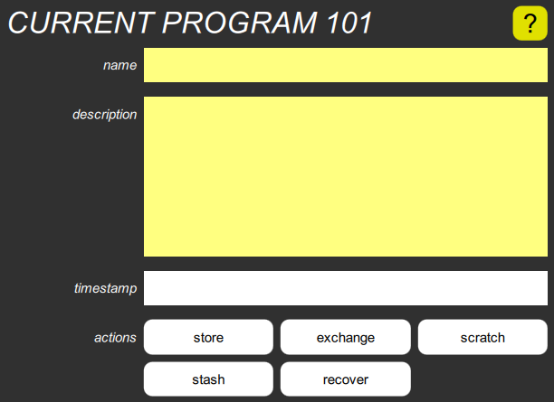
This pops up when you long-press the Program Info button, and shows:
- The optional program name
- The optional description
- The program’s timestamp
- Five action buttons
As with all popups, you can dismiss it by clicking or tapping in the dimmed area around it, or on its title.
The name can be modified by clicking or tapping within the name box, and using the keyboard to edit the name. Press Enter to accept the new name, and you’ll see the timestamp change to the present.
This only changes the current program. To keep the change, you need to use the “store” button, below.
The description can be modified in a similar manner. Since this may have multiple lines, Enter starts a new line, but two Enters at the end accepts the change.
The timestamp shows when the program was created or most recently modified, with 100μs resolution.
Timestamps allow the Digital Chroma to know immediately if two programs are the same, without comparing all the parameters.
The “store” button stores the program under its current number.
You can always use the Undo button in the Navigation bar if you do this by mistake.
The “exchange” button exchanges the program with its stored version.
Exchanging them repeatedly while playing allows you to compare them easily, which is why this button doesn’t dismiss the popup. You can keep track of which is which by looking at the timestamps.
The “scratch” button resets all parameters to their default values, and deletes the name and description.
A scratch program doesn’t have a timestamp until you begin to edit it.
The “stash” button stashes a copy of the current program, and the “recover” button recovers it. Since stashing occurs in the Toolkit, and not in the Digital Chroma, it isn’t undoable, but it also has no effect on undo/redo.
This means that you can go back in time with Undo, stash that earlier program, Redo back to the “present”, and then recover and store that program. If you had used Undo to get back to that earlier program, and immediately stored it, all the Redo information would have been lost, and you wouldn’t be able to get back to the “present”.
Hotkeys
Pressing L on the keyboard reloads the current program, discarding any edits. Pressing S stores it under its current number.
These obviously don’t work while you’re typing into the name or description fields.
Connection button
This button shows what MIDI port the Toolkit is currently connected to, and allows you to select a different port.
Normally, you want to connect the Digital Chroma to your computer via its USB device port, which has four virtual jacks that can be used not only for the Toolkit but for recording and playback via a DAW. The names of the ports depend upon the computer’s operating system and the specific driver.
Tapping this button drops down a list of available ports. If you have a Chroma connected to a Windows machine, you may see the following:
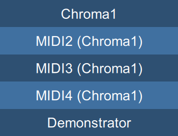
You can tap any of the available choices, and as long as no other program already has that port open, the Toolkit will connect to it, and spend a second or so downloading information from the Chroma.
This clumsy naming is the behavior of the Windows MIDI driver, but the first four choices correspond to what the Digital Chroma calls DevA, DevB, DevC, and DevD. You can choose any of the four virtual jacks, but if you are also recording and playing MIDI with a DAW, you must choose one that the DAW isn’t using.
Connection states
The button shows the current connection state above the port name, which can be:
| Looking for | The selected port doesn’t exist | |
| Waiting for | The selected port is in use by another program | |
| Connecting to | The port has been opened but the Digital Chroma hasn’t responded yet | |
| Connected to | The Digital Chroma is connected |
How can a port be selected if it doesn’t exist? On startup, the Toolkit tries to connect to whatever it was last connected to. If the Digital Chroma has been disconnected or is turned off, then the Toolkit will remain in the “Looking for” state until the Digital Chroma is plugged in and turned on.
Demonstrator mode
The drop down list always ends with the “Demonstrator” choice. Selecting this “connects” to an internal emulator which imitates the communication functions of the instrument, although doesn’t generate any sound. This lets you explore the editor and learn its functions, even if you don’t have a Digital Chroma connected.
Any changes you make to the set of programs in the emulator don’t persist if you close the Toolkit and reopen it again, so you can mess around to your heart’s content without worrying about losing anything.
Screen buttons
At any time you can tap one of these to display the corresponding screen in the rest of the Toolkit window.
The PROGRAMS screen is where you select programs, rearrange them, modify their names or descriptions, delete them, or set up links to them. It normally shows one bank of programs, but has buttons to select any of the nine banks, and can be split between two banks so that you can move programs between them. Normally, the current bank is selected, meaning that it will show whatever bank contains the current program, even if you select a program in a different bank from the Chroma’s control panel.
The EDITOR screen is where you edit programs. It is by far the most complicated screen, because the Digital Chroma is a pretty complicated instrument.
The TOOLS screen is where you manipulate the global parameters that control the overall operation of the Digital Chroma, and perform other utility functions.
The HELP screen is what you’re looking at now. Complete documentation is provided for both the Toolkit and the Digital Chroma itself.
If you long-press this button, it selects this screen and switches to the Home page.
You can also click on various  buttons in other screens, to switch to this screen and bring up a relevant
help page.
buttons in other screens, to switch to this screen and bring up a relevant
help page.
Hotkeys
Pressing P, E, T, or H on the keyboard is another way to switch screens.
Programs screen
This is where you:
- Show which programs exist
- Select programs
- Store the current program
- Rearrange programs
- Link to a program
Showing programs
The Programs screen normally shows one bank of programs, as an array of fifty buttons. Each button shows a program number, and if that program exists and has a name, shows the name as well. If a particular numbered program doesn’t exist, its button is gray.
If a stored program matches the current program, its button is tinted light green. If its number matches, but its contents don’t, it is tinted pink instead.
This happens as soon as you begin to edit the current program. It also can happen if you use the Programs screen to modify the stored program.
To show a different bank, click one of the bank numbers at the top. To show the current bank (the bank containing the current program) again, you can either click its number at the top, or the current button.
The difference between the two is that when current is selected, and you select a program in another bank from the Chroma’s control panel, the Programs screen automatically switches to that bank. There is also a difference when you set up a link.
There are also some indicators that can appear in program buttons:
appears if the stored program contains a link, and shows what program it links to. A 1- or 2-digit number implicitly refers to the same bank; a 3-digit number refers to a specific bank.
 appears if
the stored program contains a sequence program parameter, and shows what
program it refers to.
appears if
the stored program contains a sequence program parameter, and shows what
program it refers to.
means that the program is linked to by the currently selected program.
means that the program is the “sequence program” of the current program, so it will be selected next if the sequence program footswitch is pressed.
Selecting programs
Selecting a program to play it is as simple as tapping a program button. The button turns pale green, to indicate that it is now the current program. If you edit the program, this button turns pink, to remind you that you might want to store the change.
If the program is linked to another program in the same bank, an indicator appears on that other program. Similarly, if the program’s “sequence program” parameter refers to another program in the same bank, an indicator appears on that other program.
To select a program in a different bank, tap the bank number button at the top to see that bank, and then tap the desired program in that bank. When you do so, the highlighted bank switches from the new bank number to the current button, indicating that the bank contains the currently selected program.
If you tap a gray program button, you get a “scratch” program, in which all parameters have their default values. The button is highlighted in pale yellow, but turns pink if you begin to edit the program.
Storing programs
If you’ve edited a program, and you want to store it under the same program number, you can do that from any screen by long-pressing the Program Info button (the second button in the Navigation bar), and then tapping the “store” button. Even easier, just hit S on the keyboard.
But if you wish to store a program under a new number, you have to do that from the Programs screen. You long-press the button of the desired program location to display the Program popup, and then tap the “store” button.
Occasionally, it’s useful to exchange the current program with a stored program. This is done from the same popup by tapping the “exchange” button. When you do this, the current program number doesn’t change. Repeating the function exchanges them again, getting back to where you started, although Undo (or pressing U on the keyboard) is easier.
Rearranging programs
Programs can be moved around in the Programs screen simply by dragging them.
- If you drag a program onto an empty button, it is moved there.
- If you drag a program onto another program, the two programs are swapped.
- If you drag an empty button onto a program, the program moves to the empty location.
If you want to copy a program, you tap its button to select it, then long-press the target location, and tap “store” in the popup.
Moving between banks
If you want to move programs between banks, long-press the other bank number at the top of the screen. That number is highlighted in blue, and the screen is split between the two banks, so you can drag programs from one to the other. Naturally, you can select programs in the second bank, too, or long-press them to see the Program popup.
In this state, tapping bank numbers changes the upper bank, and long-pressing bank numbers changes the lower bank. To exchange the position of the two banks, tap the blue bank button. To revert to a single bank, tap the white bank button.
Linking programs
If the current program is linked to another, you can change most of the link-related parameters in the Link cluster. But if you want to create a new link, or change what program is linked to, you must do that from the Programs screen by long-pressing the desired link target to see the Program popup, and using one of the seven link buttons there.
Program popup
This pops up when you long-press a program button on the Programs screen, and shows:
- The optional program name
- The optional description
- The program’s timestamp
- Thirteen action buttons
As with all popups, you can dismiss it by clicking or tapping in the dimmed area around it, or on its title.
The name of the stored program can be modified by clicking or tapping within the name box, and using the keyboard to edit the name. Press Enter to accept the new name, and you’ll see the timestamp change to the present.
If the stored program matches the current program, this also modifies the current program, so they still match. If they don’t match, the current program is unaffected.
The description can be modified in a similar manner. Since this may have multiple lines, Enter starts a new line, but two Enters at the end accepts the change.
The timestamp shows when the program was created or most recently modified, with 100μs resolution.
The “select” button does the same as tapping the program button on the main screen.
The “store” button stores the current program under this program number.
If you change the name and then store the current program, the new name is overwritten. If you want to store the current program under a new name, store the program first, then reopen the popup and change the name. The same is true of the description.
The “exchange” button exchanges the current program with this stored program. The current program number doesn’t change.
The “store stash” button stores the stashed program under this program number. This is whatever was previously “stashed” in the Current program popup.
The “delete” button deletes the stored program, turning its button gray.
The various “link” buttons set the link parameter in the current program to refer to this stored program, and sets the link mode. The seven choices are:
| link upper | The portion of the keyboard below the keyboard split point plays the Main program, and the upper portion plays the Link program. | |
| link upper unison | The entire keyboard plays the Main program, and the upper portion also plays the Link program. | |
| link unison | The entire keyboard plays both the Main and Link programs. | |
| link lower unison | The entire keyboard plays the Main program, and the lower portion also plays the Link program. | |
| link lower | The upper portion of the keyboard plays the Main program, and the lower portion plays the Link program. | |
| link external | The internal keyboard plays the Main program, and an external keyboard plays the Link program. | |
| link internal | An external keyboard plays the Main program, and the internal keyboard plays the Link program. |
The last two require that an external keyboard be connected to the serial MIDI port or one of the USB host ports, and that the global MIDI Link Input parameter select a channel on that particular port.
The “sequence program” button sets that parameter in the current program to refer to this stored program. This means that when the Sequence Program footswitch is pressed, this program will automatically be selected.
Note: if the current program isn’t otherwise modified, changing the sequence program parameter also stores the current program after making the change, since this parameter isn’t useful except if it is made part of a stored program. If the current program has already been modified, it isn’t automatically stored, since it is up to you whether you want those other modifications to be stored or not.
Bank parameters
When you select a program to link to (or a program to sequence to), it matters whether the current bank selection at the top of the Programs screen is a number, or current. If it is current (the usual case), the link (or sequence program) parameter is set to a one- or two-digit number, with no bank number specified, indicating a reference to the bank containing the current program. If a bank number is highlighted, then the parameter is set to a three-digit number, in which the bank is explicit.
The difference is important if you later store or move the program to a new bank. If the bank number is only one or two digits, then it will refer to the new bank, and perhaps the wrong program. On the other hand, if you are likely to move an entire bank of programs, by saving them to a flash drive and then reloading them into a different bank, then one- and two-digit bank numbers are correct, since the targets will have been moved too. If you want a 3-digit program number, you must explicitly select the appropriate bank button at the top of the screen before displaying the popup.
Editor screen
The Editor screen is fairly complicated, because the Digital Chroma sound architecture has many more parameters than can reasonably be displayed all at once on a single screen. Instead, parameters are grouped into “clusters”.
Clusters
Most of the buttons on the main Editor screen are “cluster buttons”, and tapping any of these buttons displays a popup showing all the parameters in the cluster. The cluster button may contain a simple italicized label, like tone, or may show the (non-italicized) value of the most important selector parameter in the cluster. If the cluster button has a slider next to it, the slider controls the most important variable parameter in the cluster. These sliders are the parameters that you will most commonly be adjusting back and forth when programming the Digital Chroma, which is why they are on the main screen.
Popups
When a popup is displayed, the main screen is dimmed, indicating its controls are temporarily inaccessible. The popup can be dismissed by tapping the dimmed area, or the popup’s title. It is also possible to drag a popup away from the center of the screen by its title, which removes the dimming from the main screen. In this state, you can manipulate the popup controls and the main screen controls; you can even open more popups and move them to different places on the screen. This can be useful if you need to tweak secondary parameters back and forth. The popups can still be dismissed by tapping their titles.
You can also dismiss all popups with the “Escape” key.
Within cluster popups, selector parameters are shown as arrays of buttons for each possible value, with the current choice highlighted. This means it only takes three taps to change a selector value: one to display the popup, one to change the value, and one to dismiss the popup.
Highlighting
You’ll notice that some controls are white and others are gray. Controls are gray if they are not currently affecting the sound. For instance, if a modulation depth is zero, its slider and cluster button are both gray. As soon as the depth is set to a nonzero value, they turn white, unless what they are modulating isn’t actually participating in the sound generation. For instance, if an envelope isn’t used anywhere in the program, it doesn’t matter what you set its parameters to; the controls will always be gray.
Default values
Every parameter has a default value, which is the value it has in a “scratch” sound (the sound of a non-existent program). You can reset a slider to its default value by long-pressing it. You can reset a selector parameter to its default value by long-pressing any of its value buttons. And you can reset an entire cluster to its default values by long-pressing the cluster button.
A few sliders also have a “significant” value, which is a commonly used non-default value. This can be set quickly by tapping the slider. For instance, you can set a pulse width to 50% this way, or to 0% by long-pressing it. Sliders that don’t have significant values ignore a tap.
Copying clusters
You can copy all the values from one cluster into another of the same type by dragging its cluster button and dropping it on the other cluster button. You can also swap two clusters of the same type by long-dragging one onto the other. When you do this, the first cluster is initially reset to its default values, but the previous values are what get dragged to and swapped with the second cluster.
Ganging clusters
If a cluster is dragged onto its A/B twin, the parameters are not only copied but the two clusters are ganged together in parallel. The B channel controls are replaced with a wide button with an equals sign in it, and the A channel controls operate both in parallel. Tapping the equals sign ungangs the controls, allowing them to be individually adjusted again.Sections
The screen is divided into sections. The COMMON section contains parameters that don’t pertain directly to the actual sound generation, like the link parameters. The CONTROL section contains overall sound parameters. The remaining sections on the left are control signal generators, two in each section, and they can be freely assigned to any modulation inputs. The sections on the right side of the screen are pairs of sound generation and processing modules, which can be interconnected in various ways according to the patch parameter. The sections are:
- COMMON
- CONTROL
- GLIDE A & B
- SWEEP A & B
- ENVELOPE 1A, 1B, 2A, 2B
- OSCILLATOR A & B
- WAVESHAPER A & B
- FILTER A & B
- AMPLIFIER A & B
You can also see the above help pages by tapping the
 button in the corners of the
sections.
button in the corners of the
sections.
Where used?
In an architecture as versatile as the Digital Chroma’s, one often wonders where some control signal generator is actually used. The Editor screen makes it easy to find out. If you tap the title of any of the control signal generators on the left side of the screen (i.e., GLIDE A, GLIDE B, SWEEP A, etc.), other cluster buttons will turn bright red if those control signals have any effect on those clusters.
The small buttons just below the Editor title let you do the same thing for the performance control inputs.
Hotkeys
You can dismiss all popups with the “Escape” key.
You can increment and decrement a parameter (or a ganged pair) using the Left and Right cursor keys. These are always connected to whatever parameter was last modified via a button or slider in the Toolkit.
COMMON section

This section contains parameter clusters that aren’t directly related to the sound generation:
- The Sequence cluster determines what program is selected next, when you tap the Sequence Program footswitch. Its button shows its current setting.
- The Controllers cluster contains the keyboard algorithm, and various options for the footswitches and optional ribbon.
- The Link cluster contains parameters that apply when the current program is linked to another stored program (or to itself). Its button shows the current link mode and program.
- The Edit cluster determines what parameter, or A/B pair of parameters, is connected to the parameter control on the Digital Chroma’s control panel.
It also has two octave transposition parameters, one for the Main sound and one for the Link, each of which has three settings, down one octave, normal, and up one octave. These are on the main screen since they are often useful during performance.
This is called the “common” section because a future version of the Digital Chroma may support more than one sound architecture, in which case all architectures will have the same set of common parameters.
COMMON sequence cluster

This displays the sequence program parameter, which determines which new program will be selected when the Sequence Program footswitch is pressed. The program button can only reset it to its default value of “previous” by long-pressing it. This makes the footswitch revert to the previously selected program, including any unsaved edits. This parameter can only be set to an actual program by using the Program popup from the Programs screen.
Note that the program number shown before the name may be either a 1- or 2-digit number to sequence to the program in the same bank as the current program, or a 3-digit number to sequence to a specific bank. The difference is significant if the current program is ever moved to a different bank.
COMMON controllers cluster
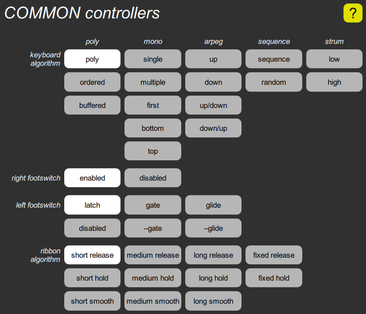
This contains several parameters that select various input modes.
The keyboard algorithm has sixteen choices, including various polyphonic, monophonic, arpeggiated, sequenced, and strum algorithms. The default choice is the first one, the basic polyphonic mode.
The footswitch mode parameter is shown as two sets of buttons, one to enable or disable the sustain footswitch, the other to choose from the various modes of the left footswitch.
The ribbon algorithm determines how the value generated by the optional ribbon controller is affected by touching, sliding, and releasing.
COMMON link cluster

This contains all parameters pertaining to the link. The link program button shows the number and name of the program linked to (or that would be linked to if the link mode weren’t set to “no link”). It can only be set by using the Program popup from the Programs screen, except that it can be reset to its default value, which is “self” by long-pressing the button. This choice causes the main and link to play the same sound, and for any edits to be directed to both of them. In “link unison” mode, this sounds similar to voice stacking, except that the two sounds still have independent main transpose and link transpose parameters.
Note that the program number shown before the name may be either a 1- or 2-digit number to link to the program in the same bank as the current program, or a 3-digit number to link to a specific bank. The difference is significant if the current program is ever moved to a different bank.
The link mode buttons select which keys play the main sound and which play the link sound. The keyboard split slider sets the keyboard split point, which is used in the modes with “upper” or “lower” in their names. It is, however, easier to set the keyboard split from the Digital Chroma’s control panel, by pressing SET SPLIT and then pressing the key that is to be the bottom of the upper portion of the keyboard.
The last three sliders introduce variations into the main and link sounds, but only when a link is in effect. The link balance adusts the relative volumes, the link detune adjusts their relative tuning, and the link spread nudges or forces them toward opposite sides of the pan range.
COMMON edit cluster
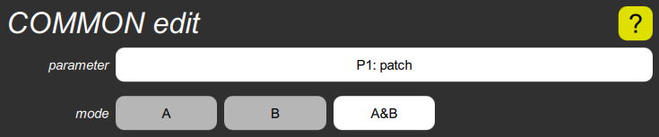
This shows the edit parameter and edit mode parameters. The former is the parameter to which the Digital Chroma’s parameter control is connected. The latter is whether it affects the A channel of a channelized parameter, the B channel, or both in parallel.
The parameter button shows the parameter number the way it is shown in the Digital Chroma’s display, as P and a number for a regular parameter, or X and a number for an extended parameter. This is most easily changed from the Digital Chroma’s control panel by going into PARAM SELECT mode and then pressing a numbered switch. It can also be set in the Toolkit by first manipulating the parameter on the main screen or in one of the cluster popups, then displaying this cluster and tapping the parameter button. It can also be reset to its default, which is “P1: patch” by long-pressing it. And of course, you can change the mode with the three smaller buttons.
CONTROL section
This section contains miscellanous sound parameter clusters:
- The Patch cluster only contains the patch parameter, but this is perhaps the most important single parameter, since it controls how the sound processing modules are interconnected. Diagrams are provided for each choice.
- The Selectivity cluster only contains the parameters that control the selectivity of the various controllers.
- The Tone cluster contains controls for a three-band parametric equalizer, plus a distortion control, plus parameters that override the reverb performance controls.
- The Detune cluster lets you detune the B oscillator relative to the A, and to either stretch or randomize the overall tuning.
- The Voice Stack cluster lets you assign up to four voices per note, and spread them out in tuning and pan position.
CONTROL patch cluster
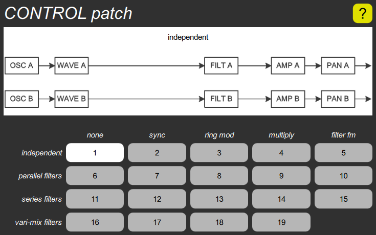
This contains the single patch parameter, with a button for each choice, and a diagram that shows the arrangement of the sound processing modules for the current choice. They are arranged in a matrix, where the row represents the basic interconnection, and the column represents a special effect that modifies the interconnection. See the above link for more details.
Sounds are designed for a particular patch. While you can always change the patch parameter on an existing sound, it is likely to make it sound worse, not better, so it is primarily something that is chosen first when creating a new sound.
The default patch is the first one: independent.
CONTROL selectivity cluster
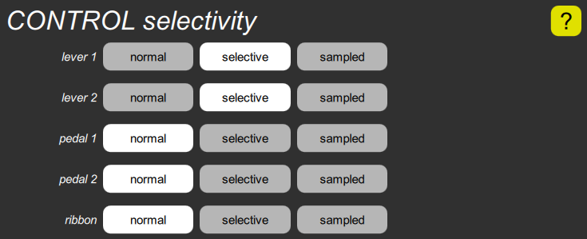
This includes the parameters for controlling the selectivity of the performance controls, including the lever modes, the pedal modes, and the ribbon mode.
CONTROL tone cluster
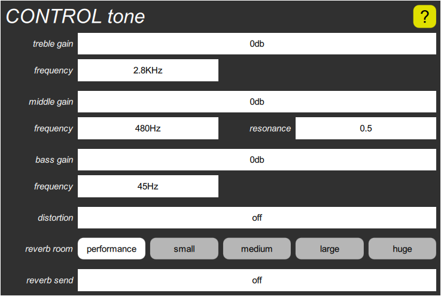
All voices that belong to a particular virtual instrument are combined together and fed into a stereo three-band parametric equalizer, then a stereo distortion effect, and finally into one of the reverb rooms. This cluster contains seven parameters for controlling the tone, one for controlling the distortion, and two for overriding the reverb performance controls.
The tone control has long sliders for the treble gain, the middle gain, and the bass gain, and short sliders for the treble frequency, the middle frequency, the middle resonance, and the bass frequency.
The distortion control has one long slider, which introduces symmetric (odd harmonic distortion) on the positive side, and asymmeteric (even harmonic) on the negative side.
The reverb room control has five buttons for selecting the room size, and the reverb send slider sets the send level. If reverb room is set to “performance”, the reverb performance controls derived from the global reverb room and reverb send parameters take effect, and the program’s reverb send is ignored.
CONTROL detune cluster
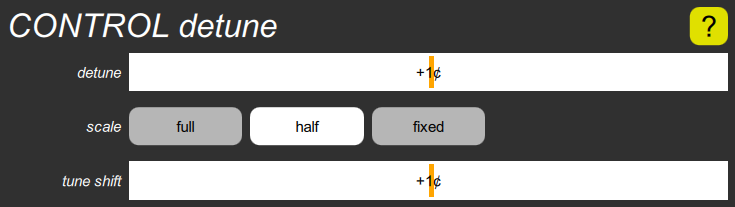
The detune parameter shifts the tuning of oscillator B without altering oscillator A. The scale parameter determines how the detuning varies across the keyboard, and has three choices, a constant cents detune, a constant Hertz detune, or a compromise between the two.
The tune shift parameter alters the pitch of both oscillators, either by stretching the tuning or randomizing it.
Detuning is applied to the glide generators, and through them to the oscillators. It therefore also affects filter tuning if glide is used as a mod source, which is the normal case if a filter’s resonance is turned all the way up to make it oscillate.
CONTROL voice stack cluster
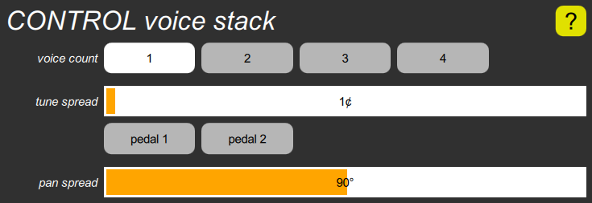
This cluster allows multiple voices to be played for each note. The voice count parameter specifies the number of voices, up to four. All voices have the same sound, but the following parameters introduce differences; they have no effect if the Voice count is one.
The tune spread parameter causes the voices to be detuned. This is a half-scale detuning, in which the beat frequency doubles for each two-octave increase in pitch. The range is zero to 50¢, with a default value of 1¢ so that the instrument doesn’t sound completely dry. However, there are two special values at the high end of range, which connect this parameter to either pedal. You can quickly set either of these values with the buttons below the slider.
The pan spread parameter causes the voices to be spread out across the pan range. At zero, it does nothing, and all voices are controlled by the same Pan parameters so have the same position. At 45° (the default), the pan range is cut in half, so that when two voices are assigned to the same note, the first can be panned from left to center (centered around –45°) and the second can be panned from center to right (centered around +45°). 90° forces one voice all the way to the left and the other all the way to the right, no matter what the Pan parameters say.
GLIDE section

Each of the two “glide” generators takes the note number and turns it into a control signal that varies an oscillator frequency. GLIDE A always controls OSCILLATOR A, and GLIDE B always controls OSCILLATOR B, but either of them can also used for modulating anything else. The glide generators can also filter the changes in pitch, by applying portamento, which causes pitches to slide from note to note, or glissando, which causes them to go through chromatic steps from note to note.
Since there are only four parameters controlling the glide, each glide only has one glide cluster. The button shows the current shape parameter, and the slider controls the time. The cluster also contains a mod select and mod depth for modulating the time.
GLIDE cluster
This contains buttons for the shape parameter, a slider for the time parameter, buttons for the mod select, and a slider for the mod depth.
SWEEP section

A “sweep” generator is what many other synthesizers call a “low frequency oscillator”, or simply “LFO”. Each of the two sweeps outputs repetitive low frequency patterns, most commonly sine waves, for producing effects such as vibrato, but also for triggering envelopes or running the arpeggiation keyboard algorithms. The sweep parameters fall into two categories, so each sweep has two parameter clusters:
- The rate cluster contains parameters that pertain to rate or time. The button shows the current sweep mode parameter, and the slider controls the basic rate.
- The amplitude cluster contains parameters that pertain to amplitude or shape. The button shows the current amplitude mod select parameter, and the slider controls the mod depth.
SWEEP rate cluster

This contains parameters related to the sweep synchonization and rate. The mode parameter chooses between a per-voice sweep or a common sweep in the virtual instrument, and also determines whether the sweep is reset to the start of a cycle on a key press.
The rate parameter is the basic rate before modulation. Slow rates are shown as cycle times in seconds, while faster rates are shown as frequencies in Hertz. The highest eight settings synchronize the sweep to received MIDI clocks (on any MIDI input port) with eight different possible ratios. These choices can be quickly selected with the buttons below the slider; they disable rate modulation.
The mod select parameter chooses what to modulate the sweep rate with, and the mod depth parameter determines how much the rate is varied.
SWEEP amplitude cluster

This contains parameters related to the sweep shape and amplitude. The shape parameter has sixteen choices, including some short repetitive patterns. The box to the right of the buttons shows a graph of four sweep cycles, which is the length of the longest pattern.
The mod select parameter chooses what controls the amplitude of the sweep. Since delayed sweep is so commonly used, it includes a built-in delay ramp generator, so that a full envelope doesn’t need to be used. The delay ramp goes from –1 to +1, but the sweep amplitude can’t be negative so the result is to delay for the first half of the time, and then ramp from zero to one over the second half.
The mod depth parameter determines how much the amplitude of the sweep is varied. It scales the modulation around a value of one unit, rather than zero. That is, if the depth is turned off (the default), you always get the full sweep amplitude. If it is set to 100%, the modulation can vary the amplitude from zero to 100%. If it is set to 50%, it can vary the amplitude from 50% to 100%.
The rectangular box is actually a graph of the response, and varies when the two parameters are adjusted. See the mod depth parameter for details on how to interpret these graphs.
ENVELOPE sections
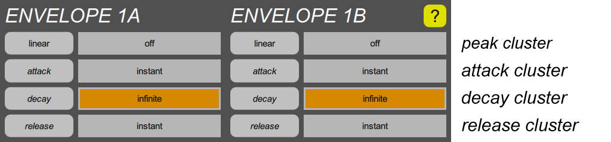
An “envelope” generator creates a time-varying signal that is usually triggered at the start of a note, and that returns to zero when the note is released. Volume is always controlled by at least one envelope, but they are useful for modulating other things as well.
The basic shape of an envelope in the Digital Chroma is called “ADR”, for Attack Decay Release. That is, each envelope goes through an attack phase, rising to a variable peak level that may depend upon key velocity, and then a decay phase in which it falls toward zero, and finally a release phase in which it falls toward zero at a faster rate when the key is released.
More complex shapes are created by using more than one envelope, which is why the Digital Chroma has four of them. For instance, if the decay for one is set short, and the other is set to infinity, they can be combined into the common “ADSR” (Attack Decay Sustain Release) shape. Or if the decay for one is set short, and the attack of another is set long, they can be combined into a “sforzando” shape which consists of an initial short burst which then gradually fades back in. Also, each envelope has an adjustable response to key velocity (or to pedal or lever position), so the user can decide how velocity should affect the two parts of a composite envelope independently.
Finally, ENVELOPE 2A and 2B also have Trigger parameters, which allows the onset to be delayed by any amount, or triggered by various things including either sweep generator, the release of the note, or when ENVELOPE 1A or 1B enters its Decay phase.
The ENVELOPE 1 section has:
- One peak cluster. The button shows the mod select parameter, which translates key velocity (or other controls) into peak level, and the slider shows the mod depth, which is how much the peak amplitude varies.
- One attack cluster. The slider controls the basic attack time, but secondary parameters allow this to be modulated.
- One decay cluster. The slider controls the basic decay time, but secondary parameters allow this to be modulated.
- One release cluster. The slider controls the basic release time, but a secondary parameter allows this to be modulated.
The ENVELOPE 2 section also has:
- One trigger cluster at the beginning. As mentioned, it allows the start of the envelope to be delayed, or triggered by a sweep or other things.
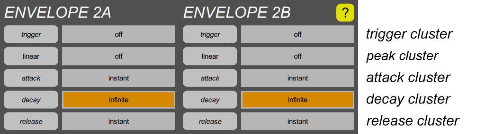
ENVELOPE trigger cluster
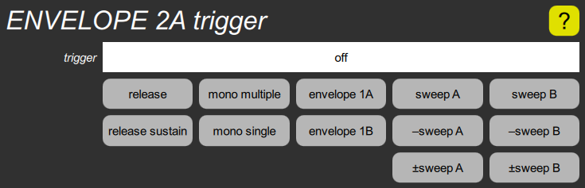
This cluster, which only envelopes 2A and 2B have. contains a single slider for the trigger parameter, which sets the amount of delay before the envelope starts. The highest twelve settings instead cause the envelope to be triggered by things other than the initial key press, and two of the settings cause the envelope to be generated by the virtual instrument so that all voices will share the same envelope. The buttons below the slider allow these selections to be made quickly.
ENVELOPE peak cluster

This sets how the peak amplitude of the envelope is affected by either velocity, a lever position, or a pedal position. The mod select parameter determines what controls the peak amplitude, and for velocity, what the shape of the response curve is. The mod depth slider determines how much the peak can vary. The small box contains a graph that shows the relationship of the velocity or other input value and the resulting peak. If the range is turned off, the peak is always one unit. If the range is turned up, the peak can vary from zero to two units for the first seven selections, zero to one for the rest.
ENVELOPE attack cluster
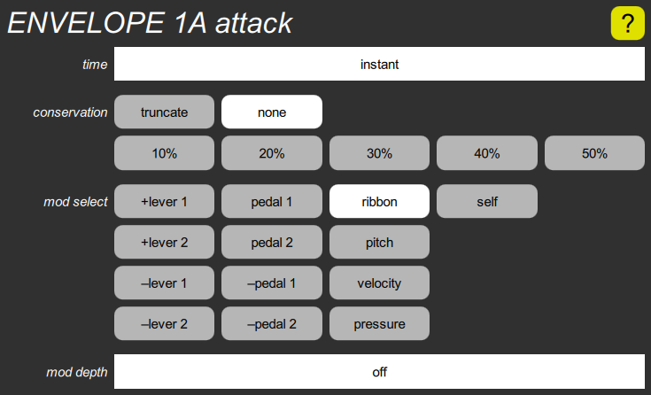
This contains a time slider to set the time it takes for the envelope to rise to its peak. The mod select buttons and mod depth slider allow the attack time to be modulated by either lever or pedal, the note pitch, the velocity, or the optional pressure sensor. It can also be modulated by its own value, which changes the shape of the attack curve. Positive modulation increases the attack time, negative modulation decreases it.
This also includes the conservation parameter, which determines how much of the previous note’s leftover envelope is added to the amplitude of the new envelope when a note is retriggered. It has six choices, from none to 50%, where the higher settings cause the envelope amplitude to grow with each restrike (but still limited to two units). The “truncate” setting does the opposite, forcing the envelope to zero at the start of each note.
ENVELOPE decay cluster
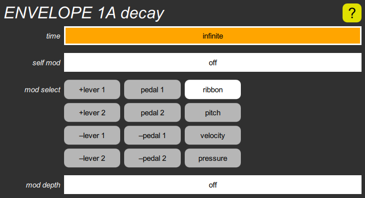
This contains a time slider to set the time it takes for the envelope to drop toward zero once it has completed its attack phase. Since it slows down as it approaches zero, and theoretically never gets there, this is actually the “time constant”, indicating how long it would have taken to get to zero if it didn’t slow down. The default value is infinity, for a note that lasts as long as the key is held.
This also includes two modulation inputs. The self mod slider determines how much the decay time is affected by its own value. When set to a negative value, it causes the initial decay to be sped up; setting it to a large negative value yields a very short initial spike and a long tail, but the lower the envelope amplitude, the less of a spike.
The mod select buttons and mod depth slider allow the decay time to be modulated by either lever or pedal, the note pitch, the velocity, or the optional pressure sensor. Positive modulation increases the decay time, negative modulation decreases it.
ENVELOPE release cluster

This contains a time slider to set the time it takes for the envelope to drop toward zero when the key is released. Since it slows down as it approaches zero, and theoretically never gets there, this is actually the “time constant”, indicating how long it would have taken to get to zero if it didn’t slow down.
This also contains a mod select parameter that can slow the release by various ratios, for “slow” key releases, defined as a release velocity less than the global release threshold parameter. It can also use either pedal to vary the release time from its nominal setting to whatever the decay time is set to, rather like a variable sustain pedal.
OSCILLATOR section
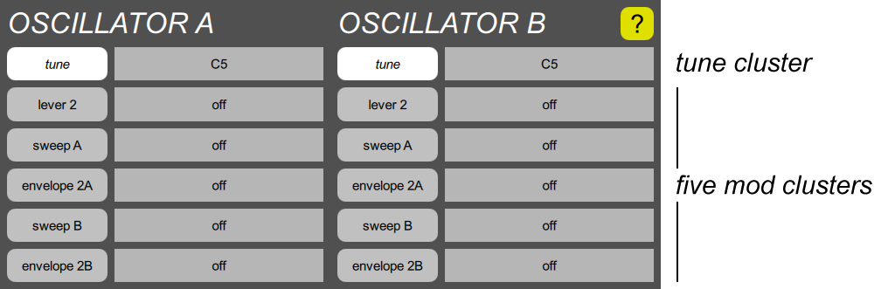
The oscillators generate audio frequencies, whose pitches are controlled by glide generators, and whose shapes are generated by waveshapers. OSCILLATOR A is always controlled by GLIDE A, and its shape is produced by WAVESHAPER A, and the B side is similarly chained together. Each oscillator has the following parameter clusters:
- One tune cluster. All it has is one basic tune slider.
- Five mod clusters. Each cluster button shows the current mod select parameter, and the slider controls the mod depth. The first modulation cluster also has a steps parameter, for sampling or quantizing.
OSCILLATOR tune cluster

This just contains the single tune parameter, but with a longer slider. The tuning is shown as the MIDI note number when middle C is played; the default value is C5, which is middle C, five octaves above MIDI note 0.
OSCILLATOR mod1 cluster
This contains a standard mod select parameter and a corresponding mod depth slider. However, unlike the other four mod inputs, this one also includes a mod steps parameter, to either introduce quantizing to the modulation, or to sample it by a sweep.
OSCILLATOR mod cluster
This contains a standard mod select parameter and a corresponding mod depth slider.
WAVESHAPER section
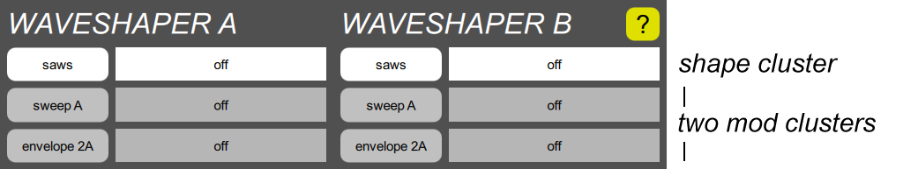
A waveshaper turns the frequency generated by an oscillator into a useful waveshape. WAVESHAPER A is always paired with OSCILLATOR A, and the B channel is similarly paired.
The Digital Chroma supports the same waveshapes as the original Chroma, the saws, pulse, and noise shapes, but also adds simple single-operator FM sounds, and an impulse which can be useful with a highly resonant filter. Its parameter clusters incude:
- One shape cluster. The button shows the current shape, and the slider controls the width.
- Two mod clusters. The buttons show the current mod select and the slider controls the mod depth.
WAVESHAPER shape cluster

This contains the shape parameter, which selects the kind of wave shape, and the width slider which alters the harmonic structure. For the pulse shape, this represents the width of the pulse in percent. For the saws shape, this represents the phase difference between two sawtooth waves, also in percent. For the various FM shapes, it represents the phase modulation depth in cycles. For the noise and impulse shapes, the width has no effect, nor do either of the modulation clusters.
WAVESHAPER mod cluster
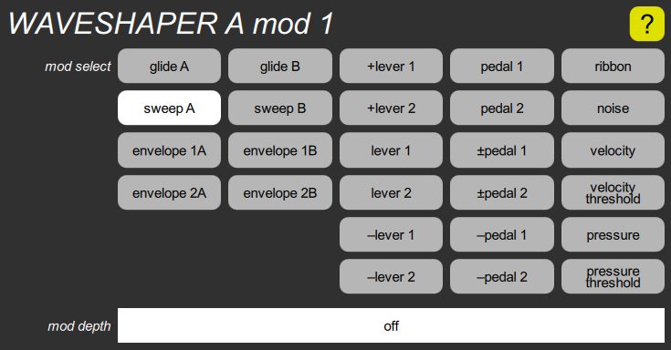
This contains a standard mod select parameter and a corresponding mod depth slider. Note that the depth on the slider is shown in cycles for the various FM shapes, and in percent for the saws and pulse shapes. These have no effect if the shape is set to pink noise, white noise, or impulse.
FILTER section
A filter modifies the harmonic structure of the sound of a waveshaper by filtering out harmonics above/below a certain frequency, and possibly emphasizing the harmonics near that frequency. It has the following parameter clusters:
- One tune cluster. The button shows the current filter mode parameter, and the slider controls the basic tune, before modulation.
- Five mod clusters. Each cluster button shows the current mod select parameter, and the slider controls the mod depth. The first modulation cluster also has a steps parameter, for sampling or quantizing.
- One resonance cluster. The slider controls the basic resonance, but it can also be modulated.
FILTER tune cluster
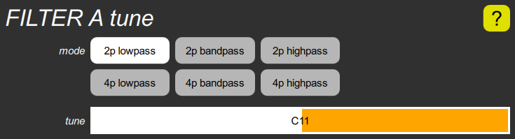
This contains the mode parameter which determines whether the filter passes frequencies up to the tuning frequency (lowpass), frequencies around the tuning frequency (bandpass), or frequencies from the tuning frequency up (highpass). It also determines whether it is a two-pole (2p) filter or four-pole (4p); the latter attenuates out-of-band frequencies twice as much.
This also contains the tune slider, which shows the basic filter tuning before modulation as a MIDI pitch (although it exceeds the MIDI range at the high end). This is the pitch that will be heard if the resonance is turned all the way up so that the filter oscillates.
FILTER mod1 cluster

This contains a standard mod select parameter and a corresponding mod depth slider. However, unlike the other four mod inputs, this one also includes a mod steps parameter, to either introduce quantizing to the modulation, or to sample it by a sweep.
FILTER mod cluster
This contains a standard mod select parameter and a corresponding mod depth slider.
FILTER resonance cluster
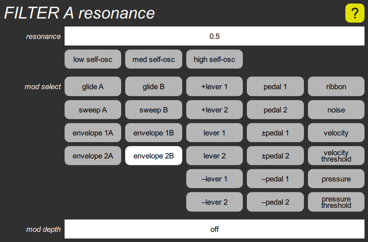
This includes the resonance slider, which adjusts the amount of filter resonance, before modulation. Unlike the original Chroma, which only had eight fixed settings, this is continuously variable, and can be modulated. The highest three settings cause the filter to oscillate, with different degrees of overdrive, superimposing a sine wave on top of whatever signal is being filtered. The three buttons below the slider allow these choices to be made quickly.
The mod select buttons and mod depth allow the resonance to be modulated.
An oscillating filter can play a normal scale if its tuning is set to C5 (middle C) and one of the Filter mod cluster mod inputs uses glide A or B as the mod select, with a depth of 32 semitones per unit.
AMPLIFIER section

An amplifier controls the volume of a sound. The volume is controlled by up to two envelope generators which are added together, and then multiplied by a third post modulation such as a pedal or sweep signal. If connected to the output, it also provides a panning control, which can be modulated. In some settings of the patch parameter, the B amplifier controls the mix between the A and B oscillators, and only the A amplifier goes to the output, so the B pan controls are inactive.
Each amplifier has four clusters:
- Two envelope mod clusters, which are mixed together.
- One post mod cluster, which applies after the envelopes.
- One pan cluster
AMPLIFIER mod cluster
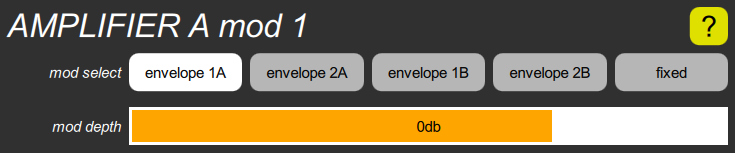
The AMPLIFIER section has two of these for each channel, called mod 1 and mod 2. Each one contains a mod select parameter that chooses a modulation source, and a mod depth parameter that adjusts its level. The two modulations are added together, and then multiplied by the post mod value.
The mod select parameter can select any envelope. The default is envelope 1A for mod 1, envelope 1B for mod 2. You can also choose a fixed 1-unit value, which is only useful in the B channel, when the patch parameter uses the B amplifier to control the mix of the B oscillator with the A oscillator. If you use it on an amplifier that is connected to the output, the note will never turn off, which is likely not what you want. But in the original Chroma, you couldn’t set the mix of the B oscillator without wasting an envelope generator.
The mod depth is shown in decibels, and has a range from off to +6db above the nominal level. The default value for mod 1 is 0db, and the default for mod 2 is off. However, the mod 1 sliders have a “significant” value of off, and the mod 2 sliders have a “significant” value of 0db, which you can quickly set by tapping.
AMPLIFIER post mod cluster
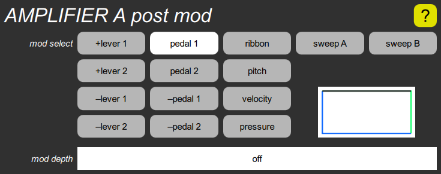
The AMPLIFIER section has one of these for each channel. It contains a mod select parameter that chooses a post modulation that applies after mod 1 and mod 2 are added together, and a mod depth parameter that controls how much to vary the volume.
The mod select parameter gives you eight lever and pedal choices, the optional ribbon controller, pitch, velocity, the optional pressure sensor, or either sweep control signal for tremolo.
The mod depth scales the post modulation around a value of one unit, rather than zero. That is, if the depth is turned off (the default), you always get 100% of the nominal volume. If it is set to 100%, the post mod can vary the volume from zero to 100%. If it is set to 50%, it can vary the volume from 50% to 100%. If it is set to a negative value, it can vary from 100% down to some lesser value.
The rectangular box is actually a graph of the response, and varies when the two parameters are adjusted. See the mod depth parameter for details on how to interpret these graphs.
AMPLIFIER pan cluster
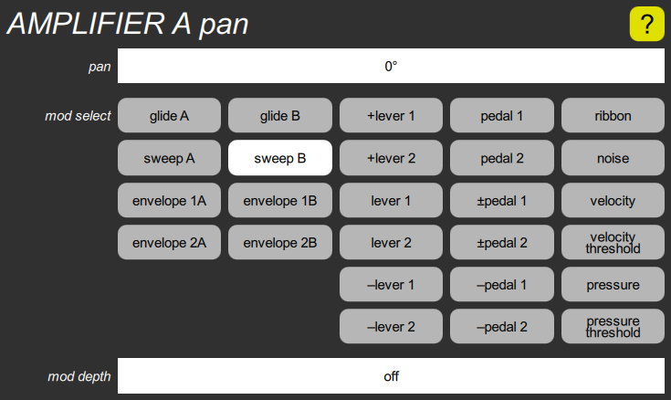
The AMPLIFIER section has one of these for each channel. It contains a pan parameter that adjusts the left/right output position, a mod select parameter to choose a modulation source, and a mod depth parameter to adjust the amount of modulation.
The pan parameter adjusts the balance between the left and right outputs. Its range is –90° (left) to +90° (right), with a default value of 0°.
The mod select parameter gives you the standard choices used by most modulation inputs. The default choice is sweep B, for stereo tremolo effects.
The mod depth parameter adjusts how much of the range corresponds to one unit of modulation input. It is off by default.
Tools screen
These are miscellaneous tools for various purposes:
| Old Chroma import | Importing old Chroma programs from the audio cassette format into Syntech Sysex files. | |
| Old Chroma convert | Converting Syntech Sysex files into banks of Digital Chroma programs in the computer. | |
| Backup & restore | Backing up individual banks, or all banks, from the Digital Chroma to a folder, or restoring from a folder. | |
| Global parameters | Adjusting the global parameters in the Digital Chroma. |
Old Chroma import
The old Chroma provided a crude way to save programs on an audio cassette. Somewhat later, the Syntech Chroma to MIDI Converter provided a cleaner way to convert programs into a MIDI Sysex packet, which could be stored in a computer file. This has become a de facto standard for Chroma program storage. This import tool converts the cassette format into the Syntech Sysex format, after which the Old Chroma convert tool can convert the programs into the Digital Chroma’s format. It can accept input from two sources, depending upon whether the “from device” or “from file” button is selected.
Importing from audio device

Before upgrading your Chroma to a Digital Chroma, you can import the programs it contains by connecting the cassette interface output to the audio input on the computer running the Toolkit. To speed up the process, you should turn on the LOCK switch on the back of the Chroma, so that the programs will be transmitted without two-second gaps between them.
If you have sets of programs already stored on cassettes, you can connect the output of your cassette player to the computer’s audio input instead.
If you need to choose something other than the default audio input on the computer, tap the input device button, and tap the appropriate choice from the popup list.
Next, tap the output file button, use the dialog box to navigate to the folder where you wish to store the Sysex file, enter a file name, and OK the dialog. A .syx extension will be added if you don’t specify one.
Finally, tap the “import” button. A progress bar containing “0 / 0” will appear. This means it has decoded zero out of zero programs received. Press SAVE ALL on the Chroma, or PLAY on the cassette, and you should soon see the progress bar counting the 50 programs. The progress bar also fills in with a pale green color, although any failed program causes a sliver of the bar to turn pink instead.
If you don’t see this activity, you may need to adjust the volume of your cassette, or the input level on your computer. Computers generally provide a way to listen to what’s coming into the line input, to hear if everything’s hooked up correctly. You can abort the operation by tapping the button, which now says “cancel”, and then tap it again to start the import over.
If it doesn’t receive 50 programs, it will stop with the progress bar part way across. If it says “49 / 49” it means it received 49 programs successfully, and the bar will be mostly green. If it says “40 / 44” it means it received 44 programs, but only 40 of them were properly decoded, and there will be some pink slivers showing the bad ones. In any case, you can tap “cancel” to abort the operation, and try again with different settings.
If 50 programs are successfully converted, the operation stops automatically, the progress bar disappears, and the button reverts to “import”. If 50 programs are received but some of them have errors, the progress bar shows a list of the failed programs, and the buttons changes to “dismiss”. You can click the button to dismiss the progress bar, which changes the button back to “import”, after which you can try again. It also copies the list of failed programs (or any other error message) to the clipboard.
Importing from a file

If you have previously used your computer to capture the SAVE ALL output of your Chroma in uncompressed .wav files, or if you’ve received such files from someone else, you can import directly from those files. The tool supports any sample rate from 8KHz to 64KHz, mono or stereo, 8-bit or 16-bit samples. To import from a file, you tap the input file button to select the input file, then tap the output file button to select the output file, and finally tap the “import” button. The progress bar should zip across in a fraction of a second. Errors are handled the same is in the audio input mode.
Old Chroma convert
Once you’ve imported old Chroma programs into the Syntech Sysex format, or if you already have Chroma files in that format and would like to use them in the Digital Chroma, you can use this tool to convert them to the Digital Chroma’s format. Since each Sysex file contains up to 50 programs, the conversion produces fifty separate Digital Chroma program files.
The Digital Chroma has almost twice as many parameters as the old Chroma, and most of the new ones are set to compatible default values. A few, however, are presented in this tool, because you may not wish to rely on the default values. They include:
| tune shift | Positive settings stretch the tuning, making the high notes sharp and the low notes flat. Negative settings introduce increasing amounts of randomization into the tuning. If you like the old Chroma’s sour tuning, try something like “random 5¢”; if you just want it to sound less dry, try “stretch 5¢”. | |
| invert | The preference in the Chroma factory sounds was for pulling lever 2 to raise the pitch, but the levers were wired up so that pushing the levers produced positive modulation values. Therefore, most of the programs were configured so that the lever 2 modulation depth was a negative number. If your programs are mostly set up like this, then you should use the “inverted” choice, at least for lever 2, which causes these modulation depths to be made positive. This way, the results will agree with your global invert parameter settings, instead of contradicting them. | |
| selective | These choose whether the levers are configured in normal or selective mode. The latter is recommended, since this is a useful feature, and it is rarely important that a lever not be selective. | |
| voice count | Since the Digital Chroma has so many voices, it’s often worth spending them on fattening the sound, by setting the voice count parameter to something greater than 1. | |
| pan spread | If the voice count is greater than 1, this parameter spreads out the voices assigned to each note in the stereo field. The default value of 90° is a good choice, although 180° results in less obvious beating, because the mixing takes place more in the air. | |
| tune spread | If the voice count is greater than 1, this parameter should be used to detune the voices a little. Something larger than the default value of 1¢ is probably optimum, perhaps 5¢. |
Since the conversion is a quick operation, you can try a conversion, play some of the resulting programs while tinkering with the parameters to find the best conversion settings, and then redo the conversion. Of course, all programs will end up with the same settings, so you should choose the most generally useful settings, to minimize the number of programs you’ll want to edit individually.
To do the conversion, tap the input file button, navigate to the folder containing the Syntech Sysex file, and select the appropriate file. After setting the various parameters, you can choose between two destinations for the results:
Converting to a Digital Chroma bank

Tapping the “to bank” button presents you with nine numbered bank buttons. Choose the bank you wish to overwrite, and then tap “convert”. As soon as the conversion is complete, you can begin playing on those programs.
This overwrites an entire bank of programs. However, all changes to programs stored inside the Chroma are protected by the Undo mechanism, so you can undo the conversion operation if you write to the wrong bank.
Converting to a folder
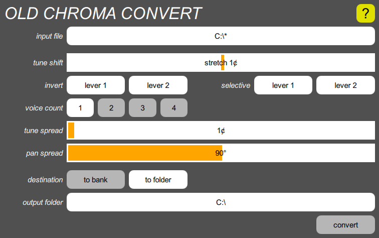
Tapping the “to folder” button presents you with a button that lets you choose a folder on the computer. The conversion creates fifty files in that folder, called “01.chr” through “50.chr”. You can later copy them into the Digital Chroma using the Backup & restore tool.
If you convert into an existing folder, any old files of those names are overwritten. Since these are not inside the Digital Chroma, they are not protected by the Undo mechanism.
Program metadata
This tool provides one more feature. If you want to give all your programs names, you can use a plain text editor (e.g., Notepad in Windows, TextEdit on the Mac) to prepare a file with the names, one to a line, and store it in the same folder as the Syntech Sysex file, with the same name but with the extension “.txt”. The conversion will use the text in line 1 for the name of program 1, and so on. If a line is empty, that program won’t be named. If there are too few lines, the trailing programs won’t be named. If there are too many lines, the excess will be ignored. Because of the limits of the Digital Chroma’s display, you can only use basic ASCII characters.
If you screw up the names, it’s easy to tweak the text file and re-run the conversion, since it is a quick operation.
No comparable function is provided for descriptions. Those must be entered manually after the conversion, using the Program popup on each program.
The timestamp assigned to each program reflects when the conversion took place. All programs will have slightly different timestamps.
Errors
Normally, after a conversion, a light green box saying “success” appears to the left of the “convert” button for a second. If any error occurs, a pink box with an error message appears instead. In this case, the button changes to “dismiss”, and you must tap it to dismiss the message before you can retry the operation.
Backup & Restore
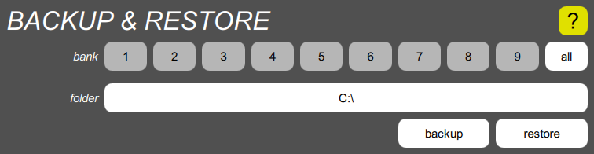
This tool lets you back up a single bank, or all banks, from the Digital Chroma to a folder on the computer running the Toolkit, and to restore single banks or all banks back to the Digital Chroma.
Backup
Tap the bank button corresponding to the bank you wish to back up, or tap “all” for all of them. Then tap the folder button, navigate to the folder you wish to store the programs in, creating it if it doesn’t already exist. Finally, tap the “backup” button. A progress bar will momentarily appear, and any problem will cause a message to appear in place of the progress bar. You can dismiss this message by tapping it.
A single bank is backed up as up to fifty files named “01.chr” to “50.chr”. A non-existent program is represented by the absence of the corresponding file. All banks are backed up as nine sub-folders named “1” through “9”, each containing up to fifty program files.
If you back up to an existing folder that already has Digital Chroma programs in it, those programs will be overwritten, or deleted in the case of non-existent programs. Since these old programs are contained in the computer and not the Digital Chroma, they are not protected by the Undo mechanism, so make sure you don’t back up to the wrong place.
Restore
Tap the bank button corresponding to the bank you wish to restore, or tap “all” for all of them. Then tap the folder button, navigate to the folder that contains the programs. Finally, tap the “restore” button. A progress bar will momentarily appear, and any problem will cause a message to appear in place of the progress bar. You can dismiss this message by tapping it.
If you’re restoring a single bank, you must choose the folder containing the up to fifty “.chr” files. If you’re restoring all banks, you must choose the folder containing the nine numbered sub-folders. When you restore a single bank, you are free to restore it into any bank, not necessarily the one you originally backed up.
When you restore, all programs in the affected bank or banks within the Digital Chroma are overwritten, or deleted in the case of missing programs. If you select an erroneous folder that has no programs in it, the Toolkit will delete all programs in the affected bank or banks. However, the old programs are protected by the Undo mechanism, so you can undo the restore operation if you accidentally restore from the wrong folder, or if you restore into the wrong bank.
Flash drive backup
The Digital Chroma has panel functions (the old cassette interface) that allow banks to be backed up and restored to an external flash drive. These are always stored in the same form as a Toolkit backup of all banks, with subfolders “1” to “9”. Those subfolders are contained within a root folder usually called “CHROMA1”, although the final digit matches the name used by the instrument over USB and Ethernet, as set by the Chroma number calibration function. Since the format is the same, it is possible to back up via the control panel and then restore via the Toolkit, or vice versa.
Global parameters
This section of the Tools screen provides direct access to all the global parameters in the Digital Chroma. The complete list is here.
Help screen
This is a simple browser that lets you peruse all the documentation for the Digital Chroma and the Toolkit. It has the following features:
- It works like a web browser, with blue links you can tap or click to navigate to different pages.
- Green links pop up a definition, which you dismiss by tapping outside of. It may contain further links, and if you follow a chain of green links, you can back up by clicking within the popup.
- If a page is longer than the screen, you can scroll by dragging the page up or down. You can also use a mouse’s scroll wheel. You can also long-press in the bottom half (but not on a link) to scroll all the way to the end, or in the top half to scroll back to the beginning.
- Clicking or tapping a button
anywhere in the Toolkit switches to the Help screen, to whatever
tab you were last viewing, and navigates to a page that explains the
section of the Toolkit containing that button.
- You can open multiple pages in tabs. If you long-press a link, or on a
button, it creates a new tab for
that page, and you can click or tap the tabs to switch among them.
Long-pressing a tab closes it; long-pressing the only tab opens a new one
on the Home page.
- Long-pressing the HELP button switches to the Help screen, to the current tab, and navigates to the Home screen.
- As in a web browser, each tab has a history, which you can go back
through with the button at the top of
the screen. Once you’ve gone back, you can go forward again with
.
- All the help pages are organized into an outline, which you can view
here, and also navigate in order using the three buttons at
the bottom of the screen. The
 button
goes to the next page at the same outline level,
button
goes to the next page at the same outline level,
 goes to the previous page, and
goes to the previous page, and
 goes to the parent page at the next
higher outline level.
goes to the parent page at the next
higher outline level.
Hotkeys
You can scroll a page at a time with “Page Up” and “Page Down”, or to the beginning or end with “Home” and “End”.
You can dismiss a definition popup with “Escape”.
You can navigate backward and forward through the history with “<” and “>”, or their unshifted equivalents “,” and “.”.
You can navigate through the outline with “Left”, “Up”, and “Right”. You can also use “Down” to go to the first child of the current page.
There is no button at the bottom for this because you can just click the link within the page.
Undo/Redo buttons
These buttons in the Navigation bar invoke the Undo and Redo functions of the Digital Chroma. They also show what changes are next in line for undoing or redoing. This feature makes it really hard to lose any of your program data.
The Digital Chroma records undo information for all edits to the current program, as well as all changes to stored programs. This even includes bulk changes to stored programs, as a result of importing programs from an external flash drive. (It doesn’t include changes made to the flash drive, though.)
As edits are made to the current program, the Digital Chroma doesn’t record each tiny change as a separate undoable event. Instead, it combines consecutive edits into a single change until a certain period of inactivity elapses. Other operations, like loading and storing, are always recorded as distinct operations. Loading a bank of programs, or all programs, from a flash drive is treated as a single operation.
You can adjust this time with the global edit timeout parameter in the TOOLS screen, but it is initially set to five seconds
When you undo something, the change is moved from the undo list to the redo list, so that you can redo it if you change your mind. This means that you can go back in time to see what your program sounded like earlier, and then go back to the “present” and proceed with your editing.
Note however that if you have undone something, and then you perform any other undoable operation, all your redo information is discarded.
This is identical to the way undo and redo work in programs like word processors, or the way the Back and Forward buttons work in web browsers (and in this help browser).
Since “doing” anything leaves the redo list empty, you can use Redo to start a new undoable edit operation, rather than waiting for the timeout, if you think you might want to get back to the current state.
Hotkeys
You can press R or U on the keyboard to invoke these functions.
Digital Chroma
This section describes how to use the Digital Chroma, controlling it via its own control panel.
- Digital Chroma quick-start
- Digital Chroma architecture
- Programming sounds
- User interface
Digital Chroma quick-start
This tells you what you need to know to get up and running.
- Hookup
- Initial calibrations
- Selecting sounds
- Volume and tone
- Levers
- Undo/Redo
- Powering off
Hookup
In case someone else installed the Digital Chroma upgrade kit for you, and you’re presented with the complete instrument for the first time, you’ll need to know how to set it up.
- Connect the dual footswitch to the DUAL FSW jack on the rear panel.
- If you have one or two variable pedals, connect them to the PEDAL jacks.
- For analog audio out, connect a stereo 1/4" plug to the LEFT/STEREO jack, or connect separate mono plugs to RIGHT and LEFT/STEREO. The LEFT/STEREO jack is also usable with headphones.
- If you’re going to use the Digital Chroma Toolkit on a PC, Mac, or Linux machine, connect a standard USB cable between the USB DEVICE jack and the computer.
- Connect a power cord to the POWER jack, and plug the unit in.
Since the Digital Chroma is based on a conventional desktop PC motherboard, you turn it on the same way you turn on any other computer, by pressing the POWER pushbutton firmly for a second or so. The display will say Starting up…, and after a short interval, it will show program 101 (bank 1, program 1), and play normally.
Initial calibrations
The Digital Chroma has a number of calibrations that are done before you receive the kit, but there are two you will have to do yourself. If you’re not in the U.S. Pacific time zone, you’ll need to set the correct timezone, so that the clock will display the right time. And if you have one or two variable pedals, you’ll need to calibrate their ranges, since all pedals are different.
For details on calibrations, go here. The pedals use calibrations 27 and 28, and the timezone is set using calibration 36.
Selecting sounds
The instrument starts up with the PROG SELECT switch lit up in the PANEL MODE section. This means that the numbered switches in the right section of the panel select different sound programs. You can press any of the fifty switches to select different sounds in bank 1 (programs 101 through 150). To try programs in other banks, you can hold PROG SELECT like a shift key and press 1 through 9 to select the bank, and then press one of the fifty switches to select a program within that bank. The new bank will remain selected until you explicitly switch to a different bank.
As shipped, bank 1 contains a family of sounds designed expressly for the Digital Chroma, and banks 5 through 9 contain translations of the original Chroma’s five sets of factory sounds. Banks 2 through 4 are empty, so selecting any sound in those banks will result in a raw sawtooth “scratch” sound.
Volume and tone
The Digital Chroma uses the VOLUME slider as a performance control, rather than as a master volume control on the final output. Similarly, the tone controls are actual parameter controls that are stored as part of the program. You should use the volume and tone controls of your amplifier or mixer to compensate for the overall level or the sound of the speakers, and use the Chroma’s controls for relative adjustments.
There is, however, a master volume control. If you press SET SPLIT, the VOLUME slider becomes a master volume control. It is set to maximum whenever the Digital Chroma is started.
Finally, there is an Analog Master global parameter which is described here. It reduces the analog output relative to the digital output, to avoid clipping when driving low-impedance headphones.
Levers
If you’re not used to levers for modulation and pitch bend, you should know that the left lever (Lever 1) is normally assigned to modulation, and the right lever (Lever 2) is assigned to pitch bend. The fingers naturally align so that the thumb and forefinger are on either side of lever 2, while the middle finger is behind lever 1. This allows lever 2 to be both pushed and pulled, which is important for bending, while lever 1 is most easily pulled, which is all you really need for most modulation. With practice, you can learn to work the two levers independently, with only minimal finger movement, and no wrist or arm motion.
As shipped, pulling on lever 2 raises the pitch. This is nice if you usually bend upward, because it is easier to pull with your forefinger than push with your thumb. But if you prefer pushing to raise the pitch you can quickly swap the lever polarity by changing a global parameter. Make sure PROG SELECT is on, then press SET SPLIT, 12. The data readout will show the Lever 2 Polarity parameter, and the value “positive pull”. Move the parameter control to change this to “positive push”. Although it is less important, SET SPLIT, 11 allows Lever 1 to be inverted as well.
Undo/Redo
In any programmable instrument, it is easy to lose important information if you press the wrong button. You’ve created a new sound, and you store it under the wrong number, losing another program. In the Digital Chroma (as in the original Chroma), it is also easy to lose a bunch of edits you’ve made to a program but haven’t saved yet by selecting a new program, because you tried to select a parameter but didn’t notice that you had put the panel back into PROG SELECT mode.
The solution to this is Undo. Since the Digital Chroma never goes out of tune, the AUTO TUNE switch has been appropriated for this purpose. Any time you do the wrong thing from the control panel, just press AUTO TUNE and it undoes the last thing you did, and briefly shows what it undid in the display. Press it repeatedly and step backward through time as far as you want. The undo buffer is usually large enough to hold everything you changed since you turned the instrument on.
Here are the things that you can undo:
- Selecting a program from the panel, or via the Sequence Program footswitch. This includes special functions like selecting a program except for its link parameters. When you undo a program selection, you get back exactly what the current program was before, including any edits you hadn’t saved.
- Editing the current program. Edits that occur within a few seconds of each other are combined into single undoable events.
- Storing a program from the panel. When you undo this, it restores the previous program that was stored under that number, and restores the current program’s previous number. If you had made any edits to the current program, you will now have to store them somewhere else if you want to keep them.
- Exchanging the current program with a stored program, via the SET SPLIT, STORE function. Undo exchanges them again.
- Loading all programs, or individual banks of programs, from an external flash drive, using LOAD ALL or LOAD ONE. All changes are undone in a single Undo. Note that saving programs to an external flash drive is not undoable.
- Modifying stored programs via the network. All changes detected within a second or so of each other are combined into a single undoable event.
- Restoring all programs, or individual banks of programs, via the Toolkit’s Backup & restore tool, or converting a bank of programs using the Old Chroma convert tool. All changes are undone in a single Undo. Note that backing up programs is not undoable, because the backups are external to the Digital Chroma.
If you go back in time by many steps, it’s also easy to go too far. If you do that, the solution is Redo, which is invoked with SET SPLIT, AUTO TUNE. This redoes the last thing you undid, and briefly shows what it redid in the display. You can repeat this operation until you’ve gone all the way back to the “present”, and there is nothing more to redo. But be aware that as soon as you perform any of the functions listed above, the redo buffer is discarded, and you can only undo.
The Undo/Redo mechanism records all changes regardless of whether they come from the Digital Chroma panel or the Toolkit. Undo and Redo can also be invoked by the Toolkit.
Powering off
Since the Digital Chroma is a computer, it’s not generally a good idea to turn it off by yanking the power. This can, in rare cases, lead to corruption of the files that store your programs. Instead, press the power switch firmly for a second. The display will say “Shutting down…”, and the instrument will turn off after a second or so. Then, it is safe to unplug the unit if you need to pack it up and move it.
If the unit ever crashes (not that that is likely to happen), you can force the power to shut off by holding the power switch for five seconds. Then, after waiting a few seconds, you can press the power switch again to restart the instrument.
Digital Chroma architecture
To program the Digital Chroma, you should have a basic grasp of subtractive synthesis. The Chroma, like all subtractive synthesizers, works by generating raw wave shapes that have loads of harmonics, and feeding them into filters that reduce the harmonic content. Crafting sounds involves deciding how the various characteristics of the sound (pitch, pulse width, filter tuning and volume) should vary in time, and vary with key velocity, levers, etc., and figuring out how to make the available tools (envelope generators, sweep generators, etc.) make those shapes.
This section will assume you basically “get” subtractive synthesis, but are unfamiliar with the Chroma. Perhaps you bought a used Chroma simply to install the Digital Chroma Upgrade Kit, because you liked the sound of it. Or perhaps you’re just reading this documentation to get an idea of what the Digital Chroma is capable of doing, to decide whether you’re interested.
- Voice architecture
- Instrument architecture
- Control architecture
- Parameter organization
- Program organization
- Program linking
- Additional link parameters
- Sequence Program
- Summary
Voice architecture
The Digital Chroma has a large number of voices, each of which is a software entity capable of playing one note at a time. The resources contained in each voice are shown in this diagram:
The vertical arrows show control signals, while the horizontal arrows in the bottom section show audio signals. The disconnected arrows pointing into the various resources are modulation inputs, most of which can be connected to any single arrow pointing out of other resources, with an arbitrary amount or “depth” factor.
Performance input
The top row shows the inputs from the keyboard, which produce notes, velocities, and optionally polyphonic pressure. It also shows the inputs from the two built-in levers, the two inputs for optional pedals, and the optional ribbon controller.
Control signal generators
The middle section shows the user programmable control signals.
- The GLIDE modules are permanently driven from the keyboard’s note pitch, and can generate smooth slides (portamento) or chromatic scales (glissando). The T input indicates the glide time can be modulated by other things.
- The SWEEP modules correspond to what are often called Low Frequency Oscillators, or LFOs, in other synthesizers. They generate repeating control signals, such as sine waves for vibrato, square waves for trills, or more complex patterns. The R and A inputs indicate that both the rate and the amplitude can be modulated by other things.
- The ENVELOPE modules generate time-varying signals that are triggered at the start of each note, with a peak value that can be made dependent on key velocity or other things. The Chroma’s envelope shape is ADR, meaning that each envelope has an Attack phase, a Decay phase, and a Release phase. More complex shapes, such as the common ADSR (Attack/Decay/Sustain/Release) shape are obtained by mixing two ADR envelopes with different settings. The A, D, and R inputs indicate that these three parameters can be modulated by other things, and the P input indicates that the peak can be modulated. ENVELOPE 2A and 2B each have an additional Trigger parameter which can either delay the start of the envelope, or cause the envelope to be triggered by other things besides key presses.
Audio processing
The bottom section shows the audio modules.
- The OSCILLATOR modules determine the pitch of notes. Their basic pitch is permanently controlled by the corresponding GLIDE generators, but there are also five modulation inputs, for things like pitch bend and vibrato.
- The WAVESHAPER modules determine the initial harmonic content of notes. They can generate pulse waves with a variable width, a “saws” shape which combines two sawteeth with a variable phase delay between them, or white or pink noise. Unlike the original Chroma, they can also generate simple single-operator FM sounds. There are two modulation inputs for the pulse width, saws phase, or FM depth.
- The FILTER modules modify the harmonic content of the sounds. Each can be configured as a 2-pole or 4-pole lowpass, bandpass, or highpass filter. They have continuously variable resonance (unlike the original Chroma’s eight fixed settings), and can be made to self-oscillate by setting the resonance to maximum. They have five modulation inputs for the tuning, plus one for the resonance.
- The AMPLIFIER modules adjust the volume of the sound, and have three modulation inputs for volume, plus one for output panning. The first two modulation inputs come from any of the four envelopes, and the third is for post-modulation by other sources like a pedal.
The diagram shows the default interconnection among the audio modules, as two independent single-oscillator channels that are mixed at the output. These are often programmed to have the same sound, with slight detuning between them, and with the outputs panned to left and right for spaciousness. But the PATCH parameter in each program allows the modules to be interconnected in a number of different ways, and allows for special effects like Sync and Ring Mod. Details of this can be found here.
Instrument architecture
All voices that are playing the same sound belong to the same virtual instrument. From the keyboard, you can play on two instruments, called the Main and Link, and each USB device port MIDI input channel can also play on a separate instrument.
The stereo outputs of all voices belonging to a particular instrument are summed together, and then processed further. The instrument architecture looks like this:

The BASS, MIDDLE and TREBLE modules are stereo tone controls on the combined sound from all voices playing on that instrument. The sliders on the panel adjust the levels of these tone controls for the Main instrument, but these are actually parameters in the program, not master tone controls on the final output. While SET SPLIT is flashing, the sliders instead adjust the bass, middle, and treble frequencies, and the TUNE slider adjusts the middle resonance.
The DISTORTION module is also controlled by an extended parameter in the program.
Reverberation is controlled by a level control and a room select, so the output always goes to the dry output, and also goes to one of the rooms. These choices are normally performance controls generated by global parameters, but there are extended program parameters that can override this, in case a particular sound always needs particular reverb settings.
Finally, the instrument also includes some control signal generation:
- It generates two sweep phases, for channel A and B, that are common to all voices. When one of the mono Sweep modes is selected, the voices get their sweep phases from the instrument. This is useful for creating a slow sweep that remains coherent even when playing staccato notes.
- It generates two envelopes, for channel A and B, that are common to all voices. When one of the mono Envelope 2 modes is selected, the voices copy the envelope from the instrument. This is useful for simulating a Hammond percussion envelope.
Control architecture
The vast majority of programming parameters are tonal parameters. But there are a some that affect the behavior of the instrument without changing the sound of individual voices:
- A voice count parameter that can assign up to four voices to each note played. The voices play the same sound, but the tune spread and pan spread parameters introduce differences into them that makes the overall sound spacious and animated, rather like having a flanger or phaser per key.
- A keyboard algorithm parameter determines how keys are assigned to voices. The full complement of keyboard algorithms from the original Chroma are still present, except for two that don’t make sense in the context of such a large number of available voices. There are also a pair of new “strum” algorithms, in which the bottom or top two keys are intercepted and used not to play notes but to generate triggers that replay whatever notes are held elsewhere on the keyboard. If the other keys are released, then playing the trigger notes will replay the last chord but with a very short duration, to roughly simulate the sound of strumming on muted strings.
- A footswitch mode parameter determines whether the right Sustain footswitch is enabled or not, and what function the left footswitch should be assigned to. Its usual function is Sostenuto, but can also be used as a note gate (only playing notes if the footswitch is depressed), or an inverted note gate (only playing notes if it is not depressed). And unlike the original Chroma, it can also function as a glide enable.
Parameter organization
Obviously, it takes a lot of parameters to describe a complete sound. The Chroma has fifty dual-purpose switches on its control panel which are used for selecting sound programs during performance, but in a different panel mode are used for selecting the individual parameters of the sound, showing them in the display, and connecting the single parameter control slider to them. The PROG SELECT and PARAM SELECT switches choose between these two basic modes.
Even the original Chroma had more than 50 parameters, though. However, most of them were mirrored between the two channels that make up the voice, so they shared the same set of switches. The EDIT A and EDIT B switches set the Edit Mode, which determines which channel is being edited at any time. They can be turned on concurrently by pressing both at the same time, in which case the display shows both parameter values, and the parameter slider modifies both channels’ parameters in parallel. Parameters 6 through 50 are “channel parameters” which are steered by the Edit Mode; parameters 1 through 5 are “control parameters” which affect the entire voice.
The Digital Chroma has considerably more parameters. To get at these “extended parameters”, you use the SET SPLIT switch. The main function of this switch is to establish a keyboard split point, but it is also used as a prefix switch for accessing secondary functions. When the panel is in Parameter Select mode, pressing SET SPLIT followed by a number selects an extended parameter, instead of a regular parameter. Most extended parameters are related in some way to the corresponding regular parameter, providing additional adjustability that wasn’t available in the original Chroma.
There are also a handful of “panel parameters”. These are parameters that have their own special controls. For instance, the Edit Mode is a panel parameter, as is the number of the regular or extended parameter currently connected to the slider. This means that when you create a new sound and store it, you should choose some parameter that you might wish to vary in performance, and make sure that’s selected before storing the sound, because that parameter will automatically be selected whenever you recall that sound.
The tone controls are also panel parameters, rather than global tone controls on the output. (If you want to equalize for your speakers, use your mixer’s or amplifier’s controls.) They can be varied during performance, but their settings are stored when a sound is stored, thus making them useful for “voicing” a sound.
Program organization
The parameters that define a sound are collected together into programs, which are stored in files in the Digital Chroma’s memory. (The original Chroma stored them in a battery-backed-up CMOS RAM; the Digital Chroma uses an internal flash memory file system.)
The original Chroma stored fifty programs in its memory. With the panel in Program Select mode, pressing a numbered switch selects the corresponding program, copying it into the Main instrument, which controls the sound played from the keyboard. Any edits made to the sound are made to this copy, and don’t get saved unless the user presses STORE followed by a numbered switch (or presses STORE twice to save under the current program number). The display shows a MODIFIED indicator if a change is made to the program; this is turned off if the changed program is stored.
The Digital Chroma expands the memory to nine banks of fifty programs, so the program number display shows three-digit numbers instead of two-digit numbers. Pressing a numbered switch (in Program Select mode) selects a program in the current bank. To change banks, you hold PROG SELECT like a shift key, and press one of the first nine numbered switches. The display changes to 100, 200, 300, etc., to indicate that it is waiting for a program number to be selected; the next number switch (after releasing PROG SELECT) selects a program within the new bank.
Similarly, pressing STORE followed by a number stores into the current bank. To store into a different bank, you hold STORE like a shift key, press the bank number, release STORE, and press the program number. (You can also select the bank first with PROG SELECT, as described above, and then press STORE and finally the program number, but that’s less efficient.)
Program linking
The Chroma has the ability to select two sounds at a time, either for the purpose of layering them (to get four oscillators per note), or for splitting the keyboard. This is done by creating a link (program) from one program to another stored program, embodied in three panel parameters in the Main program, called the Link Mode, Link Number and Link Bank. When a program containing a link is selected, a second instrument is enabled, whose sound is controlled by the program linked to. This program can’t be edited from the panel; all editing controls only affect the Main program.
The link modes inherited from the original Chroma are Link Unison, which causes all notes to be played on both the main and link sound, Link Lower, which steers the notes below the keyboard split to the link sound, and Link Upper, which steers the notes above or equal to the keyboard split to the link sound.
A link to a program in the current bank is set up by pressing LINK LOWER, LINK UNISON or LINK UPPER and then pressing a number. The link mode is changed, without changing what program is linked to, by pressing one of those three link switches twice. A link is removed by pressing NO LINK twice.
In the Digital Chroma, setting up a link in this manner always links to a sound in the same bank as the main sound. Internally, it records the program number, but records the link bank parameter as zero, meaning “current bank”. If the main program is later stored into a different bank, it will automatically link to the corresponding program in that bank, which is useful if an entire bank full of programs is moved to another bank.
To link to any specific bank, not surprisingly, you hold LINK LOWER, LINK UNISON or LINK UPPER, press the bank number, release the link switch, and press the program number. This sort of link always links to the specified bank, even of the main program that contains the link is moved to a different bank. (Again, you can select the bank first with PROG SELECT, but that’s less efficient.)
The Digital Chroma has another feature which the original Chroma didn’t have, which is Link to Self. If one of the three LINK switches is held like a shift key, and PROG SELECT is pressed, then a link is set up to the same program as the main program. But this is somewhat different from linking to the stored version of the program, because all parameter changes are sent to both instruments, affecting both sounds. This is primarily useful with a LINK UNISON, to double the number of oscillators while allowing separate octave transposition. But it also means that the link will always be to “self”, even if the main program is stored under a different number, or into a different bank.
Another new feature: you can combine a Link Unison with either Link Lower or Link Upper, in which case the link sound plays on part of the keyboard while the main plays over the entire keyboard. This is done by pressing LINK LOWER or LINK UPPER concurrently with LINK UNISON, and then pressing the program number. All the other variations work: for instance, you can hold LINK LOWER and LINK UNISON and press 1…9, then separately press 1…50 to set up a Link Lower Unison to a specific bank; or you can press LINK UPPER and LINK UNISON together twice to change the link mode to Link Upper Unison.
Finally, you can create a split between the entire keyboard going to the main instrument, and an external keyboard going to the link instrument, or vice versa. The former is done by pressing LINK LOWER and LINK UPPER concurrently, and then pressing the program number, or using any of the other analogous variations to specify a different bank or just change the link mode. The latter is done by pressing all three LINK switches concurrently. The external keyboard may be connected to the serial MIDI port or to either USB host port, and the global MIDI Link Input parameter must set to the appropriate port and channel.
Additional link parameters
LINK LOWER and LINK UPPER use a keyboard split parameter to determine which notes go to which instrument. This is set by pressing SET SPLIT and then pressing the key that should become the bottom note of the upper part of the keyboard. Pressing SET SPLIT twice sets the split point to the same place it was set to the last time it was set in this manner.
Above the link switches are transposition switches, which allow the Main and Link sounds to be transposed up or down one octave. Pressing a switch that is off turns it on and the other one off; pressing a switch that is on turns it off, setting the transposition to zero. The main transposition is in effect at all times, even if there is no link in effect. When a unison link is in effect, it allows the same key to play two different notes, one or two octaves apart. You can press a main transpose switch and a link transpose switch at the same time to change them both quickly.
When a link is set up (or reselected by pressing a link switch twice), the parameter slider is connected to a special panel parameter called link balance. This adjusts the relative volumes of the Main and Link sounds, with a ±15db range. There are also two extended parameters in the Main program, called link spread and link detune. The former causes the Main and Link sounds to be pushed to opposite sides of the stereo panning range. The latter causes the Main and Link sounds to be detuned in opposite directions (using half-scale detuning). The point of all three of these parameters is to allow differences to be introduced between the Main and Link, without having to load, edit and store the Link sound. It also works on a unison “link to self” even though the Main and Link instruments are playing the same program.
Sequence Program
In performance, it is sometimes useful to be able to switch from one program to another under control of a footswitch. The Sequence Program Bank and Number parameters allow each program to contain a “pointer” to another program, which will be switched to when the Sequence Program footswitch is pressed and released. It is a fairly limited feature—after all, if program 119 sequences to program 123, then program 119 always sequences to program 123, regardless of context. But given the 450-program storage space, if you want program 119 to sequence to program 137 in a different context, you can store a copy of program 119 somewhere else, with a different Sequence Program parameter.
The Sequence Program function is invoked by pressing and releasing the Sequence Program footswitch, without any intervening panel switch presses; the change occurs when the footswitch is released. The Sequence Program parameters are set by holding the footswitch like a shift key and pressing a number. This is as it was in the original Chroma; in the Digital Chroma, this implies a sequence to a program in the same bank as the main program, and is represented by a Sequence Program Bank parameter of zero. To sequence to a program in any specific different bank, you first hold PROG SELECT like a shift key and press the bank number (just as you would if you were going to select a program in that bank), then hold the footswitch and press the program number. In this case, the Sequence Program Bank parameter is set to the bank number, from 1 to 9.
The Digital Chroma also allows a “sequence to previous”. If you hold the Sequence Program footswitch like a shift key and press PROG SELECT, it sets both the Sequence Program Bank and Number parameters to zero. When you subsequently press and release the footswitch, it selects the program that was in effect before the current one was selected (even if it was selected manually), including any modifications that may have been made to that previous program.
When the Sequence Program parameter was changed in the original Chroma, it was changed in the stored program as well as in the Main instrument, even if they were different. The Digital Chroma only does this if the program in the Main instrument is unmodified; actually, it changes the two parameters, and then does a Store operation, so the program MODIFIED indicator still remains off. If the program was already modified (or scratch), the Sequence Program parameters are changed but the result isn’t stored; it is up to the user to do the Store operation, if the other unrelated changes should be kept.
Summary
So, to review, the sound of the Chroma is controlled by a set of parameters, which are divided into the following categories:
- A channel and B channel parameters, each off which affect one half of the voice, and which can be adjusted independently or in parallel.
- Control parameters, which affect the entire sound.
- Panel parameters, which have their own switches or sliders.
Parameters are combined into programs, which are stored in files. Selecting a sound loads a program into the Main instrument, and if its link parameters are set, loads a second sound into the Link instrument. Edits are always done to the program in the Main instrument, and have no effect on stored programs unless explicitly stored with the STORE switch.
Programming sounds
This section delves more deeply into the things that you can do with the various parameters. For more complete parameter documentation, go here. This section covers most of the features of the Digital Chroma, including explaining its enhancements over the original Chroma.
- Modulation units
- Glide generator
- Sweep generator
- Envelope generators
- Oscillator controls
- Waveshaper controls
- Filter controls
- Amplifier controls
- Tone controls
- Reverb
- The patch
Modulation units
To have a sense of how the numeric values of parameters relate to their effects on the sound, you must understand the concept of a “unit”. All control signals are measured in units, and the scaling of control inputs is documented in terms of these units. Control inputs are scaled as follows:
- When related to pitch, one unit equals 32 semitones. Since the keyboard has 64 keys, middle C is considered to have a value of zero, and the keyboard ranges from –1 unit to almost +1 unit. Transposition shifts this by 12/32, or 3/8 of a unit either way.
- The key velocity has a 0-to-1 unit range, with 1/2 unit being a moderate strike.
- The levers have a bipolar ±1 unit range. A global parameter determines whether pushing or pulling produces a positive value.
- When the two sides of a lever’s range are used separately, each side has a 0-to-1 unit range, regardless of whether it is being pulled or pushed.
- The variable pedals have a 0-to-1 unit range, heel to toe.
Control signal generators use units as follows:
- The glide output is scaled just like the keyboard.
- The sweep generator output always has a maximum value of one unit, but bipolar shapes have a ±1 unit range, while unipolar waves are 0-to-1 unit. Patterns may various minimum values. For the complete list, go here.
- The envelope peak value is one unit if not touch sensitive, 0 to 2 units if touch sensitive, and 0 to 1 unit if controlled by something other than velocity. The default mapping of velocity to envelope peak is linear (doubling the velocity), but the value for moderate strikes can be increased or decreased by warping the shape, and the entire range can be squeezed symmetrically around one unit (e.g., going from 0.5 to 1.5 units).
Control inputs on the sound modules are scaled as follows:
- Most modulatable inputs have a four-unit total range. For oscillator pitch and filter tuning, this represents 128 semitones. For pulse width (or saws phase), this represents 0% to 100%. For FM modulation index, this represents 0 to ±16 cycles of phase modulation. For panning, this represents full left to full right.
- Volume, on the other hand, has a two-unit total range, from off to 6db above nominal.
- The basic scaling of a pitch input is such that the modulation depth indicates the number of semitones per unit. For instance, if you crank the filter resonance up to maximum so that it self-oscillates, it would track the keyboard if one modulation select input were set to Glide A or Glide B and the corresponding depth were set to 32.
The scaling of secondary modulations, like the envelope decay time modulation depth, is expressed in the percentage of the controlled parameter’s range covered by one unit of modulation. For instance, if a pedal, which has a 0-to-1 unit range, is used to modulate sweep rate, and the depth is set to 20%, the pedal will cover 20% of the sweep rate’s range.
Glide generator
The Glide generator is responsible for transforming the note numbers coming from the keyboard (subject to the transpose switches) into a control signal that goes to the oscillator, and may be used in other places. What’s called the Rate on the switch is really a time, with zero meaning all changes are instant. The original Chroma had two choices of Shape:
| portamento | the glide smoothly ramps from one pitch to another, taking a certain amount of time that is independent of how big the change is. | |
| glissando | the glide steps by semitones from one pitch to another, at a certain fixed rate so that it takes a longer time to cover a wider pitch range. |
The Digital Chroma calls the first constant time, and adds two more choices:
| exponential | the glide ramps from one pitch toward another, with a certain “time constant”, slowing down and never quite reaching it. | |
| constant slope | the glide ramps from one pitch to another, at a certain fixed rate so that it takes a longer time to cover a wider pitch range. |
The Digital Chroma also allows the glide time to be modulated, via the Glide mod select and Glide mod depth parameters.
Each channel in the voice has its own glide generator, which is permanently connected to the oscillator in the same channel. However, the glide can be routed to other things as well. It is common to select one of the glide generators as a modulation source for the filter. As mentioned above, if the modulation depth were set to 32, the filter would exactly track the keyboard. But in most sounds, in which the filter isn’t self-oscillating at a particular pitch, a more natural scaling of the filter tuning across the keyboard is attained by setting the modulation depth to about half that amount.
It is important to understand that the actual portamento and glissando functions interact with the keyboard algorithms. For a normal polyphonic algorithm (keyboard algorithm parameter set to zero), glide is usually disabled, so the glide generator output acts as though its Time parameter was set to zero. This is because there is no consistent way of defining what note should glide to what note when chords are being played. In monophonic modes, however, the choice is obvious, so glide is enabled by default (assuming the Time parameter is nonzero). There are also two special polyphonic algorithms that have glide enabled by default:
| pitch ordered | notes are delayed slightly to acquire an entire chord, and then notes are assigned from highest to lowest. | |
| chord buffer | notes aren’t directly played, but are added to a chord buffer, and then played when the left footswitch is pressed. |
In both cases, notes are placed in order before they are actually played, so that glide can be meaningfully used from one chord to another.
The footswitch mode parameter also impacts glide, because one of the possible functions of the left footswitch (which wasn’t present in the original Chroma) is glide enable. If this function is selected, then it overrides the default choice made by the keyboard algorithm. That is, it can forcibly disable the glide for those mono and poly modes that normally use glide, and can also forcibly enable it for those poly modes that normally don’t use glide. When a regular polyphonic mode is forced to use glide, it behaves like the Chroma Polaris: when the left footswitch is pressed, each new note is assigned not to some idle voice but to the most recently assigned voice in the same instrument. This means that while the glide is enabled, the keyboard effectively becomes monophonic, even though there may be a chord held over from before the footswitch was pressed. Unlike the Polaris, this function is enabled by the Fsw Mode parameter, and not the Glide Time, so it allows the footswitch to switch to monophonic playing even if the Glide Time is set to zero.
Sweep generator
Each sweep generator generates a repeating control signal pattern, at a rate that is adjustable from one cycle every ten seconds up to thirty cycles per second. The Mode parameter gives choices of several different things:
- In the poly modes, each voice has its own sweep generator. In the mono modes, the instrument generates a common sweep phase for all voices, although amplitude control is still per-voice.
- Normally, the sweep generators free-run, but they can also be synchronized to the key press, so that they start at phase zero at the start of each note. In the mono modes, the sweep can be synced either to any key press, or to the first key of a chord or legato passage.
- Whether free-running or key synced, the rate can also be slaved to received MIDI clocks, with eight different ratios. The highest eight Sweep Rate parameter values choose the ratio.
Of course, these things are all independent for the A channel and B channel sweep generators.
The sorts of shapes that the sweep can produce include the usual bipolar sine wave, and a unipolar square wave for trill effects. You’re given a choice between sine and cosine, but this is only meaningful if synchronized to key presses. There is also an offset sine and a half sine, both of which are unipolar, and there is a triangle shape and a sawtooth shape. Finally, there are a set of patterns that step at twice the sweep rate, including a completely random pattern.
Both the sweep rate and sweep amplitude can be modulated by other things. In most cases, the amplitude will be modulated either by the left lever or by a delay envelope generator built into the sweep generator. Useful rate modulations include Random, to make all voices’ sweep generators run at slightly different rates, and Pitch, to make the rate vary across the keyboard.
Envelope generators
Each envelope generator is an ADR type, meaning it has an Attack phase that rises to a peak value, a Decay phase that decays toward zero, and a Release phase when the key and Sustain footswitch are released, which also decays toward zero. The second envelope in each channel also has an initial delay of up to 2.5 seconds, or can be set to be triggered by various things such as a sweep generator or key release.
Although velocity can be used directly as a modulation in most places, touch sensitivity is usually attained by using the velocity to control the peak amplitudes of envelopes. The original Chroma had a single Ampl Touch parameter, which had the following choices:
- Touch sensitivity could be turned off, producing a peak value of one unit.
- Touch sensitivity could be turned on, producing a peak value that ranges from zero to two units with velocity, with five different warping functions that alter the peak value for moderate strikes.
- Threshold and inverted threshold settings, which either produce a one-unit envelope or no envelope at all, depending upon whether the velocity is below or above a threshold. The threshold itself was set by a global parameter.
In the Digital Chroma, the Ampl Touch parameter is renamed Peak Mod Select, and a second Peak Mod Depth parameter is added. The select parameter provides a larger set of warping functions; it also provides a threshold functions with five different velocity thresholds. Finally, it allows the peak amplitude to be controlled by a lever or pedal. The depth parameter has a ±100% range, but the depth is adjusted relative to one unit, not zero. That is, when the depth turned off, you don’t get a zero amplitude, you get a fixed one-unit amplitude that doesn’t vary with velocity or anything else. As you raise the depth, you get more and more variation, so 10% gives you a 0.9 to 1.1 unit range, 50% gives you a 0.5 to 1.5 unit range, and 100% gives you the full 0 to 2 unit range. Negative depths work too, although they’re not as generally useful.
The full family of shapes available with these two parameters is shown here, and the current shape is shown in the Envelope peak cluster in the Toolkit as a live graph that varies as the parameters are varied.
Another extended parameter added to the Digital Chroma is called Conservation. It determines how much of the previous note’s envelope is conserved when a note is restruck. Higher values cause a repeated note to build in volume, while zero avoids that. However, zero still starts each attack at whatever value is left over from the preceding note. If you want an envelope that always starts at zero, truncating any preceding note, use the truncate setting.
As in the original Chroma, the attack and decay times can be modulated by different things. The Digital Chroma, however, has extended Attack Mod Depth and Decay Mod Depth parameters that allow the depth of this modulation to be varied so that one unit of modulation can cover up to the entire range of the parameter, in either direction.
The Digital Chroma also adds the ability to modulate the attack and decay times by “self”, meaning the value of the envelope itself. If Attack Mod is set to “self”, and the depth is positive, it will slow down as it gets higher; this isn’t exactly an exponential shape, but it sounds more like it than a linear ramp. More usefully, if the decay time is modulated by itself, and the depth is negative, the envelope decay will initially be faster, but will slow down to its nominal setting as it decays toward zero. This allows fast initial decays and slow final decays to be attained with a single envelope, instead of by adding two different envelopes with different decay settings. It also produces the initial fast decay only on the louder notes. Since this is so useful, it is given its own extended parameter, called Decay Self Mod, so that it can be combined with other Decay Mod choices.
Finally, the release is more versatile in the Digital Chroma. While the original Chroma had a threshold release setting that provided two different release times based on whether the release velocity was below or above a threshold, the threshold and two rates were global parameters. In the Digital Chroma, an extended Release Mod parameter allows the release time to be either varied according to pitch, varied from the release setting to the decay setting by one of the pedals (like a variable sustain pedal), or lengthened by various ratios for a slow release (the fast/slow threshold is still global).
Oscillator controls
The basic parameter controlling the oscillator is Tune, which is scaled in semitones. Its value is shown as the note number played by the middle C key, by default “C5” (since the MIDI note range is represented as “C0” to “G10”). The Digital Chroma adds the extended tune shift parameter, which has two functions depending upon its polarity: for positive values, it introduces a varying amount of stretch to the tuning; for negative values, it introduces a varying amount of randomness to the tuning. The latter is useful for simulating the out-of-tune-ness of the original Chroma, but one or the other should generally be used in modest quantities to avoid a dry sound.
Although Tune Shift is an extended parameter behind the Tune parameter, it is actually a control parameter, meaning that it has a single value that applies to both channels. There is also a single detune control parameter, inherited from the original Chroma, which detunes only the B channel relative to the A channel. Unlike the original Chroma, which had a fixed pitch detune, the Digital Chroma has an extended Detune Scale parameter which allows for a fixed Hertz detune for a constant beat frequency, and a half-scale detune in which the beat frequency doubles with each two-octave increase in pitch.
When a link is in effect, there is also a Link Detune parameter, which detunes the Main and Link sounds in opposite directions. When the voice count parameter is used to allocate multiple voices to each note, there is also a tune spread control parameter, which causes the tuning of the voices to be spread out by an adjustable amount. These both use half-scale detuning.
Note that all these detunings (and the master tuning) are applied both to the oscillators and the filters, in case the latter are used as ocillators.
The modulation sources in the original Chroma included the glide, sweep and envelope generators of both channels, as well as the levers, pedals, velocity and pressure. The Digital Chroma is more versatile in that it allows you to use either the full bipolar range of either lever, or to choose one side or the other of the lever range. There is even a noise modulation input, which is useful with the Steps parameter described below.
While the original Chroma had three pitch modulation inputs, the extended parameters behind Mod 2 and 3 Select and Depth are used for two more inputs, Mod 4 and 5. Also, the Mod 1 Depth parameter has an extended Mod 1 Steps parameter behind it, which does one of two things: it can quantize the modulation (after scaling by the depth) to semitones, or any interval up to fifths, or it can sample it either by one of the sweep generators. If something like a decaying envelope is used as a modulation source, quantizing will yield apparent steps that slow down as the envelope approaches zero, while sampling will yield steps that get smaller in amplitude as the envelope approaches zero. When noise is sampled by a sweep generator, the well-known noise-into-sample-and-hold effect is attained.
The old Chroma scaled the three modulations differently, so that one could get very slight vibratos, and also get extreme modulation which is useful when the patch parameter enables phase sync. The Digital Chroma scales them all the same, but the mod depth scales are nonlinear, providing high resolution around zero, and larger steps at larger values.
Waveshaper controls
Like the original Chroma, the Digital Chroma separates the controls over pitch and wave shape into separate modules, the oscillator and waveshaper. The original Chroma’s waveshaper had four wave shapes, saws, pulse, white noise and pink noise. The Digital Chroma has these, as well as various simple FM wave shapes, and an impulse wave shape.
The saws and pulse function sound exactly like the original Chroma. The white noise and pink noise also sound the same, but with one important difference: each voice has its own noise generator, so playing two noise “notes” results in a natural 3db increase in volume instead of the annoying 6db increase in volume in the original Chroma. Also, the noise is cleaner and smoother.
The FM wave shapes are single-operator sounds, with a single modulator and a single carrier. Technically, they use phase modulation, not frequency modulation, but FM is what such sounds are usually called. For most settings, both the modulator and carrier frequencies are small integer multiples of the nominal pitch of the oscillator, and the modulation index is controlled by the Width, which of course can be modulated by various control signals. Two settings, however, use a sine wave carrier frequency but then modulate it with the oscillator or low-pass filter output of the opposite channel in the voice. This allows more dissonant or complex forms of FM to be generated.
Finally, there is an impulse shape. This is a single impulse, whose duration is proportional to the period of the oscillator, making a click sound. This is primarily useful when fed into a filter whose resonance is set extremely high, as the filter will ring at a pitch determined by its tuning.
While the original Chroma only had one width modulation input, in the Digital Chroma the extended parameters behind Mod Select and Mod Depth are used for a second modulation input, whose parameters are called Mod 2 Select and Mod 2 Depth. This is particularly useful because it allows the width to be modulated in a conventional manner with a sweep or envelope, and then also be modulated by a glide to voice it across the keyboard.
Filter controls
The filter in the original Chroma was a two-pole lowpass or highpass filter; four-pole effects could only be attained by cascading the two channels’ filters. The Digital Chroma allows each filter to be switched between two-pole and four-pole, meaning that you can get an eight-pole response if both are cascaded in series. (The number of poles basically determines how much the out-of-band harmonics are attenuated.) The Digital Chroma’s filters also have a bandpass setting.
The big limitation of the original Chroma’s filters was that they only had eight resonance settings, one of which was self-oscillation. The filters were also pretty badly tuned, if used as an oscillator, and wouldn’t self-oscillate above a few kilohertz.
The Digital Chroma solves all that. First of all, the resonance is continuously variable, and has extended parameters that allow it to be modulated by the usual mod sources. The highest three resonance settings produce self-oscillation with three different degrees of overdrive, yielding different sounds when an oscillator signal is fed through the self-oscillating filter.
Also, when set to the highest setting that doesn’t self oscillate, the resonance of the filter is much higher than the original Chroma. This means that the impulse wave shape can be used to generate distinct pitched percussive sounds.
Resonance can be usefully modulated by an envelope. One nice effect is to produce a short burst of resonance at the start of a note. Another is to do the opposite, and produce a sound in which the resonance fades in over time. Sweep modulation can add resonance on part of each vibrato cycle.
To make the filter track the keyboard exactly, you must select one of the glide generators as a modulation source, and set the corresponding depth to 32. To make sounds that get somewhat brighter as the pitch goes up, but not unnaturally so, the depth should be set to something less, perhaps around 16.
While the original Chroma had three filter tune modulation inputs, the extended parameters behind Mod 2 and Mod 3 Select and Depth are used for two more inputs, Mod 4 and Mod 5. Also, the Mod 1 Depth parameter has an extended Mod 1 Steps parameter behind it, which works just like the analogous parameter in the Oscillator section. Since the filter can be used as an oscillator, the filter’s modulation depth controls have high resolution around zero like the oscillator’s, to allow for very slight vibrato.
Amplifier controls
In the original Chroma, the architecture of each channel's volume control is simple: two envelopes are selected and scaled by their corresponding depth parameter, added together, and then multiplied by an optional third modulation source such as a pedal. The Digital Chroma keeps this same structure, but provides more third modulation choices, and allows its depth to be varied.
There is also one more choice for the first two modulation sources, called “fixed”, which outputs a perpetual value of one unit. It is intended for use in the B channel, in those patches which mix the B amplifier output with the A oscillator output. In the original Chroma, you had to waste an envelope for this purpose.
Panning controls
The channel’s output can be panned between the left and right instrument outputs under control of the extended Pan parameter. It has extended modulation select and depth controls. For those patches which have independent outputs from the A and B channels, the two channels can be panned separately; for those patches which have only a single output, the B channel panning is ignored.
There is also a Link Spread parameter, which only takes effect when a link is in effect. If set to something other than zero, it constrains the entire pan range toward one side or the other. For instance, if it is set to 45°, the regular pan control in the Main sound will be centered around 45 degrees, and will therefeore pan from center to 90 degrees to the right; the Link sound will be coaxed to the opposite side. If set to 90°, the Main sound will be forced all the way to the right, regardless of its own pan control, and the Link sound will be forced all the way to the left. There is also a pan spread parameter, which does the same thing when the voice count parameter is used to assign multiple voices per note.
Tone controls
Unlike the original Chroma, the tone controls are program parameters, so they can be used to voice the sound, rather than just compensate for the speakers. They are made more versatile by the addition of four panel parameters, Bass Frequency, Middle Frequency, Middle Resonance and Treble Frequency, making it a true three-band parametric equalizer. Since there is only one set of sliders, the A and B channel tone controls always operate in tandem. However, pressing SET SPLIT temporarily connects the tone control sliders to their frequency controls, and the TUNE slider to the middle resonance. After adjusting these, you can turn the SET SPLIT switch off by pressing it, or PROG SELECT, or PARAM SELECT.
The output of the tone controls goes though a simple distortion algorithm. It is controlled by a bipolar Distortion parameter, providing primarily odd-order (symmetric) distortion for positive settings, and even-order (asymmetric) distortion for negative settings.
Reverb
Each virtual instrument has a Reverb Room performance control that selects which reverb room its output will be sent to, and a Reverb Send control that adjusts the mix between the dry and reverb sound. Global parameters of those same names may be used to adjust those controls for the Main and Link sounds, and to preset them whenever the unit is turned on. If a sequence is recorded from the Digital Chroma and then played back, the reverb controls in the sequence are independent of the Main and Link controls.
Sometimes, though, you want a particular sound to have a certain amount of reverb regardless of the what the performance controls are set to. The Digital Chroma provides program parameters, also called Reverb Room and Reverb Send, but the Reverb Room parameter has a default “performance” setting that allows the normal performance controls to take effect. The other four settings override both reverb performance controls.
The patch
This one parameter has probably the most dramatic effect on the sound of a voice, because it controls how the sound processing modules are interconnected. You can see all the choices here.
The first patch, called independent, is the most generally useful, because it treats the two channels as separate synthesizers. The modulation sources can still be freely mixed between the two channels, but the sound of each channel basically goes from oscillator to waveshaper to filter to amplifier to pan to tone control to reverb to output. Since the Digital Chroma has four-pole filters, many four-pole sounds can still be accomplished in the independent patch, allowing the two oscillators to be panned to opposite sides and detuned slightly, for a rich, spacious sound.
The patch also controls special effects. These mimic the analog special effects (sync, ring mod and filter FM) of the original Chroma, but also add multiply. Ring mod replaces oscillator A’s sound with the digital cross-product of the two oscillator’s pulse outputs, while multiply replaces A’s sound with the analog cross-product of the two oscillator’s outputs, whatever wave shapes are selected. For the more technically minded, the ring mod effect is implemented with an exclusive-OR gate on the two pulse outputs, while the multiply just multiplies the two oscillator outputs. The two are equivalent only of both oscillators are set to produce square waves (Shape = pulse, Width = 50%). The multiply effect is generally cleaner because it produces only sum and difference frequencies, while the ring mod effect leaves some of the original harmonics intact. They produce sounds that are weird in different ways, so just choose between them by ear.
The sync effect was a standard effect in many early analog synthesizers, because it was easy to implement in hardware: when the A oscillator’s sawtooth reset, it would force the B oscillator’s sawtooth to reset as well. This guarantees the B oscillator to be locked to the A oscillator’s pitch, but allows it to produce very rich harmonic spectra that change dramatically as the B oscillator’s pitch control is varied. It can also be useful for ensuring that two oscillators that have the same frequency maintain a predictable phase relationship.
The filter FM effect uses the output of the B channel to modulate the A channel’s filter frequency. This can be used for strange alien voice-like sounds, and is the basis for the “Oh, Yeah” program in the factory presets.
User interface
You already know that the panel is put into Program Select mode by pressing PROG SELECT, and into Parameter Select mode by pressing PARAM SELECT. In these modes, the number switches select two different things. And you know that pressing a bank number while holding PROG SELECT (or STORE, or one of the LINK switches) selects a bank, before selecting the program within the bank. And you know that SET SPLIT followed by a number is used to select extended parameters, global parameters, or calibrations.
The following sections cover the user interface in a bit more detail.
- Scratch programs
- Panel modes
- Set Split functions
- External drive functions
Scratch programs
The original Chroma introduced the concept of the “scratch” program, which was a program in which all parameters had default values, and those values were chosen to yield a raw sawtooth wave sound, as a useful place to start programming. A scratch program has most parameter set to zero, or to 1 if that is the minimum parameter value, but there are some exceptions:
- The two envelope Decay Time parameters are set to “infinite”.
- The filter Tune parameter is set to maximum, for a wide-open filter.
- The volume Mod 1 Depth parameter is set to 0db, for a nominal modulation by envelope 1A.
- Although the various mod depths are set to zero, their corresponding mod selects are preset to different useful choices.
In the original Chroma, the only way to obtain a scratch sound was to turn on both EDIT A and EDIT B, hold PARAM SELECT down, and press each number switch; doing so would reset the corresponding parameter to its default value. The Digital Chroma still supports this, and allows extended parameters to be reset by holding SET SPLIT in Parameter Select mode and pressing number switches. But you can also press SET SPLIT in Program Select mode and then press 25 to clear all parameters. Note that this doesn’t actually change the program number in the display.
In the original Chroma, all fifty stored programs always existed, because they were stored in fixed areas of the non-volatile CMOS RAM. The Digital Chroma, on the other hand, stores programs in files on a flash file system (very much like an ordinary thumb drive), and it represents a scratch program by the absence of the corresponding file. If you select a non-existent program, you get a scratch program; if you store a scratch program over an existing program, it deletes that file.
Since “scratch” is therefore an easily recognizable condition, not just some magic set of a couple hundred different parameter values, the program number display has two annunciators in it, one saying SCRATCH and the other saying MODIFIED. (The original Chroma just turned on a decimal point in the seven-segment readout to indicate MODIFIED.)
Panel modes
The two main panel modes are of course Program Select and Parameter Select. The switches between PROG SELECT and PARAM SELECT access two more modes, which are useful for copying parts of sounds. Pressing either COPY FROM A or COPY FROM B causes its LED to flash, indicating that it is waiting for another switch to be pressed. Pressing a numbered switch enters Copy From A or Copy From B mode, with the specified program as the source. This mode behaves like Parameter Select mode, except that selecting any parameter copies from the selected source program. And of course, you can hold either COPY FROM switch, press a bank number, release the COPY FROM switch, and press a program number, to put the panel into a mode where it copies parameters from a program in a different bank.
The reason that there is a separate Copy From A and Copy From B is that it allows you to copy from A to B or vice versa. To copy from the opposite channel in the current program, press EDIT A and then press COPY FROM B twice to copy B to A, or press EDIT B and then press COPY FROM A twice to copy A to B.
You already know that PROG SELECT has an additional function: to select a bank before selecting a program by holding it down like a shift key and pressing a bank number. And you know you can select a scratch sound by pressing SET SPLIT, 25 while in Program Select mode. You can hold PARAM SELECT down and press a number to select that parameter and reset it to its scratch value. These all have the side effect of leaving the panel in either Program Select or Parameter Select mode. But PROG SELECT and PARAM SELECT have one more useful function, which is to abort any pending multi-switch operation. When you press a switch like LINK UNISON, its LED begins to flash, indicating it is waiting for another switch press. Pressing PROG SELECT or PARAM SELECT abandons the link operation and leaves the panel in the appropriate mode.
Finally, pressing PARAM SELECT shows the values associated with the five sliders at the left end of the panel for a second or so. This information also appears whenever you use the sliders, but PARAM SELECT allows you to see the settings without changing them.
Set Split functions
The SET SPLIT switch is used to set the keyboard split point, but is also used as a general prefix switch for accessing secondary functions. When it is pressed, its LED begins to flash, indicating it is waiting for a key or switch to be pressed. Pressing a key sets the split point, pressing SET SPLIT again sets the split to the same place it was last set, pressing a number selects an extended parameter, global parameter or calibration, and PROG SELECT and PARAM SELECT abort the operation.
While SET SPLIT is flashing, the five sliders at the left end of the panel are connected to different parameters. The three tone sliders are connected to the frequencies, rather than the levels for those tone controls, the TUNE slider adjusts the middle tone control’s resonance, and the VOLUME slider adjusts the instrument’s master volume. Once any slider is moved, the SET SPLIT function will no longer set the split point if you press a key, so you can play the instrument to listen to the sound of the changes you’re making. You can exit this mode by pressing SET SPLIT again, as well as PROG SELECT or PARAM SELECT.
There are additional SET SPLIT functions that don’t really fit into any other categories, but you can find them listed in the reference section here.
External drive functions
The original Chroma had a cassette interface for off-line storage. The Digital Chroma has many ways of getting programs in and out of the instrument, including MIDI and Ethernet, but can still use the four switches that invoked the cassette functions to access an external drive (e.g., a flash drive) plugged into either USB host port.
The external drive can store all nine banks of programs, along with various other miscellaneous files including the global parameters and the Chroma’s firmware. On the external drive, they are stored in a folder usually called Chroma1, although the last digit may be changed via the Chroma number calibration. This means that one external drive could be used to back up more than one Chroma, if assigned different Chroma number settings.
You can also load from, or save to, a folder with a different Chroma number. This makes it easy to transfer programs from one Chroma to another if they have different numbers. It also provides a way to archive multiple sets of 450 programs for a single Chroma, primarily useful for backup purposes.
Any use of these functions if there is no external drive puts up a momentary message indicating the error.
Note: When you plug in an external drive, it takes a second or two for the Chroma to recognize it. More important, if you save something to the external drive, give it a second or two after it finishes before unplugging the drive. The device may still be doing something internally after it appears to have completed an operation.
The functions are:
- Load One
- Save One
- Load All
- Save All
- Load Miscellaneous
- Save Miscellaneous
Load One
Pressing LOAD ONE normally loads the currently selected program bank from the external drive into the Chroma. First, it prompts the user with a display like the following:
“new 13” means that 13 of the programs on the external drive don’t exist in the Chroma.
“chg 11” means that 11 of the programs on the external drive also exist in the Chroma, but they are changed, as indicated by their having different timestamps.
“del 3” means that 3 of the programs in the Chroma don’t exist on the external drive, and will therefore be deleted.
If there are programs on the external drive that match those in the Chroma, they aren’t shown or copied.
“Store=Y, Set Split=N” tells you to press the STORE switch if you wish to copy the bank, or press SET SPLIT if you want to skip it. Both LEDs flash, as a reminder that you can press either switch. While copying, the display flashes a message saying what bank it is copying. When done, the display shows the results with a display like the following:

If there are any errors accessing the device, it will also show the number of operations that failed. The display reverts to the current parameter whenever the parameter slider is moved, or most any other panel operation is performed.
Holding PROG SELECT and pressing 1 to 9 temporarily selects a different bank (and puts 100 to 900 in the program number display). Pressing LOAD ONE then loads from and to that bank instead of the currently selected bank.
Holding LOAD ONE and pressing 1 to 9 changes what bank on the external drive will be loaded, allowing programs to be moved from one bank to another. You can do this even after holding PROG SELECT and pressing 1 to 9 to select a different internal bank, for complete flexibility. For instance, holding PROG SELECT and pressing 3, then holding LOAD ONE and pressing 5, will load external bank 5 into bank 3.
So remember, PROG SELECT plus a number sets both the internal and external bank, LOAD ONE plus a number sets only the external bank.
Save One
Pressing SAVE ONE is the inverse of the Load One operation, normally saving the current program bank to the external drive. As with Load One, you can first hold PROG SELECT and press 1 to 9 to save a different bank. And as with Load One, you can hold SAVE ONE and press 1 to 9 to save to a different bank on the external drive.
Load All
Pressing LOAD ALL loads all nine banks of programs from the external drive. It begins with a prompt that shows the total number of new, changed and deleted files in all nine banks. Press STORE to load them, or SET SPLIT to abort the operation.
Pressing SET SPLIT, LOAD ALL loads one bank at a time, showing the number of new, changed and deleted files in each bank. The user must press STORE up to nine times to load all the files, or may use SET SPLIT to skip banks. (PARAM SELECT or PROG SELECT can also completely abort the operation.) The final result display shows the totals for all copied banks.
One can also load from a different Chroma number folder, by holding LOAD ALL and pressing 1 to 9.
Save All
Pressing SAVE ALL is the inverse of the Load All operation, saving all nine program banks to the external drive. Pressing SET SPLIT, SAVE ALL does the same thing, only prompts for each folder individually. The final result display shows the totals for all copied banks. You can also save to a different Chroma number folder, by holding SAVE ALL and pressing 1 to 9.
Load Miscellaneous
Pressing SET SPLIT, LOAD ONE loads various miscellaneous files. This differs from loading programs in that a missing file on the external drive does not cause the corresponding file to be deleted from the Chroma. The operation is performed in stages, giving the user the opportunity to copy or not copy each file or group of files. The things that may be copied (including their file names) are:
| main firmware | chroma |
The firmware that generates the sound. If this is copied, it will be executed when the Digital Chroma is restarted | |
| panel firmware | panel.bin |
The firmware for the small microprocessor on the control panel
responsible for scanning inputs, driving the display, and handling the
USB device port. If new versions of chroma and
panel.bin are both provided, they must both be loaded before
the Digital Chroma is restarted, or they may be unable to communicate
with each other. |
|
| calibration data | cal.ini |
The calibration data. | |
| configuration file | config.ini |
An optional configuration file that can modify some of the startup parameters to the main firmware. | |
| global parameters | globals.ini |
The global parameter settings. | |
| reverb definitions | rev0-3.ini |
These four files contain parameters that control the reverb algorithm for the four “rooms”. |
Any file or group of files that doesn’t exist on the external drive, or that matches the corresponding file or files in the Chroma, is skipped over.
Save Miscellaneous
Pressing SET SPLIT, SAVE ONE is the inverse of Load Miscellaneous. Unlike saving programs, a file that doesn’t exist in the Chroma doesn’t cause the corresponding file to be deleted from the external drive. It includes an additional pair of files not supported by Load Miscellaneous:
| error logs | errlog.txt |
A log of various non-fatal errors that have been detected since the
Chroma sound generation firmware (the chroma file) was
started. This may include things like syntax errors in the program files,
if they came from an external source. |
|
errlog.bak |
The log from the previous run. |
Reference
These provides detailed information in handy lists and tables:
| Toolkit controls | A list of all the types of controls (buttons, etc.) used in the Toolkit | |
| Toolkit gestures | A list of the touch or mouse gestures that the Toolkit controls respond to. | |
| All parameters | A list of all the parameters in a Digital Chroma program. | |
| All global parameters | A list of all the global parameters in the Digital Chroma. | |
| All switch functions | A list of all the panel switch functions in the Digital Chroma. | |
| Calibrations | A list of all calibrations. | |
| Internal message flow | How musical events like key presses, performance control changes, and program operations, are passed around internally. | |
| MIDI implementation | How the Digital Chroma communicates via MIDI | |
| Network interface | How the Digital Chroma uses a network via Ethernet. |
Toolkit controls
The Toolkit uses a few simple types of controls, which can be activated by touch or with a mouse.
| button | This is a small rectangular area with rounded corners, which contains
either a fixed label or a variable value, and that does something when
tapped. It may respond to other gestures as well.
Note that fixed labels are always shown in italics, and variable values are shown in upright type. | |
| slider | This is a wider rectangular area, with a value in the center and a
colored bar whose length reflects the value, and which smoothly changes
when dragged horizontally. It may respond to other gestures as well. Sliders have two “speeds”. When you start to drag, or change direction, they change slowly, so that you can adjust them accurately. After a short distance, they change more rapidly, so that you can cover the entire range without running off the edge of the screen. It doesn’t matter where you initially touch the slider. If a value is unipolar (has no negative values), the bar always starts at the left. If it is bipolar, it starts in the middle and grows left or right depending on the polarity. | |
| popup title | Secondary information and functions are often contained in popups, which are displayed when a button on the main screen is tapped or long-pressed. The title at the top of a popup acts as a “control” because tapping it dismisses the popup. (Tapping the dimmed area around the popup also dismisses it.) In the Editor, parameter cluster popups can be dragged around by their titles. When you do this, the main screen is no longer dimmed, and you can manipulate its controls, or even display additional cluster popups. You can still dismiss the popups by tapping their titles. | |
| section title | Certain sections of the screen have titles that actually do something when you tap them. In the Editor, tapping on one of the Glide, Sweep, or Envelope section titles highlights the buttons of the clusters that are modulated by these control sources. | |
| text entry | Certain popups display text and allow it to be edited. Clicking or tapping in the text display changes its background color from pale yellow to pale blue, and selects all the text in darker blue. Typing replaces the current contents, but tapping deselects the text and positions the cursor for inserting or appending text. Standard line editing keys are supported. Escape abandons the changes, and returns the display to its original state. If it is a single-line field, Enter accepts the changes; if it is a multi-line field, you have to press Enter twice at the end in order to accept the changes. (If you press it twice in the middle of the text, you insert a blank line.) Note that due to limitations in the Digital Chroma, only ASCII characters are allowed. | |
| link | The Help system obviously uses links, the way a web browser does. Long-pressing a blue link opens it in a new tab. Green links, however, pop up a definition of a term, which can be dismissed by tapping the popup or the page behind it. | |
| tab | These are buttons just above the help screen text. The Help system uses tabs the way a web browser does. Long-pressing a tab closes it. If there are too many tabs to fit in the screen width, you can see the rest by dragging left or right. | |
| page | The Help system displays pages of text, but they can also be dragged vertically if they are longer than the screen height. You can also use a mouse wheel, the Page Up, Page Down, Home, and End keys, or long-press in the bottom or top half to jump to the end or back to the beginning. |
Toolkit gestures
There are only a few simple gestures that you use to interact with the Toolkit. It was designed with touch in mind, but can be used with a mouse as well, although only the left mouse button is used. The gestures are:
| tap | Touching momentarily. You can also do this with the left mouse button, but these pages always refer to “tapping” for simplicity. | |
| long-press | Touching for more than half a second. | |
| drag | Touching, sliding somewhere else, and releasing. | |
| long-drag | Touching for more than half a second, sliding somewhere else, and releasing. |
Except for the last one, these are all standard gestures, but what they do depends upon what kind of control you touch or click:
| program button | Tapping selects the program in that location, so that you can play it. Long-pressing it displays a popup that lets you do various other things with the program, or with that program location. Dragging it onto an empty program slot moves it to that location, while dragging it onto an existing program swaps them. | |
| program bank button | Tapping selects that bank, so that you can then select a program within it. Long-pressing it splits the screen and displays the bank in the lower half, or changes the bank in the lower half if it is already split. | |
| Program Info button | Tapping this button in the Navigation bar reloads the current program, discarding any edits you may have made. Long-pressing displays a popup that lets you do other things, like store the program under its current number, change the name, and so on. | |
| HELP button | Tapping switches to the current tab of the Help screen. Long-pressing also navigates to the Home page. | |
| Tapping switches to the current tab of the Help screen, and navigates to the help page for whatever contained the button. Long-pressing it opens it in a new tab. | ||
| cluster button | Tapping displays a popup that provides access to all the parameters in that cluster. Long-pressing it resets all the parameters in the cluster to their default values. Dragging it onto another cluster button of the same type copies all the parameters; if this is done between two paired A and B channel clusters, it also gangs them together, so that the A channel controls operate both channels in parallel. Tapping a ganged B cluster (labeled “=”) ungangs them. Long-dragging a cluster button onto another of the same type first resets the source to its defaults, but then swaps the original values of those parameters with the target cluster. | |
| value button | Tapping sets a parameter to that value. Long-pressing resets it to its default value instead. | |
| slider | Dragging horizontally changes the value. Long-pressing resets the parameter to its default value. Tapping usually does nothing, but in a few cases, it sets the parameter to a commonly used non-default value, like 50% for a pulse width. This is called its “significant” value. | |
| help link | Tapping shows a different page in the current tab if the link is blue, or pops up a definition if green. Long-pressing a blue link shows it in a new tab. | |
| help tab | Tapping switches to that tab. Long-pressing closes the tab, and if it was the only tab, opens a new tab on the Home page. Dragging horizontally scrolls the tabs, if there are more than fit onto the screen. | |
| help page | Dragging vertically scrolls the page, if it is longer than the screen. Long-pressing in the bottom half (not on a link) scrolls to the bottom of the page, and long-pressing in the top half scrolls to the top. |
All parameters
This lists all the parameters in logical order. The individual pages provide detailed information about each one, including:
- What it does
- How to access it from the Toolkit
- How to access it from the Chroma’s panel
- How to access it via MIDI
- How MIDI values map to displayed values
Common parameters
| Link program | Keyboard split | |
| Link mode | Edit mode | |
| Link balance | Edit number | |
| Link spread | Sequence program | |
| Link detune | Footswitch mode | |
| Main transpose | Ribbon algorithm | |
| Link transpose | Keyboard algorithm |
Control parameters
| Patch | Treble gain | |
| Detune | Treble frequency | |
| Detune scale | Middle gain | |
| Tune shift | Middle frequency | |
| Voice count | Middle resonance | |
| Tune spread | Bass gain | |
| Pan spread | Bass frequency | |
| Lever modes | Distortion | |
| Pedal modes | Reverb room | |
| Ribbon mode | Reverb send |
Glide parameters
| Shape | Mod select | |
| Time | Mod depth |
Sweep parameters
| Mode | Shape | |
| Rate | Amplitude mod select | |
| Rate mod select | Amplitude mod depth | |
| Rate mod depth |
Envelope parameters
| Trigger | Decay time | |
| Peak mod select | Decay self mod | |
| Peak mod depth | Decay mod select | |
| Attack time | Decay mod depth | |
| Attack conservation | Release time | |
| Attack mod select | Release mod | |
| Attack mod depth |
Oscillator parameters
| Tune | Mod depth | |
| Mod select | Mod steps |
Waveshaper parameters
| Shape | Mod select | |
| Width | Mod depth |
Filter parameters
| Mode | Mod steps | |
| Tune | Resonance | |
| Mod select | Resonance mod select | |
| Mod depth | Resonance mod depth |
Amplifier parameters
| Mod select | Pan | |
| Mod depth | Pan mod select | |
| Post mod select | Pan mod depth | |
| Post mod depth |
COMMON link mode
This controls whether the program is linked to another program, and how notes are distributed to the two programs.
Toolkit
This is contained in the link cluster within the Common section. In general, though, it is set when a link is first created from the Programs screen, by long-pressing the link program to view the Program popup, and then selecting the mode there.
Chroma panel
A link is set up by pressing one or more of the Link switches on the left panel at the same time, which starts it (them) flashing, then pressing one of the numbered switches on the right panel to specify the target program. The choice of Link switches determines the kind of link:
| link lower: Keys below the keyboard split play the link instrument, those above or equal to the split play the main instrument. | ||||
| link lower unison: Keys below the keyboard split play the link instrument, all the keys play the main instrument. | ||||
| link unison: All keys play both the main and link instruments. | ||||
| link upper unison: Keys above or equal to the keyboard split play the link instrument, all the keys play the main instrument. | ||||
| link upper: Keys above or equal to the keyboard split play the link instrument, keys below play the main instrument. | ||||
| link external: All keys play the main instrument, an external keyboard or pedalboard plays the link instrument. | ||||
| link internal: All keys play the link instrument, an external keyboard or pedalboard plays the main instrument. |
The last two require that the global MIDI link input parameter be set to the port and channel used for the external device.
This also sets the link program parameter, and selects the link balance parameter for editing. You can change the link mode by pressing one of the above combinations twice in a row.
The link is normally to a program in the current bank. If the current program is stored into a different bank, then the link will refer to a program in that bank. To link to a program in a specific bank, press one of the switches 1 through 9 while holding the above switch combinations.
The link is disabled by pressing No Link twice in sequence.
MIDI
This is accessed via NRPN 0,2.
Values
| MIDI | mode | ||
| 0 | no link | (default) | |
| 1 | link lower | ||
| 2 | link upper | ||
| 3 | link unison | ||
| 4 | link lower unison | ||
| 5 | link upper unison | ||
| 6 | link external | ||
| 7 | link internal |
COMMON link program
This controls what program the current program is linked to. It can be either a 1- or 2-digit number to link to the same bank as the current program, or a 3-digit number to link to a specific bank. The difference is meaningful when the current program is stored in a different bank.
Toolkit
This is contained in the link cluster within the Common section, but this only allows it to be viewed, and possibly reset to its default value of “self” by long-pressing the link program button. In general, it is set from the Programs screen by long-pressing the program you want to link to, to view the Program popup, and then selecting the mode there.
Chroma panel
A link is set up as described under the link mode parameter. A 1- or 2-digit link is set by pressing one or more of the Link switches on the left panel, then pressing a numbered switch on the right panel. A 3-digit link is set by holding one or more of the Link switches, pressing 1 to 9 on the right panel to specify the bank, then separately pressing the link program number.
You can also link to “self”, which means that the main and link instruments play the same program (although they can still have separate octave transpositions), and both are edited in parallel. This is really only useful with a unison link, and can be selected by holding Link Unison and then pressing Prog Select.
MIDI
This is accessed as two separate parameters. The bank is set via NRPN 0,0, and the program by NRPN 0,1. Changing the bank without changing the program doesn’t immediately load a new program into the link instrument.
Values
| MIDI | bank | program | ||
| 0 | current bank | self | (default) | |
| 1 | 1 | 1 | ||
| • • • |
• • • |
• • • |
||
| 9 | 9 | 9 | ||
| • • • |
• • • |
|||
| 50 | 50 |
The bank is ignored if the program is set to “self”.
COMMON keyboard split
This defines the bottom key of the upper portion of the keyboard, when the link mode is set to one of the split keyboard modes.
Toolkit
This is contained in the link cluster within the Common section.
Chroma panel
This is set by pressing:
and then pressing the desired key. You can also press
to set it to the same point it was last set to by this mechanism.
MIDI
This is accessed via NRPN 0,4.
Values
| MIDI | display | ||
| 0 | C0 | ||
| • • • |
• • • |
||
| 60 | C5 | (default) | |
| • • • |
• • • |
||
| 127 | G10 |
COMMON main transpose
This allows the notes going into the main instrument to be transposed up or down one octave. It takes effect regardless of whether there is a link in effect. It also affects notes that go out over MIDI.
Toolkit
This is represented by three buttons in the Common section, which are mutually exclusive.
Chroma panel
This is set by pressing either of:
Pressing one that is off turns it on and the other one off. Pressing the one that is on turns it off.
MIDI
This is accessed via NRPN 0,7. Since it is a bipolar parameter, the values are offset by 64.
Values
| MIDI | display | ||
| 63 | main –1 oct | ||
| 64 | main normal | (default) | |
| 65 | main +1 oct |
COMMON link transpose
This allows the notes going into the link instrument to be transposed up or down one octave. It is only meaningful if there is a link in effect. It also affects notes that go out over MIDI.
Toolkit
This is represented by three buttons in the Common section, which are mutually exclusive.
Chroma panel
This is set by pressing either of:
|
|
Pressing one that is off turns it on and the other one off. Pressing the one that is on turns it off.
MIDI
This is accessed via NRPN 0,8. Since it is a bipolar parameter, the values are offset by 64.
Values
| MIDI | display | ||
| 63 | link –1 oct | ||
| 64 | link normal | (default) | |
| 65 | link +1 oct |
COMMON link balance
This controls the relative volume of the main instrument relative to the link instrument whenever a link is in effect. It has no effect when there is no link.
Toolkit
This is contained in the link cluster within the Common section.
Chroma panel
This is connected to the parameter control whenever a link is set up, the link mode is changed, or the same link mode is re-selected.
MIDI
This is accessed via NRPN 0,3. Since it is a bipolar parameter, the values are offset by 64.
Values
| MIDI | display | ||
| 49 | –15db | ||
| • • • |
• • • |
||
| 64 | 0db | (default) | |
| • • • |
• • • |
||
| 79 | +15db |
COMMON link detune
This detunes the main and link instruments in opposite directions whenever a link is in effect. It has no effect when there is no link.
When this is zero, both sounds are in tune. When it is positive, the main is detuned by half the amount, and the link is detuned by minus half the amount.
Toolkit
This is contained in the link cluster within the Common section.
Chroma panel
This is contained in the CONTROL section of the right panel, under the following parameter number:
|
|
This appears in the display as Link Detune.
MIDI
This is accessed via NRPN 0,5. Since it is a bipolar parameter, the values are offset by 64.
Values
| MIDI | display | ||
| 14 | –50¢ | ||
| • • • |
• • • |
||
| 64 | 0¢ | (default) | |
| • • • |
• • • |
||
| 114 | +50¢ |
COMMON link spread
This nudges or forces the main and link instruments toward opposite sides whenever a link is in effect. It has no effect when there is no link.
This is expressed in degrees, representing the center of the main instrument’s available pan range; the center of the link range is the opposite. When this is zero, the instruments have the full pan range; when this is at either extreme, the instrument pan controls do nothing:
| 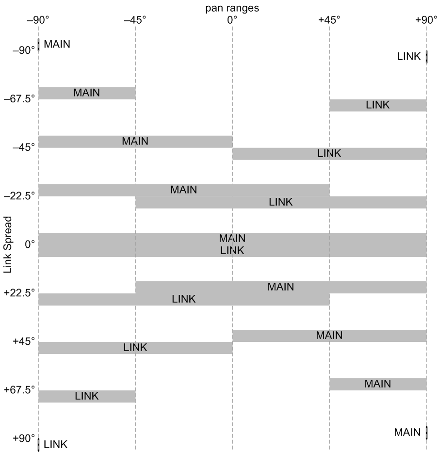 |
Toolkit
This is contained in the Link cluster within the Common section.
Chroma panel
This is contained in the CONTROL section of the right panel, under the following parameter number:
|
|
This appears in the display as Link Spread.
MIDI
This is accessed via NRPN 0,4. Since it is a bipolar parameter, the values are offset by 64.
Values
| MIDI | display | ||
| 0 | –90° | ||
| • • • |
• • • |
||
| 64 | 0° | (default) | |
| • • • |
• • • |
||
| 127 | +90° |
COMMON edit mode
This controls whether the parameter control is connected to an A parameter, a B parameter, or both in parallel. It has no effect if the parameter currently selected on the Chroma’s control panel isn’t one of the channelized parameters.
Toolkit
This is contained in the edit cluster within the Common section.
Chroma panel
This is set with the following switches:
| A | ||
| B | ||
| A&B |
The two switches must be pressed concurrently for A&B.
MIDI
This is accessed via NRPN 0,9.
Values
| MIDI | mode | ||
| 1 | Edit A | ||
| 2 | Edit B | ||
| 3 | Edit A&B | (default) |
COMMON edit number
This controls which numbered parameter the parameter control is connected to.
Toolkit
This is contained in the edit cluster within the Common section. To set this to a particular parameter, you must first manipulate that parameter elsewhere on the Editor screen (or in some other cluster popup), then tap the edit button to display this cluster popup, then click the parameter button. This also initializes the mode according to whether you manipulated an A parameter, a B parameter, or two ganged parameters.
You can also reset this to its default, “patch”, by long-pressing the parameter button, or the edit cluster button.
Chroma panel
This is set by placing the panel in parameter select mode, and then pressing a numbered switch to select a regular parameter that existed in the original Chroma, or SET SPLIT followed by a numbered switch to select an extended parameter added in the Digital Chroma.
This is automatically set to the link balance parameter whenever a new link is set up, or the link mode is changed by pressing a link switch or combination of switches twice in a row. This can be re-selected by pressing current link switch or combination twice in a row.
MIDI
This is accessed via NRPN 0,10. Since it is a bipolar parameter, the values are offset by 64.
Values
| MIDI | value | ||
| 14 | X50: amplifier post mod depth | ||
| • • • |
• • • |
||
| 63 | X1: link spread | ||
| 64 | link balance | ||
| 65 | P1: patch | (default) | |
| • • • |
• • • |
||
| 114 | P50: amplifier post mod select |
COMMON keyboard algorithm
This determines how key presses and releases are pre-processed, after the keyboard splitting but before the main or link instruments and MIDI output.
There are three polyphonic modes:
| polyphonic | For normal polyphonic playing. Glide is normally disabled, but if the footswitch mode parameter assigns the left footswitch to the “glide” function, it can be conditionally enabled, although it effectively switches to mono single mode (see below) while it is enabled. This is the default. | |
| poly ordered | Whenever a new chord is played, the notes are assigned to voices in pitch order, from top to bottom, so that the voices will remain in the same pitch order when gliding from one chord to another. This involves delaying by an amount specified by the global rollover time parameter, to make sure the entire chord has been captured. | |
| poly buffered | Notes are not directly played, but are added to a buffer, and then played in pitch order, from top to bottom, when the left footswitch is pressed (irrespective of the footswitch mode parameter). The buffer is cleared whenever the number of held keys goes from zero to one. |
There are five monophonic modes:
| single | Only one note is played at a time, and new notes reuse the same voice(s). New notes only retrigger the envelopes if no note was already held. | |
| multiple | Only one note is played at a time, and new notes reuse the same voice(s). New notes always only retrigger the envelopes. | |
| first | Only one note is played at a time, and only if no notes were previously held. | |
| bottom | Only one note is played at a time, and only the bottom note if a chord is played. When playing an ascending scale, new notes are only played if there is a gap between them, or at least less overlap than the time specified by the global rollover time parameter. | |
| top | Only one note is played at a time, and only the top note if a chord is played. When playing a descending scale, new notes are only played if there is a gap between them, or at least less overlap than the time specified by the global rollover time parameter. |
There are four arpeggiation modes, which involve repeated playing of buffered notes. The buffer is cleared whenever the number of held keys goes from zero to one. The arpeggiation continues as long as at least one key is held, or the sustain footswitch is held. Once all keys are released, releasing and pressing sustain can stop and restart the arpeggio. The patterns are:
| up | Ascending pitch order. | |
| down | Descending pitch order. | |
| up/down | Bidirectional, starting on the bottom note. | |
| down/up | Bidirectional, starting on the top note. |
There are two sequence modes, which are similar to the arpeggiation modes except that they keep notes in the order they were played, rather than pitch order. This means that the same note can be added to the buffer more than once. The patterns are:
| sequence | In order of playing. | |
| random | In random order. Notes that have multiple copies in the buffer are played more often. |
There are two strum modes. In this mode, the lowest or highest two notes of the keyboard are filtered out even before the keyboard split takes place, and used as triggers. They cause any other notes held on the keyboard to be replayed. Held notes are also added to a buffer, which isn’t cleared until the next time the number of held notes goes from zero to one, and the trigger plays all released notes that are still in the buffer but with a very short duration, simulating strumming on damped strings. (The apparent duration of the short notes can be adjusted via its envelope release parameters.)
| strum low | The lowest two keys are used as the triggers. | |
| strum high | The highest two keys are used as the triggers. |
If using the strum modes with an external keyboard, you should play the lowest and highest note of the keyboard once before the performance, so that the Digital Chroma will know the range of the keyboard. This isn’t necessary on the internal keyboard.
Toolkit
These are presented in the controllers cluster within the Common section.
Chroma panel
This is contained in the CONTROL section of the right panel, under the following parameter number:
| 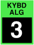 |
This appears in the display as Kybd Alg.
MIDI
This is accessed via NRPN 0,15.
Values
| MIDI | display | ||
| 0 | polyphonic | (default) | |
| 1 | poly ordered | ||
| 2 | poly buffered | ||
| 3 | mono single | ||
| 4 | mono multiple | ||
| 5 | mono first | ||
| 6 | mono bottom | ||
| 7 | mono top | ||
| 8 | arpeg up | ||
| 9 | arpeg down | ||
| 10 | arpeg up/down | ||
| 11 | arpeg down/up | ||
| 12 | arpeg sequence | ||
| 13 | arpeg random | ||
| 14 | strum low | ||
| 15 | strum high |
COMMON footswitch mode
This sets the operational modes of the two footswitches. The right (sustain) footswitch can be either enabled or displayed, and the left footswitch can be placed in the following modes:
| none | Disabled. | |
| latch | Similar to the function of a piano’s middle pedal (sostenuto). Pressing the footswitch latches all currently sounding notes, whether they are held via their keys or via the sustain footswitch. Selective controls are also frozen. While they are latched, other notes, or even the same notes, can be independently played over the latched notes. When the footswitch is released, the notes are released, even if their keys are still held, although they can continue to be sustained by the sustain footswitch. | |
| gate | Keys only trigger notes if the footswitch is held. | |
| –gate | Keys only trigger notes if the footswitch is released. | |
| glide | Keyboard algorithms that normally support glide disable the glide if the footswitch is released. Keyboard algorithms that normally don’t support glide switch to a mono mode and enable glide when the footswitch is pressed. | |
| –glide | Keyboard algorithms that normally support glide disable the glide if the footswitch is pressed. Keyboard algorithms that normally don’t support glide switch to a mono mode and enable glide when the footswitch is released. |
Some of these modes are primarily useful when combined with a link sound that uses a different mode.
Toolkit
These are presented as two separate parameters in the controllers cluster within the Common section.
Chroma panel
This is contained in the CONTROL section of the right panel, under the following parameter number:
This appears in the display as Fsw Mode.
MIDI
This is accessed via NRPN 0,13.
Values
| MIDI | left mode | right mode | ||
| 0 | latch | enabled | (default) | |
| 1 | latch | disabled | ||
| 2 | disabled | enabled | ||
| 3 | disabled | disabled | ||
| 4 | gate | enabled | ||
| 5 | gate | disabled | ||
| 6 | –gate | enabled | ||
| 7 | –gate | disabled | ||
| 8 | glide | enabled | ||
| 9 | glide | disabled | ||
| 10 | –glide | enabled | ||
| 11 | –glide | disabled |
COMMON ribbon algorithm
This sets how the value generated by the optional ribbon controller is affected by touching, sliding, and releasing.
| short release | When the ribbon is touched, that position is defined as zero, and all values are relative to that position. The ±1 unit range equals 1/16 of the physical length of the ribbon, so small gestures are all that is needed. When the ribbon is released, the value resets to zero. | |
| short hold | Same as short release, but the value remains where it is when the ribbon is released. | |
| short smooth | Same as short hold, but the initial touch point is defined as the current value, so only sliding changes the value. | |
| medium … | Same as the short versions, but the ±1 unit range equals one quarter of the physical length of the ribbon. | |
| long … | Same as the short and medium versions, but the ±1 unit range equals the full physical length of the ribbon, so large gestures are usable, and fine resolution is achievable. | |
| fixed release | The ±1 unit range maps directly to the position along the full ribbon, so touching the ribbon immediately jumps to that value. When the ribbon is released, the value resets to zero. | |
| fixed hold | Same as fixed release, but the value remains where it is when the ribbon is released. |
Toolkit
This is contained in the controllers cluster within the Common section.
Chroma panel
This is contained in the CONTROL section of the right panel, under the following parameter number:
This appears in the display as Ribbon Algorithm.
MIDI
This is accessed via NRPN 0,14.
Values
| MIDI | display | ||
| 0 | short release | (default) | |
| 1 | short hold | ||
| 2 | short smooth | ||
| 3 | medium release | ||
| 4 | medium hold | ||
| 5 | medium smooth | ||
| 6 | long release | ||
| 7 | long hold | ||
| 8 | long smooth | ||
| 9 | fixed release | ||
| 10 | fixed hold |
COMMON sequence program
This controls what program will be selected when the Sequence Program footswitch is pressed. It can be either a 1- or 2-digit number to step to a program in the same bank as the current program, or a 3-digit number to step to a program in a specific bank. The difference is meaningful when the current program is stored in a different bank.
This can also be set to “previous”, which means that the footswitch will re-select whatever was selected before the current program. This can be useful if you have a program that you want to be able to step to, and then step back to wherever it came from. For instance, programs 1, 2, and 3 might be set to step to program 50, and program 50 set to revert to previous, in which case pressing the footswitch twice could step 1-50-1, 2-50-2, or 3-50-3. When it steps to “previous”, it restores any unsaved edits that may have been in effect in that earlier program.
Toolkit
This is contained in the sequence cluster within the Common section, but this only allows it to be viewed, and possibly reset to its default value of “previous” by long-pressing the program button. In general, it is set from the Programs screen by long-pressing the program you want to sequence to, to view the Program popup, and then pressing the “sequence program” button.
Note that if this is changed in an otherwise unmodified program, the modification is also automatically stored, so the program continues to appear “unmodified”. This reduces the number of steps needed to set up a chain of sequenced programs. If the program was already modified, it is up to you to store it, if you want all the changes stored.
Chroma panel
A 1- or 2-digit sequence program is set up by holding the Sequence Program footswitch and pressing a numbered switch on the right panel. A 3-digit sequence program is set up by holding PROGRAM SELECT and pressing the bank number, then holding the footswitch and pressing the program number. Neither operation actually switches to the new program; you have to press and release the footswitch to do that.
This can also be set to “previous” by holding the footswitch and pressing PROGRAM SELECT.
Note that if this is changed in an otherwise unmodified program, the modification is also automatically stored, so the program continues to appear “unmodified”. If the program was already modified, it is up to you to store it, if you want all the changes stored.
MIDI
This is accessed as two separate parameters. The bank is set via NRPN 0,11, and the program by NRPN 0,12.
Values
| MIDI | bank | program | ||
| 0 | current bank | previous | (default) | |
| 1 | 1 | 1 | ||
| • • • |
• • • |
• • • |
||
| 9 | 9 | 9 | ||
| • • • |
• • • |
|||
| 50 | 50 |
The bank is ignored if the program is set to “previous”.
CONTROL patch
These select one of nineteen different ways the audio processing modules can be interconnected. There are four basic topologies, plus four optional special effects, although one of the combinations is meaningless:
| independent | |
| independent + sync | |
| independent + ring mod |  |
| independent + multiply | |
| independent + filter fm | |
| parallel filters | |
| parallel filters + sync | |
| parallel filters + ring mod | |
| parallel filters + multiply | |
| parallel filters + filter fm | |
| series filters | |
| series filters + sync | |
| series filters + ring mod | |
| series filters + multiply | |
| series filters + filter fm | |
| vari-mix filters | |
| vari-mix filters + sync | |
| vari-mix filters + ring mod | |
| vari-mix filters + multiply |
Toolkit
This is contained in the patch cluster within the Control section.
Chroma panel
This is contained in the CONTROL section of the right panel, under the following parameter number:
This appears in the display as Patch.
MIDI
This is accessed via NRPN 0,24.
Values
| MIDI | display | ||
| 1 | independent | (default) | |
| 2 | independent + sync | ||
| 3 | independent + ring mod | ||
| 4 | independent + multiply | ||
| 5 | independent + filter fm | ||
| 6 | parallel filters | ||
| 7 | parallel filters + sync | ||
| 8 | parallel filters + ring mod | ||
| 9 | parallel filters + multiply | ||
| 10 | parallel filters + filter fm | ||
| 11 | series filters | ||
| 12 | series filters + sync | ||
| 13 | series filters + ring mod | ||
| 14 | series filters + multiply | ||
| 15 | series filters + filter fm | ||
| 16 | vari-mix filters | ||
| 17 | vari-mix filters + sync | ||
| 18 | vari-mix filters + ring mod | ||
| 19 | vari-mix filters + multiply | ||
CONTROL detune
This controls the amount by which oscillator B is detuned relative to A. Oscillator A is unchanged.
Toolkit
This is contained in the detune cluster within the Control section.
Chroma panel
This is contained in the CONTROL section of the right panel, under the following parameter number:
This appears in the display as Detune.
MIDI
This is accessed via NRPN 0,26. Since it is a bipolar parameter, the values are offset by 64.
Values
The values are displayed in cents for the “full” detune scale setting, cents at middle C for the “half” setting, and in Hertz for the “fixed”; setting:
| MIDI | cents | Hertz | ||
| 14 | –50¢ | –7.5Hz | ||
| • • • |
• • • |
• • • |
||
| 64 | 0¢ | 0Hz | ||
| 65 | +1¢ | +0.2Hz | (default) | |
| • • • |
• • • |
• • • |
||
| 114 | +50¢ | +7.7Hz |
CONTROL detune scale
This selects one of three scalings for the oscillator's detune parameter.
| full | The detuning is a constant number of cents at all pitches. This is particularly useful for nulling a beat frequency when one of the “ring mod” or “multiple” patches is used. For most purposes, though, the result is too fast a beating at the top of the keyboard, too slow at the bottom. | |
| half | (default) The detuning is a compromise between “full” and “fixed”. The beat frequency doubles with every two octaves pitch rise, for a more pleasing range across the keyboard. | |
| fixed | The detuning is a fixed number of Hertz at all pitches. For most purposes, the result is too slow a beating at the top of the keyboard, too fast at the bottom. |
Toolkit
This is contained in the detune cluster within the Control section.
Chroma panel
This is contained in the CONTROL section of the right panel, under the following parameter number:
|
|
This appears in the display as Detune Scale.
MIDI
This is accessed via NRPN 0,27.
Values
| MIDI | display | ||
| 0 | full | ||
| 1 | half | (default) | |
| 2 | fixed |
CONTROL voice count
This specifies the number of voices to be played for each note. If this is set to 1, the tune spread and pan spread parameters have no effect.
Toolkit
This is contained in the voice stack cluster within the Control section.
Chroma panel
This is contained in the CONTROL section of the right panel, under the following parameter number:
|
|
This appears in the display as Voice Count.
MIDI
This is accessed via NRPN 0,25.
Values
| MIDI | display | ||
| 1 | 1 | (default) | |
| 2 | 2 | ||
| 3 | 3 | ||
| 4 | 4 |
CONTROL tune shift
This controls the amount of either randomization or stretch of the oscillator tunings.
Toolkit
This is contained in the detune cluster within the Control section.
Chroma panel
This is contained in the OSCILLATOR section of the right panel, under the following parameter number:
|
|
This appears in the display as Tune Shift.
MIDI
This is accessed via NRPN 0,28. Since it is a bipolar parameter, the values are offset by 64.
Values
On the positive side, the display is in cents sharp at the top of the keyboard and flat at the bottom. On the negative side, the display is the maximum amount of random detuning at middle C; this is a half-scale detuning for a pleasing increase in the beat frequencies across the keyboard.
| MIDI | display | ||
| 14 | random 50¢ | ||
| • • • |
• • • |
||
| 63 | random 1¢ | ||
| 64 | off | ||
| 65 | stretch 1¢ | (default) | |
| • • • |
• • • |
||
| 114 | stretch 50¢ |
CONTROL tune spread
This controls how much stacked voices are detuned among each other. The detuning is a half-scale detuning where the beat frequency doubles for every two-octave pitch rise. This has no effect unless the voice count parameter is greater than 1.
The value is the maximum number of cents deviation at middle C. For instance, if set to 6, the detunings for each voice count setting would be:
| 1: | 0¢ | |||||||
| 2: | –3¢ | — | — | — | — | — | +3¢ | |
| 3: | –3¢ | — | — | 0¢ | — | — | +3¢ | |
| 4: | –3¢ | — | –1¢ | — | +1¢ | — | +3¢ |
The top two settings connect one of the pedals to the spread.
Toolkit
This is contained in the voice stack cluster within the Control section. Buttons beneath the slider select the pedal settings.
Chroma panel
This is contained in the PITCH section of the right panel, under the following parameter number:
|
|
This appears in the display as Tune Spread.
MIDI
This is accessed via NRPN 0,17.
Values
| MIDI | display | ||
| 0 | off | ||
| 1 | 1¢ | (default) | |
| • • • |
• • • |
||
| 50 | 50¢ | ||
| 51 | pedal 1 | ||
| 52 | pedal 2 |
CONTROL pan spread
This controls how much stacked voices are spread out in the stereo field. This has no effect unless the voice count parameter is greater than 1.
This is expressed in degrees, representing the amount by which centered (mono) sounds are spread out by this parameter. When this is zero, all voices have the full pan range; when set to 90°, the outer voices are panned half way to the sides, and their instruments each have half the panning range; when set to 180°, the outer voices are forced all the way left and right, and the instrument pan controls do nothing.
 |
Toolkit
This is contained in the voice stack cluster within the Control section.
Chroma panel
This is contained in the VOLUME section of the right panel, under the following parameter number:
|
|
This appears in the display as Pan Spread.
MIDI
This is accessed via NRPN 0,30.
Values
| MIDI | display | ||
| 0 | off | ||
| • • • |
• • • |
||
| 64 | 90° | (default) | |
| • • • |
• • • |
||
| 127 | 180° |
CONTROL lever modes
This determines the selectivity mode of the two levers. In “selective” mode, when a key is released, the lever value freezes for that note, even if the note is held by the sustain footswitch. It also freezes for notes latched by the left footswitch. In “sampled” mode, it is sampled once at the start of the note.
Toolkit
This is contained in the selectivity cluster within the Control section. It is presented as two separate parameters, one for each lever.
Chroma panel
This is contained in the SWEEP section of the right panel, under the following parameter number:
|
|
This appears in the display as Lever Modes.
MIDI
This is accessed via NRPN 0,31.
Values
| MIDI | display | ||
| 0 | normal / normal | ||
| 1 | selective / normal | ||
| 2 | sampled / normal | ||
| 3 | normal / selective | ||
| 4 | selective / selective | (default) | |
| 5 | sampled / selective | ||
| 6 | normal / sampled | ||
| 7 | selective / sampled | ||
| 8 | sampled / sampled |
CONTROL pedal modes
This determines the selectivity mode of the two pedals. In “selective” mode, when a key is released, the pedal value freezes for that note, even if the note is held by the sustain footswitch. It also freezes for notes latched by the left footswitch. In “sampled” mode, it is sampled once at the start of the note.
Toolkit
This is contained in the selectivity cluster within the Control section. It is presented as two separate parameters, one for each pedal.
Chroma panel
This is contained in the SWEEP section of the right panel, under the following parameter number:
|
|
This appears in the display as Pedal Modes.
MIDI
This is accessed via NRPN 0,32.
Values
| MIDI | display | ||
| 0 | normal / normal | (default) | |
| 1 | selective / normal | ||
| 2 | sampled / normal | ||
| 3 | normal / selective | ||
| 4 | selective / selective | ||
| 5 | sampled / selective | ||
| 6 | normal / sampled | ||
| 7 | selective / sampled | ||
| 8 | sampled / sampled |
CONTROL ribbon mode
This determines the selectivity mode of the optional ribbon controller. In “selective” mode, when a key is released, the ribbon value freezes for that note, even if the note is held by the sustain footswitch. It also freezes for notes latched by the left footswitch. In “sampled” mode, it is sampled once at the start of the note.
Toolkit
This is contained in the selectivity cluster within the Control section.
Chroma panel
This is contained in the CONTROL section of the right panel, under the following parameter number:
|
|
This appears in the display as Ribbon Mode.
MIDI
This is accessed via NRPN 0,33.
Values
| MIDI | display | ||
| 0 | normal | (default) | |
| 1 | selective | ||
| 2 | sampled |
CONTROL treble gain
This controls the gain of the treble section of the virtual instrument's parametric equalizer.
Toolkit
This is contained in the tone cluster within the Control section.
Chroma panel
This is manipulated by the TREBLE slider on the left panel. When any of the five short sliders is moved, the display shows their values for a couple seconds. Press PARAM SELECT if you want to see these settings without moving the sliders.
MIDI
This is accessed via NRPN 0,21. Since it is a bipolar parameter, the values are offset by 64.
Values
| MIDI | display | ||
| 44 | –20db | ||
| • • • |
• • • |
||
| 64 | 0db | (default) | |
| • • • |
• • • |
||
| 84 | +20db |
CONTROL treble frequency
This controls the frequency of the treble section of the virtual instrument's parametric equalizer.
Toolkit
This is contained in the tone cluster within the Control section.
Chroma panel
This is manipulated by pressing SET SPLIT, and then using the TREBLE slider on the left panel. When SET SPLIT is first pressed, and when any of the five short sliders is moved, the display shows the secondary parameters connected to the five sliders for a couple seconds. Press SET SPLIT, or PARAM SELECT, or PROG SELECT, to exit this mode.
MIDI
This is accessed via NRPN 0,22. Since it is a bipolar parameter with a ±5 internal range, the values are offset by 64.
Values
| MIDI | display | ||
| 59 | 1KHz | ||
| • • • |
• • • |
||
| 64 | 2.8KHz | (default) | |
| • • • |
• • • |
||
| 69 | 7.9KHz |
CONTROL middle gain
This controls the gain of the middle section of the virtual instrument's parametric equalizer.
Toolkit
This is contained in the tone cluster within the Control section.
Chroma panel
This is manipulated by the MIDDLE slider on the left panel. When any of the five short sliders is moved, the display shows their values for a couple seconds. Press PARAM SELECT if you want to see these settings without moving the sliders.
MIDI
This is accessed via NRPN 0,18. Since it is a bipolar parameter, the values are offset by 64.
Values
| MIDI | display | ||
| 44 | –20db | ||
| • • • |
• • • |
||
| 64 | 0db | (default) | |
| • • • |
• • • |
||
| 84 | +20db |
CONTROL middle frequency
This controls the frequency of the middle section of the virtual instrument's parametric equalizer.
Toolkit
This is contained in the tone cluster within the Control section.
Chroma panel
This is manipulated by pressing SET SPLIT, and then using the MIDDLE slider on the left panel. When SET SPLIT is first pressed, and when any of the five short sliders is moved, the display shows the secondary parameters connected to the five sliders for a couple seconds. Press SET SPLIT, or PARAM SELECT, or PROG SELECT, to exit this mode.
MIDI
This is accessed via NRPN 0,19. Since it is a bipolar parameter with a ±5 internal range, the values are offset by 64.
Values
| MIDI | display | ||
| 59 | 170Hz | ||
| • • • |
• • • |
||
| 64 | 480Hz | (default) | |
| • • • |
• • • |
||
| 69 | 1350Hz |
CONTROL middle resonance
This controls the resonance of the middle section of the virtual instrument's parametric equalizer.
Toolkit
This is contained in the tone cluster within the Control section.
Chroma panel
This is manipulated by pressing SET SPLIT, and then using the TUNE slider on the left panel. When SET SPLIT is first pressed, and when any of the five short sliders is moved, the display shows the secondary parameters connected to the five sliders for a couple seconds. Press SET SPLIT, or PARAM SELECT, or PROG SELECT, to exit this mode.
MIDI
This is accessed via NRPN 0,20.
Values
| MIDI | display | ||
| 0 | 0.5 | (default) | |
| • • • |
• • • |
||
| 5 | 2 |
CONTROL bass gain
This controls the gain of the bass section of the virtual instrument's parametric equalizer.
Toolkit
This is contained in the tone cluster within the Control section.
Chroma panel
This is manipulated by the BASS slider on the left panel. When any of the five short sliders is moved, the display shows their values for a couple seconds. Press PARAM SELECT if you want to see these settings without moving the sliders.
MIDI
This is accessed via NRPN 0,16. Since it is a bipolar parameter, the values are offset by 64.
Values
| MIDI | display | ||
| 49 | –15db | ||
| • • • |
• • • |
||
| 64 | 0db | (default) | |
| • • • |
• • • |
||
| 79 | +15db |
CONTROL bass frequency
This controls the frequency of the bass section of the virtual instrument's parametric equalizer.
Toolkit
This is contained in the tone cluster within the Control section.
Chroma panel
This is manipulated by pressing SET SPLIT, and then using the BASS slider on the left panel. When SET SPLIT is first pressed, and when any of the five short sliders is moved, the display shows the secondary parameters connected to the five sliders for a couple seconds. Press SET SPLIT, or PARAM SELECT, or PROG SELECT, to exit this mode.
MIDI
This is accessed via NRPN 0,17. Since it is a bipolar parameter with a ±5 internal range, the values are offset by 64.
Values
| MIDI | display | ||
| 59 | 16Hz | ||
| • • • |
• • • |
||
| 64 | 45Hz | (default) | |
| • • • |
• • • |
||
| 69 | 125Hz |
CONTROL distortion
This controls the amount of distortion applied to the combined voices belonging to the virtual instrument. Positive settings provide symmetric distortion which produces primarily odd harmonics, while negative settings provide asymmetric distortion which yields more even harmonics.
Toolkit
This is contained in the tone cluster within the Control section.
Chroma panel
This is contained in the FILTER section of the right panel, under the following parameter number:
|
|
This appears in the display as Distortion.
MIDI
This is accessed via NRPN 0,23. Since it is a bipolar parameter, the values are offset by 64.
Values
| MIDI | display | ||
| 0 | –100% | ||
| • • • |
• • • |
||
| 64 | off | (default) | |
| • • • |
• • • |
||
| 127 | +100% |
CONTROL reverb room
This controls the reverb room used by the sound. This is normally set to “performance”, allowing the room selection and send level to be controlled by performance controls, which come from the reverb room and reverb send global parameters. But if this is set to one of the actual room sizes, this parameter and the reverb send parameter override the reverb performance controls.
Toolkit
This is contained in the tone cluster within the Control section.
Chroma panel
This is contained in the WIDTH section of the right panel, under the following parameter number:
|
|
This appears in the display as Reverb Room.
MIDI
This is accessed via NRPN 0,34.
Values
| MIDI | display | ||
| 0 | performance | (default) | |
| 1 | small | ||
| 2 | medium | ||
| 3 | large | ||
| 4 | huge |
CONTROL reverb send
This controls the amount of sound sent into the reverb room, relative to the amount of direct sound. This is normally controlled by a performance control, which comes from the reverb send global parameter, but if the reverb room parameter is set to something other than “performance”, this pair of program parameters overrides the reverb performance controls.
Toolkit
This is contained in the tone cluster within the Control section.
Chroma panel
This is contained in the WIDTH section of the right panel, under the following parameter number:
|
|
This appears in the display as Reverb Send.
MIDI
This is accessed via NRPN 0,35.
Values
| MIDI | display | ||
| 0 | off | (default) | |
| 1 | –65db | ||
| • • • |
• • • |
• • • |
|
| 96 | +14.2db | ||
| • • • |
• • • |
• • • |
|
| 127 | +30.5db |
Up to 96, the dry sound is at full volume. Beyond that, it begins to be attenuated.
GLIDE shape
These select one of four shapes for the glide generators. Three of them produce “portamento”, which is a smooth sliding from note to note; one produces “glissando”, which is a chromatic scale from note to note.
| Constant time: This takes a certain amount of time, adjustable from 10ms to 15s, to get from one note to the next. | ||
| Exponential: This slows down as it approaches the target pitch, and theoretically never quite gets there, so the time is actually a “time constant”, the time it would have taken to get to the pitch if it hadn’t slowed down. It is also adjustable from 10ms to 15s. | ||
| Constant slope: This changes with a certain number milliseconds per semitone, so it takes longer the further it has to go. It is adjustable from 40ms to 980ms per semitone. | ||
| Glissando: This is just like the constant slope shape, but is quantized to semitones. |
Glide normally only functions in monophonic keyboard algorithm and the poly ordered and poly buffered algorithms. However, it can also be enabled on the normal poly mode via the left footswitch mode. When the footswitch is pressed, voice assignment temporarily becomes monophonic, and glides from note to note.
Glide A always controls oscillator A, and glide B always controls oscillator B, so to use glide one normally gangs the glide clusters together. When used elsewhere as a modulation source, middle C is zero, and 32 semitones equals one unit, so the Digital Chroma’s internal keyboard goes from –1 to almost +1 unit.
Toolkit
These are contained in the Glide clusters within the Glide section.
Chroma panel
These are contained in the GLIDE section of the right panel, under the following parameter number:
These appear in the display as Glide Shape.
MIDI
These are accessed via the following NRPNs:
| A | 1,1 | |
| B | 2,1 |
Values
| MIDI | display | ||
| 0 | constant time | (default) | |
| 1 | exponential | ||
| 2 | constant slope | ||
| 3 | glissando |
GLIDE time
These control how long it takes for a voice’s pitch to change from one note to another, when glide is being used.
Glide normally only functions in monophonic keyboard algorithm and the poly ordered and poly buffered algorithms. However, it can also be enabled on the normal poly mode via the left footswitch mode. When the footswitch is pressed, voice assignment temporarily becomes monophonic, and glides from note to note.
Glide A always controls oscillator A, and glide B always controls oscillator B, so to use glide one normally gangs the glide clusters together.
Toolkit
These are contained in the Glide clusters within the Glide section.
Chroma panel
These are contained in the GLIDE section of the right panel, under the following parameter number:
These appear in the display as Glide Time.
The switch graphics call this a “rate”, but since larger values produce longer times, this is really a “time”, and this terminology is corrected in the Toolkit and the display.
MIDI
These are accessed via the following NRPNs:
| A | 1,0 | |
| B | 2,0 |
Values
The values are displayed as times, in milliseconds (ms) or seconds (s). The constant time and exponential shapes use the values in the second column, while the constant slope and glissando shapes use the values in the third column:
| MIDI | time | per semi | ||
| 0 | instant | instant | (default) | |
| 1 | 10ms | 40ms | ||
| • • • |
• • • |
• • • |
||
| 127 | 15s | 980ms |
GLIDE mod select
These select one of 16 modulation sources for the time of the glide generators. The “+” and “–” lever options use only one side of the lever.
Toolkit
These are contained in the Glide clusters within the Glide section.
Chroma panel
These are contained in the GLIDE section of the right panel, under the following parameter number:
|
|
These appear in the display as Glide Mod Select.
MIDI
These are accessed via the following NRPNs:
| A | 1,2 | |
| B | 2,2 |
Values
| MIDI | display | ||
| 0 | +lever 1 | ||
| 1 | +lever 2 | ||
| 2 | lever 1 | ||
| 3 | lever 2 | ||
| 4 | –lever 1 | ||
| 5 | –lever 2 | ||
| 6 | pedal 1 | ||
| 7 | pedal 2 | (default) | |
| 8 | ±pedal 1 | (bipolar pedal only) | |
| 9 | ±pedal 2 | (bipolar pedal only) | |
| 10 | –pedal 1 | (bipolar pedal only) | |
| 11 | –pedal 2 | (bipolar pedal only) | |
| 12 | ribbon | ||
| 13 | pitch | ||
| 14 | velocity | ||
| 15 | pressure |
GLIDE mod depth
These control the amount that the time of each glide generator is modulated. The displayed values are the percentage of the total glide time parameter range covered by one unit of modulation.
Toolkit
These are contained in the Glide clusters within the Glide section.
Chroma panel
These are contained in the GLIDE section of the right panel, under the following parameter number:
|
|
These appear in the display as Glide Mod Depth.
MIDI
These are accessed via the following NRPNs:
| A | 1,3 | |
| B | 2,3 |
Since these are bipolar parameters, the values are offset by 64.
Values
| MIDI | display | ||
| 0 | –100% | ||
| • • • |
• • • |
||
| 64 | off | (default) | |
| • • • |
• • • |
||
| 127 | +100% |
SWEEP mode
These select one of five synchronization modes for the sweep generators:
| poly | Each voice has its own sweep generator. The initial phase when a voice is allocated is random, and it runs continuously even if the voice is retriggered. | |
| poly synced | Each voice has its own sweep generator. The phase starts at 0° at the start of each note. | |
| mono | All voices share the same sweep phase computed by the virtual instrument, but each has its own amplitude control. This phase runs continuously, independent of the playing of notes. | |
| mono multiple | Like the mono mode, except that the phase is reset to 0° whenever a key is pressed. | |
| mono single | Like the mono mode, except that the phase is reset to 0° whenever the number of keys held goes from zero to one. |
Toolkit
These are contained in the Sweep rate clusters within the Sweep section.
Chroma panel
These are contained in the SWEEP section of the right panel, under the following parameter number:
These appear in the display as Sweep Mode.
MIDI
These are accessed via the following NRPNs:
| A | 1,4 | |
| B | 2,4 |
Values
| MIDI | display | ||
| 0 | poly | (default) | |
| 1 | poly synced | ||
| 2 | mono | ||
| 3 | mono multiple | ||
| 4 | mono single |
SWEEP rate
These control the basic rate of each sweep generator, before modulation. The range is from one cycle every ten seconds, up to 30 cycles per second. There are also eight settings at the top of the range that synchronize the sweep to MIDI clocks received on any MIDI port, with different ratios.
Note: MIDI syncing disables rate modulation.
Toolkit
These are contained in the Sweep rate clusters within the Sweep section.
Chroma panel
These are contained in the SWEEP section of the right panel, under the following parameter number:
These appear in the display as Sweep Rate.
MIDI
These are accessed via the following NRPNs:
| A | 1,5 | |
| B | 2,5 |
Values
The slow values are shown as periods in seconds (s), while the faster values are shown in cycles per second (Hz).
| MIDI | display | ||
| 0 | 10s | (default) | |
| • • • |
• • • |
||
| 48 | 1s | ||
| 49 | 1.05Hz | ||
| • • • |
• • • |
||
| 119 | 30Hz | ||
| 120 | half note | ||
| 121 | half triplet | ||
| 122 | quarter note | ||
| 123 | quarter triplet | ||
| 124 | eighth note | ||
| 125 | eighth triplet | ||
| 126 | sixteenth note | ||
| 127 | sixteenth triplet | ||
SWEEP rate mod select
These select one of 21 modulation sources for the rate of the sweep generators. The “+” and “–” lever options use only one side of the lever. The “random” choice statically varies the rate from voice to voice.
Note: MIDI syncing disables rate modulation.
Toolkit
These are contained in the Sweep rate clusters within the Sweep section.
Chroma panel
These are contained in the SWEEP section of the right panel, under the following parameter number:
These appear in the display as Swp Rate Mod Select.
MIDI
These are accessed via the following NRPNs:
| A | 1,6 | |
| B | 2,6 |
Values
| MIDI | display | ||
| 0 | +lever 1 | ||
| 1 | +lever 2 | ||
| 2 | lever 1 | ||
| 3 | lever 2 | ||
| 4 | –lever 1 | ||
| 5 | –lever 2 | ||
| 6 | pedal 1 | ||
| 7 | pedal 2 | ||
| 8 | ±pedal 1 | (bipolar pedal only) | |
| 9 | ±pedal 2 | (bipolar pedal only) | |
| 10 | –pedal 1 | (bipolar pedal only) | |
| 11 | –pedal 2 | (bipolar pedal only) | |
| 12 | ribbon | ||
| 13 | pitch | ||
| 14 | velocity | ||
| 15 | pressure | ||
| 16 | envelope 1A | ||
| 17 | envelope 2A | ||
| 18 | envelope 1B | ||
| 19 | envelope 2B | ||
| 20 | random | (default) |
SWEEP rate mod depth
These control the amount that the rate of each sweep generator is modulated. The displayed values are the percentage of the total sweep rate parameter range covered by one unit of modulation.
Note: MIDI syncing disables rate modulation.
Toolkit
These are contained in the Sweep rate clusters within the Sweep section.
Chroma panel
These are contained in the SWEEP section of the right panel, under the following parameter number:
|
|
These appear in the display as Swp Rate Mod Depth.
MIDI
These are accessed via the following NRPNs:
| A | 1,7 | |
| B | 2,7 |
Since these are bipolar parameters, the values are offset by 64.
Values
| MIDI | display | ||
| 0 | –100% | ||
| • • • |
• • • |
||
| 64 | off | (default) | |
| • • • |
• • • |
||
| 127 | +100% |
SWEEP shape
These select one of sixteen shapes for the sweep generators, including a number of repetetive patterns.
| sine |  |
rising square |  |
|
| cosine |  |
falling square | ||
| offset sine |  |
3 down |  |
|
| half sine |  |
4 down/up | ||
| triangle |  |
4 down |  |
|
| cotriangle |  |
6 down/up | ||
| sawtooth |  |
6 down |  |
|
| random | 8 down/up |
Toolkit
These are contained in the Sweep amplitude clusters within the Sweep section. One of the above diagrams is shown in the cluster popup.
Chroma panel
These are contained in the SWEEP section of the right panel, under the following parameter number:
These appear in the display as Sweep Shape.
MIDI
These are accessed via the following NRPNs:
| A | 1,8 | |
| B | 2,8 |
Values
| MIDI | display | ||
| 0 | sine | (default) | |
| 1 | cosine | ||
| 2 | offset sine | ||
| 3 | half sine | ||
| 4 | triangle | ||
| 5 | cotriangle | ||
| 6 | sawtooth | ||
| 7 | random | ||
| 8 | rising square | ||
| 9 | falling square | ||
| 10 | 3 down | ||
| 11 | 4 down/up | ||
| 12 | 4 down | ||
| 13 | 6 down/up | ||
| 14 | 6 down | ||
| 15 | 8 down/up |
SWEEP amplitude mod select
These select one of 26 modulation sources for the amplitude of the sweep generators. The “+” and “–” lever options use only one side of the lever.
The “delay” choices use a dedicated delay envelope generator, so that one doesn’t have to waste a full-featured envelope on this simple function. The delay envelope goes from –1 unit when the key is pressed to +1 unit after the delay time, and then stays there until the next key press. However, the negative side is chopped off, so there is no sweep for the first half of the delay time.
The “pitch” choice is primarily useful with a low mod depth, so that the amplitude doesn’t start at –1 and go through zero, but instead starts at some low positive value and rises to 1, for a more subtle variation across the keyboard. A negative mod depth causes it to vary in the opposite direction.
Toolkit
These are contained in the Sweep amplitude clusters within the Sweep section.
Chroma panel
These are contained in the SWEEP section of the right panel, under the following parameter number:
These appear in the display as Swp Ampl Mod Select.
MIDI
These are accessed via the following NRPNs:
| A | 1,9 | |
| B | 2,9 |
Values
| MIDI | display | ||
| 0 | +lever 1 | (default) | |
| 1 | +lever 2 | ||
| 2 | lever 1 | ||
| 3 | lever 2 | ||
| 4 | –lever 1 | ||
| 5 | –lever 2 | ||
| 6 | pedal 1 | ||
| 7 | pedal 2 | ||
| 8 | ±pedal 1 | (bipolar pedal only) | |
| 9 | ±pedal 2 | (bipolar pedal only) | |
| 10 | –pedal 1 | (bipolar pedal only) | |
| 11 | –pedal 2 | (bipolar pedal only) | |
| 12 | ribbon | ||
| 13 | pitch | ||
| 14 | velocity | ||
| 15 | pressure | ||
| 16 | envelope 1A | ||
| 17 | envelope 2A | ||
| 18 | envelope 1B | ||
| 19 | envelope 2B | ||
| 20 | 850ms delay | ||
| 21 | 1.3s delay | ||
| 22 | 2.6s delay | ||
| 23 | 3.8s delay | ||
| 24 | 5.1s delay | ||
| 25 | 6.4s delay |
SWEEP amplitude mod depth
These control the amount that the amplitude of each sweep generator is modulated.
The sweep amplitude is normally 100%, and its effective amplitude is controlled by the modulation depth where the sweep is used, e.g., the oscillator mod input. This modulation parameter simply controls how much the selected parameter dynamically affects the amplitude. When this is set to “off” the sweep is at a fixed nominal value. When this is raised to 100%, the mod source can vary it from zero to 100%, or –100% to 100% for bipolar controls.
If the mod select is one of the delay choices, the delay envelope goes from –1 to +1 unit over the delay period, but the negative portion is chopped off so there is no sweep signal for the first half of the delay. If this depth parameter is reduced to 50%, the delay envelope effectively goes from zero to +1 unit, so the sweep starts immediately but rises more slowly.
Unipolar modulation
Most mod sources have a 0 to 1 unit range. The following graphs show the response at various positive and negative depths:
| 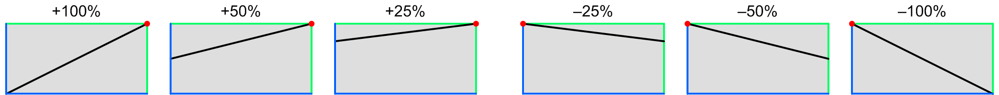 |
The blue lines represent 0 units of input and output, and the green lines represent 1 unit of input and output. The red dots show where the curve pivots around, which is different for positive and negative depths. (These dots aren’t shown in the graph in the cluster popup.)
Bipolar modulation
Some mod sources, like the levers, have a –1 to +1 unit range. The following graphs show the response at various positive and negative depths:
| 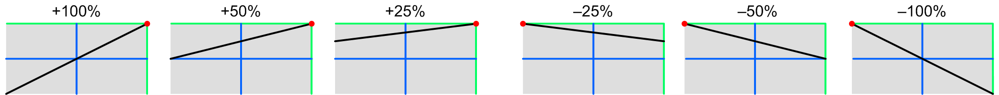 |
Pitch modulation
The pitch varies from –1 to almost +1 unit across the keyboard, but can go further with octave transposition, and further still via MIDI. The darker regions represent the notes outside the normal keyboard range. As you can see, the most useful settings are lower values, allowing you to introduce a modest variation in sweep amplitude across the keyboard:

|
Envelope modulation
Any of the envelope generators can control the sweep amplitude, if you need something fancier than the sweeps’ own delay envelopes. The following graphs show the resulting waveshape (with time on the X-axis), for a typical envelope; obviously the actual shape depends on how you program the envelope. It is shown for a non-touch-sensitive envelope, with a 0 to 1 unit range, but can be used with touch-sensitive ones as well, producing up to twice the sweep amplitude. Such envelopes aren’t very appropriate with large negative depths, though:
| 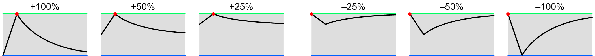 |
Delay modulation
When the sweep’s own internal delay generator is used, you get the following responses (with time on the X-axis). Note that lowering the positive depth makes it start earlier. Higher negative depths aren’t particularly useful:
| 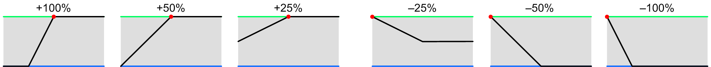 |
Toolkit
These are contained in the Sweep amplitude clusters within the Sweep section.
Chroma panel
These are contained in the SWEEP section of the right panel, under the following parameter number:
|
|
These appear in the display as Swp Ampl Mod Depth.
MIDI
These are accessed via the following NRPNs:
| A | 1,10 | |
| B | 2,10 |
Since these are bipolar parameters, the values are offset by 64.
Values
| MIDI | display | ||
| 0 | –100% | ||
| • • • |
• • • |
||
| 64 | off | (default) | |
| • • • |
• • • |
||
| 127 | +100% | (significant) |
ENVELOPE trigger
These control the delay time of each Envelope 2 generator, up to over two seconds. The highest twelve settings instead allow it to be triggered by something other than the key press:
| release | The envelope is triggered when the key is released. | |
| release sustain | The envelope is triggered when the key and sustain footswitch are released, whichever happens last. | |
| mono multiple | All voices share a common envelope computed by the virtual instrument, and that envelope is retriggered on any key press. | |
| mono single | All voices share a common envelope computed by the virtual instrument, and that envelope is triggered when the number of held keys goes from zero to one. This can be useful for simulating the percussion envelope of a Hammond organ. | |
| envelope 1A envelope 1B |
These trigger the envelope when either Envelope 1 starts its decay phase. Obviously, that is only useful if the Envelope 1 attack time is set to something other than “instant”. | |
| sweep A sweep B |
These trigger the envelope at the start of each sweep cycle, and release it (unless the sustain footswitch is held) in the middle of the cycle. | |
| –sweep A –sweep B |
These trigger the envelope in the middle of each sweep cycle, and release it (unless the sustain footswitch is held) at the start of the cycle. | |
| ±sweep A ±sweep B |
These trigger the envelope at the start of each sweep cycle, and again in the middle. |
Toolkit
These are contained in the Envelope trigger clusters within the Envelope 2 section.
Chroma panel
These are contained in the ENVELOPE 2 section of the right panel, under the following parameter number:
These appear in the display as Env2 Trigger.
MIDI
These are accessed via the following NRPNs:
| A | 1,23 | |
| B | 2,23 |
Values
| MIDI | display | ||
| 0 | off | (default) | |
| 1 | 20ms | ||
| • • • |
• • • |
||
| 115 | 2.3s | ||
| 116 | release | ||
| 117 | release sustain | ||
| 118 | mono multiple | ||
| 119 | mono single | ||
| 120 | envelope 1A | ||
| 121 | envelope 1B | ||
| 122 | sweep A | ||
| 123 | sweep B | ||
| 124 | –sweep A | ||
| 125 | –sweep B | ||
| 126 | ±sweep A | ||
| 127 | ±sweep B | ||
ENVELOPE peak mod select
These select velocity, a lever, or a pedal, for the source of envelope peak modulation. For velocity, there are seven response shapes that translate the 0 to 1 unit of velocity into 0 to 2 units of envelope peak amplitude, with different levels for midscale velocity. Then there are five threshold responses that produce zero or one unit based on whether the velocity is above or below a particular threshold. Finally, either side of either lever or pedal can adjust the peak amplitude from zero to one unit.

The blue lines represent zero, and the green lines represent one unit. The lever and pedal curves are always linear, and their values are sampled once at the start of the attack.
Toolkit
These are contained in the Envelope peak clusters within the Envelope sections.
Chroma panel
These are contained in the ENVELOPE 1 and ENVELOPE 2 sections of the right panel, under the following parameter numbers:
| Env 1 | Env 2 | |
These appear in the display as Env1/2 Peak Mod Select.
MIDI
These are accessed via the following NRPNs:
| Env 1 | Env 2 | ||
| A | 1,11 | 1,24 | |
| B | 2,11 | 2,24 |
Values
| MIDI | display | ||
| 0 | 0 warp | ||
| 1 | 1/8 warp | ||
| 2 | 1/4 warp | ||
| 3 | 3/8 warp | ||
| 4 | linear | (default) | |
| 5 | 3/4 warp | ||
| 6 | 1 warp | ||
| 7 | 5/6 threshold | ||
| 8 | 2/3 threshold | ||
| 9 | 1/2 threshold | ||
| 10 | 1/3 threshold | ||
| 11 | 1/6 threshold | ||
| 12 | +lever 1 | ||
| 13 | +lever 2 | ||
| 14 | –lever 1 | ||
| 15 | –lever 2 | ||
| 16 | pedal 1 | ||
| 17 | pedal 2 | ||
| 18 | –pedal 1 | (bipolar pedal only) | |
| 19 | –pedal 2 | (bipolar pedal only) |
ENVELOPE peak mod depth
These control how much the peak amplitude of each envelope generator can be modulated. When turned off, the envelope is always one unit. At 100%, the peak amplitude varies from zero to two units for the first seven mod select settings, zero to one for the rest:

The blue lines represent zero, and the green lines represent one unit. The lever and pedal curves are always linear, and their values are sampled once at the start of the attack.
Toolkit
These are contained in the Envelope peak clusters within the two Envelope sections.
Chroma panel
These are contained in the ENVELOPE 1 and ENVELOPE 2 sections of the right panel, under the following parameter numbers:
| Env 1 | Env 2 | |
|
|
|
These appear in the display as Env1/2 Peak Mod Depth.
MIDI
These are accessed via the following NRPNs:
| Env 1 | Env 2 | ||
| A | 1,12 | 1,25 | |
| B | 2,12 | 2,25 |
Since these are bipolar parameters, the values are offset by 64.
Values
| MIDI | display | ||
| 0 | –100% | ||
| • • • |
• • • |
||
| 64 | off | (default) | |
| • • • |
• • • |
||
| 127 | +100% | (significant) |
ENVELOPE attack time
These control the basic attack time of each envelope generator, before modulation, from instantaneous to over 20 seconds.
Toolkit
These are contained in the Envelope attack clusters within the two Envelope sections.
Chroma panel
These are contained in the ENVELOPE 1 and ENVELOPE 2 sections of the right panel, under the following parameter numbers:
| Env 1 | Env 2 | |
These appear in the display as Env1/2 Attack.
MIDI
These are accessed via the following NRPNs:
| Env 1 | Env 2 | ||
| A | 1,13 | 1,26 | |
| B | 2,13 | 2,26 |
Values
| MIDI | display | ||
| 0 | instant | (default) | |
| 1 | 2ms | ||
| • • • |
• • • |
||
| 126 | 20s | ||
| 127 | infinity |
The last setting is only useful if the Envelope attack mod depth parameter is set to some negative value to reduce the time. Otherwise, the envelope will remain at zero forever.
ENVELOPE attack mod select
These select one of 13 modulation sources for the attack time of the envelope generators.
The “self” choice modulates the time by its own instantanous value, which distorts the normal linear shape. Setting this to a positive value makes it slow down as it rises. However, the amount it slows down by is greater for larger envelopes.
Toolkit
These are contained in the Envelope attack clusters within the Envelope sections.
Chroma panel
These are contained in the ENVELOPE 1 and ENVELOPE 2 sections of the right panel, under the following parameter numbers:
| Env 1 | Env 2 | |
These appear in the display as Env1/2 Att Mod Select.
MIDI
These are accessed via the following NRPNs:
| Env 1 | Env 2 | ||
| A | 1,15 | 1,28 | |
| B | 2,15 | 2,28 |
Values
| MIDI | display | ||
| 0 | +lever 1 | ||
| 1 | +lever 2 | ||
| 2 | –lever 1 | ||
| 3 | –lever 2 | ||
| 4 | pedal 1 | ||
| 5 | pedal 2 | ||
| 6 | –pedal 1 | (bipolar pedal only) | |
| 7 | –pedal 2 | (bipolar pedal only) | |
| 8 | ribbon | ||
| 9 | pitch | (default) | |
| 10 | velocity | ||
| 11 | pressure | ||
| 12 | self |
ENVELOPE attack mod depth
These control the amount that the attack time of each envelope generator is modulated. The displayed values are the percentage of the total attack time parameter range covered by one unit of modulation.
Toolkit
These are contained in the Envelope attack clusters within the Envelope sections.
Chroma panel
These are contained in the ENVELOPE 1 and ENVELOPE 2 sections of the right panel, under the following parameter numbers:
| Env 1 | Env 2 | |
|
|
|
These appear in the display as Env1/2 Att Mod Depth.
MIDI
These are accessed via the following NRPNs:
| Env 1 | Env 2 | ||
| A | 1,16 | 1,29 | |
| B | 2,16 | 2,29 |
Since these are bipolar parameters, the values are offset by 64.
Values
| MIDI | display | ||
| 0 | –100% | ||
| • • • |
• • • |
||
| 64 | off | (default) | |
| • • • |
• • • |
||
| 127 | +100% |
ENVELOPE attack conservation
These select one of seven “conservation” amounts for the envelope generators. This represents how much of the preceding note’s amplitude is added to this note’s amplitude when the same voice is used for a new note.
The default is “none”. The 10% to 50% choices take that percentage the envelope amplitude at the start of the new note and add it to the amount computed from the envelope peak parameters, but still limited to a maximum of two units. This allows restruck notes to build in amplitude.
The “truncate” setting turns off conservation, but it also causes every envelope to be forcibly started at zero (assuming it has some non-zero attack time). Normally, when a voice is reused, the attack starts at the current value, but this can be undesireable when the envelope is used in certain ways.
Toolkit
These are contained in the Envelope attack clusters within the Envelope sections.
Chroma panel
These are contained in the ENVELOPE 1 and ENVELOPE 2 sections of the right panel, under the following parameter numbers:
| Env 1 | Env 2 | |
|
|
|
These appear in the display as Env1/2 Conservation.
MIDI
These are accessed via the following NRPNs:
| Env 1 | Env 2 | ||
| A | 1,14 | 1,27 | |
| B | 2,14 | 2,27 |
Since these are bipolar parameters, with a –1 to +5 internal range, the values are offset by 64.
Values
| MIDI | display | ||
| 63 | truncate | ||
| 64 | none | (default) | |
| 65 | 10% | ||
| 66 | 20% | ||
| 67 | 30% | ||
| 68 | 40% | ||
| 69 | 50% |
ENVELOPE decay time
These control the basic decay time of each envelope generator, before modulation, from instantaneous to infinity.
Toolkit
These are contained in the Envelope decay clusters within the two Envelope sections.
Chroma panel
These are contained in the ENVELOPE 1 and ENVELOPE 2 sections of the right panel, under the following parameter numbers:
| Env 1 | Env 2 | |
| 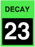 |
These appear in the display as Env1/2 Decay.
MIDI
These are accessed via the following NRPNs:
| Env 1 | Env 2 | ||
| A | 1,17 | 1,30 | |
| B | 2,17 | 2,30 |
Values
| MIDI | display | ||
| 0 | instant | ||
| 1 | 2ms | ||
| • • • |
• • • |
||
| 126 | 20s | ||
| 127 | infinite | (default) |
ENVELOPE decay mod select
These select one of twelve modulation sources for the decay time of the envelope generators.
Toolkit
These are contained in the Envelope decay clusters within the Envelope sections.
Chroma panel
These are contained in the ENVELOPE 1 and ENVELOPE 2 sections of the right panel, under the following parameter numbers:
| Env 1 | Env 2 | |
These appear in the display as Env1/2 Dec Mod Select.
MIDI
These are accessed via the following NRPNs:
| Env 1 | Env 2 | ||
| A | 1,19 | 1,32 | |
| B | 2,19 | 2,32 |
Values
| MIDI | display | ||
| 0 | +lever 1 | ||
| 1 | +lever 2 | ||
| 2 | –lever 1 | ||
| 3 | –lever 2 | ||
| 4 | pedal 1 | ||
| 5 | pedal 2 | ||
| 6 | –pedal 1 | (bipolar pedal only) | |
| 7 | –pedal 2 | (bipolar pedal only) | |
| 8 | ribbon | ||
| 9 | pitch | (default) | |
| 10 | velocity | ||
| 11 | pressure |
ENVELOPE decay mod depth
These control the amount that the decay time of each envelope generator is modulated. The displayed values are the percentage of the total decay time parameter range covered by one unit of modulation.
Toolkit
These are contained in the Envelope decay clusters within the Envelope sections.
Chroma panel
These are contained in the ENVELOPE 1 and ENVELOPE 2 sections of the right panel, under the following parameter numbers:
| Env 1 | Env 2 | |
|
|
|
These appear in the display as Env1/2 Dec Mod Depth.
MIDI
These are accessed via the following NRPNs:
| Env 1 | Env 2 | ||
| A | 1,20 | 1,33 | |
| B | 2,20 | 2,33 |
Since these are bipolar parameters, the values are offset by 64.
Values
| MIDI | display | ||
| 0 | –100% | ||
| • • • |
• • • |
||
| 64 | off | (default) | |
| • • • |
• • • |
||
| 127 | +100% |
ENVELOPE decay self mod
These control the amount that the decay time of each envelope generator is modulated by its own instantaneous value. This varies the shape of the decay curve from the usual simple exponential shape. Setting this to a negative value is particularly useful, because it can yield a much faster initial decay, and then only on those higher amplitude envelopes.
Toolkit
These are contained in the Envelope decay clusters within the Envelope sections.
Chroma panel
These are contained in the ENVELOPE 1 and ENVELOPE 2 sections of the right panel, under the following parameter numbers:
| Env 1 | Env 2 | |
|
|
|
These appear in the display as Env1/2 Dec Self Mod.
MIDI
These are accessed via the following NRPNs:
| Env 1 | Env 2 | ||
| A | 1,18 | 1,31 | |
| B | 2,18 | 2,31 |
Since these are bipolar parameters, the values are offset by 64.
Values
| MIDI | display | ||
| 0 | –100% | ||
| • • • |
• • • |
||
| 64 | off | (default) | |
| • • • |
• • • |
||
| 127 | +100% |
ENVELOPE release time
These control the basic release time of each envelope generator, before modulation, from instantaneous to over 20 seconds.
Toolkit
These are contained in the Envelope release clusters within the two Envelope sections.
Chroma panel
These are contained in the ENVELOPE 1 and ENVELOPE 2 sections of the right panel, under the following parameter numbers:
| Env 1 | Env 2 | |
These appear in the display as Env1/2 Release.
MIDI
These are accessed via the following NRPNs:
| Env 1 | Env 2 | ||
| A | 1,21 | 1,34 | |
| B | 2,21 | 2,34 |
Values
| MIDI | display | ||
| 0 | instant | (default) | |
| 1 | 2ms | ||
| • • • |
• • • |
||
| 127 | 21s |
ENVELOPE release mod select
These select one of fifteen modulation sources and depths for the release time of the envelope generators.
The “pitch” settings make the release shorter for high notes and longer for low notes, by various ratios.
The “pedal” settings allow either pedal to vary the release time from its nominal setting to whatever the decay setting is. Thus, the pedal functions sort of like a variable sustain control.
The “slow” settings make the release slower by various ratios if the release velocity is lower than the threshold set by the global Release Threshold parameter.
Toolkit
These are contained in the Envelope release clusters within the Envelope sections.
Chroma panel
These are contained in the ENVELOPE 1 and ENVELOPE 2 sections of the right panel, under the following parameter numbers:
| Env 1 | Env 2 | |
|
|
|
These appear in the display as Env1/2 Release Mod.
MIDI
These are accessed via the following NRPNs:
| Env 1 | Env 2 | ||
| A | 1,22 | 1,35 | |
| B | 2,22 | 2,35 |
Values
| MIDI | display | ||
| 0 | none | (default) | |
| 1 | pitch x2 | ||
| 2 | pitch x3 | ||
| 3 | pitch x4 | ||
| 4 | pedal 1 | ||
| 5 | pedal 2 | ||
| 6 | –pedal 1 | (bipolar pedal only) | |
| 7 | –pedal 2 | (bipolar pedal only) | |
| 8 | slow x2 | ||
| 9 | slow x4 | ||
| 10 | slow x8 | ||
| 11 | slow x16 | ||
| 12 | slow x32 | ||
| 13 | slow x64 | ||
| 14 | slow x128 | ||
| 15 | slow x256 |
OSCILLATOR tune
These control the basic pitch of each oscillator before modulation. Note that each oscillator is always modulated by the corresponding glide output. The values are shown as the scale pitch heard when middle C is played; the default value is C5, which is middle C, 5 octaves above MIDI note zero.
Toolkit
These are contained in the Oscillator tune clusters within the Oscillator section.
Chroma panel
These are contained in the PITCH section of the right panel, under the following parameter number:
These appear in the display as Osc Tune.
MIDI
These are accessed via the following NRPNs:
| A | 1,36 | |
| B | 2,36 |
Values
The values are displayed as scale pitches:
| MIDI | display | ||
| 40 | C3 | (down 2 octaves) | |
| • • • |
• • • |
(semitones) | |
| 64 | C5 | (default) | |
| • • • |
• • • |
(semitones) | |
| 124 | C10 | (up 5 octaves) |
OSCILLATOR mod select
These select a pitch modulation source, using the same choices that are available for waveshaper and filter inputs. The “+” and “–” lever options use only one side of the lever. The “thresh” options for the velocity and pressure yield no output until the input is at mid-scale, and then rise at twice the slope to the maximum value.
Toolkit
These are contained in the Oscillator mod clusters within the Oscillator section.
Chroma panel
These are contained in the PITCH section of the right panel, under the following parameter numbers:
| mod 1 | mod 2 | mod 3 | mod 4 | mod 5 | |
|
|
|
These appear in the display as Osc Mod1-5 Select.
MIDI
These are accessed via the following NRPNs:
| mod 1 | mod 2 | mod 3 | mod 4 | mod 5 | ||
| A | 1,37 | 1,40 | 1,42 | 1,44 | 1,46 | |
| B | 2,37 | 2,40 | 2,42 | 2,44 | 2,46 |
Values
| MIDI | display | ||
| 0 | glide A | ||
| 1 | sweep A | (mod 2 default) | |
| 2 | envelope 1A | ||
| 3 | envelope 2A | (mod 3 default) | |
| 4 | glide B | ||
| 5 | sweep B | (mod 4 default) | |
| 6 | envelope 1B | ||
| 7 | envelope 2B | (mod 5 default) | |
| 8 | +lever 1 | ||
| 9 | +lever 2 | ||
| 10 | lever 1 | ||
| 11 | lever 2 | (mod 1 default) | |
| 12 | –lever 1 | ||
| 13 | –lever 2 | ||
| 14 | pedal 1 | ||
| 15 | pedal 2 | ||
| 16 | ±pedal 1 | (bipolar pedal only) | |
| 17 | ±pedal 2 | (bipolar pedal only) | |
| 18 | –pedal 1 | (bipolar pedal only) | |
| 19 | –pedal 2 | (bipolar pedal only) | |
| 20 | ribbon | ||
| 21 | noise | ||
| 22 | velocity | ||
| 23 | velocity thresh | ||
| 24 | pressure | ||
| 25 | pressure thresh |
OSCILLATOR mod depth
These control the amount of pitch modulation. The displayed values are the number of semitones per unit of modulation. There are five of these parameters for each oscillator.
Toolkit
These are contained in the Oscillator mod clusters within the Oscillator section.
Chroma panel
These are contained in the PITCH section of the right panel, under the following parameter numbers:
| mod 1 | mod 2 | mod 3 | mod 4 | mod 5 | |
|
|
|
These appear in the display as Osc Mod1-5 Depth.
MIDI
These are accessed via the following NRPNs:
| mod 1 | mod 2 | mod 3 | mod 4 | mod 5 | ||
| A | 1,38 | 1,41 | 1,43 | 1,45 | 1,47 | |
| B | 2,38 | 2,41 | 2,43 | 2,45 | 2,47 |
Since these are bipolar parameters, the values are offset by 64.
Values
The values have fine resolution near zero and coarse resolution at the extremes:
| MIDI | display | ||
| 0 | –64 | ||
| • • • |
• • • |
(steps of 2) | |
| 14 | –36 | ||
| • • • |
• • • |
(steps of 1) | |
| 46 | –4 | ||
| • • • |
• • • |
(steps of 0.5) | |
| 50 | –2 | ||
| • • • |
• • • |
(steps of 0.3) | |
| 52 | –1.4 | ||
| • • • |
• • • |
(steps of 0.2) | |
| 56 | –0.6 | ||
| • • • |
• • • |
(steps of 0.1) | |
| 60 | –0.2 | ||
| • • • |
• • • |
(steps of 0.05) | |
| 64 | off | (default) | |
| • • • |
• • • |
(steps of 0.05) | |
| 68 | +0.2 | ||
| • • • |
• • • |
(steps of 0.1) | |
| 72 | +0.6 | ||
| • • • |
• • • |
(steps of 0.2) | |
| 76 | +1.4 | ||
| • • • |
• • • |
(steps of 0.3) | |
| 78 | +2 | ||
| • • • |
• • • |
(steps of 0.5) | |
| 82 | +4 | ||
| • • • |
• • • |
(steps of 1) | |
| 112 | +34 | ||
| • • • |
• • • |
(steps of 2) | |
| 127 | +64 |
OSCILLATOR mod steps
These select an optional sampling or quantization for the Oscillator A or B Mod 1 input. Sampling causes the modulation value to change only at certain points in time, when either sweep starts a new cycle, rather than continuously. Quantizing causes the value to change in discrete steps by rounding the value to the nearest multiple of the quantization interval. The “soft semitones” is a special kind of partial quantization that puts “flat spots” into the modulation curve at each semitone, so that it is easier to make a lever or pedal stop on an exact scale pitch.
Toolkit
This is are contained in the first Oscillator mod cluster within the Oscillator section.
Chroma panel
These are contained in the PITCH section of the right panel, under the following parameter number:
|
|
These appear in the display as Osc Mod1 Steps.
MIDI
These are accessed via the following NRPNs:
| A | 1,39 | |
| B | 2,39 |
Values
| MIDI | display | ||
| 0 | none | (default) | |
| 1 | soft semitones | ||
| 2 | semitones | ||
| 3 | whole tones | ||
| 4 | minor thirds | ||
| 5 | major thirds | ||
| 6 | fourths | ||
| 7 | tritones | ||
| 8 | fifths | ||
| 9 | sweep A | ||
| 10 | sweep B |
WAVESHAPER shape
These select one of 17 shapes for each waveshaper. Two are based on sawtooth waves, where the “saws” shape is the sum of two sawtooth waves with a phase difference between them, and “pulse” is the difference between two sawtooth waves, thus having the opposite harmonic spectrum. That is, where the saws wave has peaks the pulse has notches, and vice versa.
The FM shapes are new to the Digital Chroma. They are single operator phase modulation sounds, where a sine wave of one multiple of the oscillator frequency modulates a sine wave carrier of another multiple, with a number of different ratios. For instance, the “FM 3:2” setting uses a carrier at three times the oscillator frequency, and a modulator at twice the oscillator frequency. They are best understood, however, by listening to them first with the width parameter set to zero, then by slowly raising the width to increase the FM amount, to hear how the harmonic content evolves.
There are also two FM shapes where the sine wave carrier is modulated by the opposite channel's oscillator output or its filter's low-pass output.
Finally, there are two noise types, present in the original Chroma, plus a new “impulse” shape that generates a click at the start of the note. It is useful for pinging a highly resonant filter; it’s duration is inversely proportional to the oscillator frequency, but it is otherwise unpitched. With these three shapes, the width parameters do nothing.
Toolkit
These are contained in the Waveshaper shape cluster within the Waveshaper section.
Chroma panel
These are contained in the WIDTH section of the right panel, under the following parameter number:
|
|
These appear in the display as Wave Shape.
MIDI
These are accessed via the following NRPNs:
| A | 1,48 | |
| B | 2,48 |
Values
| MIDI | display | ||
| 0 | saws | (default) | |
| 1 | pulse | ||
| 2 | FM 1:1 | ||
| 3 | FM 1:2 | ||
| 4 | FM 1:3 | ||
| 5 | FM 1:4 | ||
| 6 | FM 2:1 | ||
| 7 | FM 2:3 | ||
| 8 | FM 3:1 | ||
| 9 | FM 3:2 | ||
| 10 | FM 3:4 | ||
| 11 | FM 4:1 | ||
| 12 | FM 4:3 | ||
| 13 | oscillator FM | ||
| 14 | filter FM | ||
| 15 | pink noise | ||
| 16 | white noise | ||
| 17 | impulse |
WAVESHAPER width
These control the basic pulse or FM width of each waveshaper before modulation. The values are shown as percentages if the “saws” or “pulse” shape is selected, or as a number of cycles of phase modulation if any of the FM shapes are selected. (This has no effect for the noise or impulse shapes.)
Toolkit
These are contained in the Waveshaper shape cluster within the Waveshaper section.
Chroma panel
These are contained in the WIDTH section of the right panel, under the following parameter number:
These appear in the display as Wave Width.
MIDI
These are accessed via the following NRPNs:
| A | 1,49 | |
| B | 2,49 |
Values
The values are displayed as percentages or cycles:
| MIDI | percent | cycles | ||
| 0 | 0% | 0cyc | (default) | |
| • • • |
• • • |
• • • |
||
| 64 | 50% | 8cyc | (significant) | |
| • • • |
• • • |
• • • |
||
| 127 | 100% | 16cyc |
WAVESHAPER mod select
These select a waveshaper width modulation source, using the same choices that are available for oscillator and filter inputs. The “+” and “–” lever options use only one side of the lever. The “thresh” options for the velocity and pressure yield no output until the input is at mid-scale, and then rise at twice the slope to the maximum value.
Toolkit
These are contained in the Waveshaper mod clusters within the Waveshaper section.
Chroma panel
These are contained in the WIDTH section of the right panel, under the following parameter numbers:
| mod 1 | mod 2 | |
|
|
These appear in the display as Wave Mod1-2 Select.
MIDI
These are accessed via the following NRPNs:
| mod 1 | mod 2 | ||
| A | 1,50 | 1,52 | |
| B | 2,50 | 2,52 |
Values
| MIDI | display | ||
| 0 | glide A | ||
| 1 | sweep A | (mod 1 default) | |
| 2 | envelope 1A | ||
| 3 | envelope 2A | (mod 2 default) | |
| 4 | glide B | ||
| 5 | sweep B | ||
| 6 | envelope 1B | ||
| 7 | envelope 2B | ||
| 8 | +lever 1 | ||
| 9 | +lever 2 | ||
| 10 | lever 1 | ||
| 11 | lever 2 | ||
| 12 | –lever 1 | ||
| 13 | –lever 2 | ||
| 14 | pedal 1 | ||
| 15 | pedal 2 | ||
| 16 | ±pedal 1 | (bipolar pedal only) | |
| 17 | ±pedal 2 | (bipolar pedal only) | |
| 18 | –pedal 1 | (bipolar pedal only) | |
| 19 | –pedal 2 | (bipolar pedal only) | |
| 20 | ribbon | ||
| 21 | noise | ||
| 22 | velocity | ||
| 23 | velocity thresh | ||
| 24 | pressure | ||
| 25 | pressure thresh |
WAVESHAPER mod depth
These control the amount of waveshaper width modulation. The displayed values are the percentage width variation per unit of modulation, if the “saws” or “pulse” shape is selected, or the number of cycles of FM per unit of modulation if one of the “FM” shapes are selected. This has no effect for a “noise” or “impulse” shape is selected.
Toolkit
These are contained in the Waveshaper mod clusters within the Waveshaper section.
Chroma panel
These are contained in the WIDTH section of the right panel, under the following parameter numbers:
| mod 1 | mod 2 | |
|
|
These appear in the display as Wave Mod1-2 Depth.
MIDI
These are accessed via the following NRPNs:
| mod 1 | mod 2 | ||
| A | 1,51 | 1,53 | |
| B | 2,51 | 2,43 |
Since these are bipolar parameters, the values are offset by 64.
Values
The values are displayed as percentages or cycles:
| MIDI | percent | cycles | ||
| 0 | –100% | –16cyc | ||
| • • • |
• • • |
• • • |
||
| 64 | off | off | (default) | |
| • • • |
• • • |
• • • |
||
| 127 | +100% | +16cyc |
FILTER mode
These select one of six modes for Filter A or B. Usually, this should be set to one of the “lowpass” modes, which pass frequencies below the filter tuning, emphasize frequencies around the tuning, and attenuate frequencies above the tuning. The “bandpass” modes attenuate frequencies below and above the filter tuning, and the “highpass” modes attenuate frequences below the filter tuning and pass frequences above it. The four-pole, or “4p” modes attenuate more than the two-pole, or “2p” modes.
Toolkit
These are contained in the Filter tune clusters within the Filter section.
Chroma panel
This is contained in the CUTOFF section of the right panel, under the following parameter number:
These appear in the display as Filter Mode.
MIDI
These are accessed via the following NRPNs:
| A | 1,54 | |
| B | 2,54 |
Values
| MIDI | display | ||
| 0 | 2p lowpass | (default) | |
| 1 | 4p lowpass | ||
| 2 | 2p bandpass | ||
| 3 | 4p bandpass | ||
| 4 | 2p highpass | ||
| 5 | 4p highpass |
FILTER tune
These control the basic pitch of each filter before modulation. The values are shown as the scale pitch heard if the resonance is cranked all the way up so that the filter becomes an oscillator, and middle C is played. The default value is C11, the highest the filter can be tuned to, so that you hear an unfiltered sound when you begin to edit a scratch program.
If you want the pitch to track the keyboard, you should set this to C5 (middle C), choose Glide A or Glide B for one of the Mod Select inputs, and set the corresponding Mod Depth to 32, since there are 32 semitones per modulation unit.
Toolkit
These are contained in the Filter tune clusters within the Filter section.
Chroma panel
These are contained in the CUTOFF section of the right panel, under the following parameter number:
These appear in the display as Filter Tune.
MIDI
These are accessed via the following NRPNs:
| A | 1,58 | |
| B | 2,58 |
Values
The values are displayed as scale pitches:
| MIDI | display | ||
| 0 | F0 | (about 11Hz) | |
| • • • |
• • • |
(semitones) |
|
| 127 | D#10 | (default, about 16KHz) |
FILTER mod select
These select a filter modulation source, using the same choices that are available for oscillator and waveshaper inputs. The “+” and “–” lever options use only one side of the lever. The “thresh” options for the velocity and pressure yield no output until the input is at mid-scale, and then rise at twice the slope to the maximum value.
Toolkit
These are contained in the Filter mod clusters within the Filter section.
Chroma panel
These are contained in the CUTOFF section of the right panel, under the following parameter numbers:
| mod 1 | mod 2 | mod 3 | mod 4 | mod 5 | |
|
|
|
These appear in the display as Filter Mod1-5 Select.
MIDI
These are accessed via the following NRPNs:
| mod 1 | mod 2 | mod 3 | mod 4 | mod 5 | ||
| A | 1,59 | 1,62 | 1,64 | 1,66 | 1,68 | |
| B | 2,59 | 2,62 | 2,64 | 2,66 | 2,68 |
Values
| MIDI | display | ||
| 0 | glide A | (mod 1 default) | |
| 1 | sweep A | (mod 2 default) | |
| 2 | envelope 1A | ||
| 3 | envelope 2A | (mod 3 default) | |
| 4 | glide B | ||
| 5 | sweep B | (mod 4 default) | |
| 6 | envelope 1B | ||
| 7 | envelope 2B | (mod 5 default) | |
| 8 | +lever 1 | ||
| 9 | +lever 2 | ||
| 10 | lever 1 | ||
| 11 | lever 2 | ||
| 12 | –lever 1 | ||
| 13 | –lever 2 | ||
| 14 | pedal 1 | ||
| 15 | pedal 2 | ||
| 16 | ±pedal 1 | (bipolar pedal only) | |
| 17 | ±pedal 2 | (bipolar pedal only) | |
| 18 | –pedal 1 | (bipolar pedal only) | |
| 19 | –pedal 2 | (bipolar pedal only) | |
| 20 | ribbon | ||
| 21 | noise | ||
| 22 | velocity | ||
| 23 | velocity thresh | ||
| 24 | pressure | ||
| 25 | pressure thresh |
FILTER mod depth
These control the amount of filter tuning modulation. The displayed values are the number of semitones per unit of modulation. There are five of these parameters for each filter.
Toolkit
These are contained in the Filter mod clusters within the Filter section.
Chroma panel
These are contained in the CUTOFF section of the right panel, under the following parameter numbers:
| mod 1 | mod 2 | mod 3 | mod 4 | mod 5 | |
| 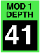 | 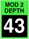 |
|
|
These appear in the display as Filter Mod1-5 Depth.
MIDI
These are accessed via the following NRPNs:
| mod 1 | mod 2 | mod 3 | mod 4 | mod 5 | ||
| A | 1,60 | 1,63 | 1,65 | 1,67 | 1,69 | |
| B | 2,60 | 2,63 | 2,65 | 2,67 | 2,69 |
Since these are bipolar parameters, the values are offset by 64.
Values
The values have fine resolution near zero and coarse resolution at the extremes:
| MIDI | display | ||
| 0 | –64 | ||
| • • • |
• • • |
(steps of 2) | |
| 14 | –36 | ||
| • • • |
• • • |
(steps of 1) | |
| 46 | –4 | ||
| • • • |
• • • |
(steps of 0.5) | |
| 50 | –2 | ||
| • • • |
• • • |
(steps of 0.3) | |
| 52 | –1.4 | ||
| • • • |
• • • |
(steps of 0.2) | |
| 56 | –0.6 | ||
| • • • |
• • • |
(steps of 0.1) | |
| 60 | –0.2 | ||
| • • • |
• • • |
(steps of 0.05) | |
| 64 | off | (default) | |
| • • • |
• • • |
(steps of 0.05) | |
| 68 | +0.2 | ||
| • • • |
• • • |
(steps of 0.1) | |
| 72 | +0.6 | ||
| • • • |
• • • |
(steps of 0.2) | |
| 76 | +1.4 | ||
| • • • |
• • • |
(steps of 0.3) | |
| 78 | +2 | ||
| • • • |
• • • |
(steps of 0.5) | |
| 82 | +4 | ||
| • • • |
• • • |
(steps of 1) | |
| 112 | +34 | ||
| • • • |
• • • |
(steps of 2) | |
| 127 | +64 |
FILTER mod steps
These select an optional sampling or quantization for the Filter A or B Mod 1 input. Sampling causes the modulation value to change only at certain points in time, when either sweep starts a new cycle, rather than continuously. Quantizing causes the value to change in discrete steps by rounding the value to the nearest multiple of the quantization interval. The “soft semitones” is a special kind of partial quantization that puts “flat spots” into the modulation curve at each semitone, so that it is easier to make a lever or pedal stop on an exact scale pitch. These are primarily useful when the resonance is cranked all the way up, so the filter becomes an oscillator.
Toolkit
This is are contained in the first Filter mod cluster within the Filter section.
Chroma panel
This is contained in the CUTOFF section of the right panel, under the following parameter number:
|
|
These appear in the display as Filter Mod1 Steps.
MIDI
These are accessed via the following NRPNs:
| A | 1,61 | |
| B | 2,61 |
Values
| internal | display | ||
| 0 | none | (default) | |
| 1 | soft semitones | ||
| 2 | semitones | ||
| 3 | whole tones | ||
| 4 | minor thirds | ||
| 5 | major thirds | ||
| 6 | fourths | ||
| 7 | tritones | ||
| 8 | fifths | ||
| 9 | sweep A | ||
| 10 | sweep B |
FILTER resonance
These control the basic resonance of each filter before modulation. The values are shown as the mathematical “Q” values, ranging from 0.5 to 200. There are also three more settings at the high end of the scale that have an infinite Q, which causes the filter to oscillate, superimposing a sine wave on top of whatever signal is going into the filter, with three different levels of overdrive.
Toolkit
These are contained in the Filter resonance clusters within the Filter section.
Chroma panel
These are contained in the CUTOFF section of the right panel, under the following parameter number:
These appear in the display as Resonance.
MIDI
These are accessed via the following NRPNs:
| A | 1,55 | |
| B | 2,55 |
Values
The values are displayed as Q values, except for the top three values which cause self-oscillation:
| MIDI | display | ||
| 0 | 0.5 | (default) | |
| • • • |
• • • |
||
| 124 | 200 | ||
| 125 | low self-osc | ||
| 126 | med self-osc | ||
| 127 | high self-osc |
FILTER resonance mod select
These select a modulation source for modulating the resonance of each filter, using the same choices that are available for oscillator, waveshaper, and filter inputs. The “+” and “–” lever options use only one side of the lever. The “thresh” options for the velocity and pressure yield no output until the input is at mid-scale, and then rise at twice the slope to the maximum value.
Toolkit
These are contained in the Filter resonance clusters within the Filter section.
Chroma panel
These are contained in the CUTOFF section of the right panel, under the following parameter number:
|
|
These appear in the display as Resonance Mod Select.
MIDI
These are accessed via the following NRPNs:
| A | 1,56 | |
| B | 2,56 |
Values
| MIDI | display | ||
| 0 | glide A | ||
| 1 | sweep A | ||
| 2 | envelope 1A | ||
| 3 | envelope 2A | ||
| 4 | glide B | ||
| 5 | sweep B | ||
| 6 | envelope 1B | ||
| 7 | envelope 2B | (default) | |
| 8 | +lever 1 | ||
| 9 | +lever 2 | ||
| 10 | lever 1 | ||
| 11 | lever 2 | ||
| 12 | –lever 1 | ||
| 13 | –lever 2 | ||
| 14 | pedal 1 | ||
| 15 | pedal 2 | ||
| 16 | ±pedal 1 | (bipolar pedal only) | |
| 17 | ±pedal 2 | (bipolar pedal only) | |
| 18 | –pedal 1 | (bipolar pedal only) | |
| 19 | –pedal 2 | (bipolar pedal only) | |
| 20 | ribbon | ||
| 21 | noise | ||
| 22 | velocity | ||
| 23 | velocity thresh | ||
| 24 | pressure | ||
| 25 | pressure thresh |
FILTER resonance mod depth
These control the amount of modulation of the resonance of each filter. The displayed values are the percentage of the total resonance range covered by one unit of modulation.
Toolkit
These are contained in the Filter resonance clusters within the Filter section.
Chroma panel
These are contained in the CUTOFF section of the right panel, under the following parameter number:
|
|
These appear in the display as Resonance Mod Depth.
MIDI
These are accessed via the following NRPNs:
| A | 1,57 | |
| B | 2,57 |
Since these are bipolar parameters, the values are offset by 64.
Values
The values are displayed as percentages:
| MIDI | display | ||
| 0 | –100% | ||
| • • • |
• • • |
||
| 64 | off | (default) | |
| • • • |
• • • |
||
| 127 | +100% |
AMPLIFIER mod select
These select a primary modulation source for modulating the volume of each amplifier. These sources are the envelopes, but there is also a “fixed” setting that provides a constant 1 unit value, which is useful when the patch uses Amplifier B to adjust the mix between the A and B oscillators.
Toolkit
These are contained in the Amplifier mod clusters within the Amplifier section.
Chroma panel
These are contained in the VOLUME section of the right panel, under the following parameter numbers:
| mod 1 | mod 2 | |
They appear in the display as Amp Mod1/2 Select.
MIDI
These are accessed via the following NRPNs:
| mod 1 | mod 2 | ||
| A | 1,70 | 1,72 | |
| B | 2,70 | 2,72 |
Values
| MIDI | display | ||
| 0 | envelope 1A | (mod 1 default) | |
| 1 | envelope 2A | ||
| 2 | envelope 1B | (mod 2 default) | |
| 3 | envelope 2B | ||
| 4 | fixed |
AMPLIFIER mod depth
These adjust the amount of envelope (or “fixed”) signal that goes into each amplifier. These two sources are added together, then multiplied by the post mod input.
Toolkit
These are contained in the Amplifier mod clusters within the Amplifier section.
Chroma panel
These are contained in the VOLUME section of the right panel, under the following parameter numbers:
| mod 1 | mod 2 | |
They appear in the display as Amp Mod1/2 Depth.
MIDI
These are accessed via the following NRPNs:
| mod 1 | mod 2 | ||
| A | 1,71 | 1,73 | |
| B | 2,71 | 2,73 |
Values
| MIDI | display | ||
| 0 | off | (mod 1 significant, mod 2 default) | |
| • • • |
• • • |
||
| 90 | 0db | (mod 1 default, mod 2 significant) | |
| • • • |
• • • |
||
| 127 | +6db |
AMPLIFIER post mod select
These select one of 14 sources for post modulating each amplifier's volume. They apply a reduction after the two primary sources (normally envelopes) are added together.
The “pedal” choices are useful for volume; pedal 1 should be preferred for that purpose, since it is at maximum value if the pedal isn’t plugged in.
The “sweep” choices are useful for tremolo. Since most sweep shapes have a ±1 range, any depth over 50% will clip at zero.
The “pitch” choice is useful for balancing the sound across the keyboard, and works best with low (possibly negative) mod depths. See the mod depth parameter for diagrams.
Toolkit
These are contained in the Amplifier post mod clusters within the Amplifier section.
Chroma panel
These are contained in the VOLUME section of the right panel, under the following parameter number:
They appear in the display as Amp Post Mod Select.
MIDI
These are accessed via the following NRPNs:
| A | 1,74 | |
| B | 2,74 |
Values
| MIDI | display | ||
| 0 | +lever 1 | ||
| 1 | +lever 2 | ||
| 2 | –lever 1 | ||
| 3 | –lever 2 | ||
| 4 | pedal 1 | (default) | |
| 5 | pedal 2 | ||
| 6 | –pedal 1 | (bipolar pedal only) | |
| 7 | –pedal 2 | (bipolar pedal only) | |
| 8 | ribbon | ||
| 9 | pitch | ||
| 10 | velocity | ||
| 11 | pressure | ||
| 12 | sweep A | ||
| 13 | sweep B |
AMPLIFIER post mod depth
These adjust the amount of post modulation that applies to each amplifier's volume. They apply a reduction after the two primary sources (normally envelopes) are added together.
When set to “off”, the post modulation has no effect, and the volume is normal. When set to 50%, most sources can vary the volume from 50% to 100%. When set to 100%, most sources can vary the volume from zero to 100%. When set to a negative value, the modulation reduces the volume across its range, rather than increasing it.
Unipolar modulation
Most mod sources have a 0 to 1 unit range. The following graphs show the response at various positive and negative depths:
| 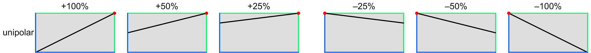 |
The blue lines represent 0 units of input and output, and the green lines represent 1 unit of input and output. The red dots show where the curve pivots around, which is different for positive and negative depths. (These dots aren’t shown in the graph in the cluster popup.)
Bipolar modulation
Most sweep wave shapes have a ±1 unit range, as does the optional ribbon controller. Since the volume can’t go negative (it is clamped at zero), mod depths outside a ±50% range aren’t useful. However, for ribbon, one might wish to use a ±100% range, and only use half the ribbon, since some ribbon algorithms always start at zero when you touch it, or return to zero when you release it.
 |
Pitch modulation
The pitch varies from –1 to almost +1 unit across the keyboard, but can go further with octave transposition, and further still via MIDI. The darker regions represent the notes outside the normal keyboard range. As you can see, the most useful settings are lower values, allowing you to introduce a modest variation in volume across the keyboard:
 |
Toolkit
These are contained in the Amplifier post mod clusters within the Amplifier section.
Chroma panel
These are contained in the VOLUME section of the right panel, under the following parameter number:
They appear in the display as Amp Post Mod Depth.
MIDI
These are accessed via the following NRPNs:
| A | 1,75 | |
| B | 2,75 |
Since these are bipolar parameters, the values are offset by 64.
Values
| MIDI | display | ||
| 0 | –100% | ||
| • • • |
• • • |
||
| 64 | off | (default) | |
| • • • |
• • • |
||
| 127 | +100% | (significant) |
AMPLIFIER pan
These control the output pan position by adjusting the balance between the left and right outputs for each amplifier. The values are displayed as angles, where –90° is full left and +90° is full right.
Toolkit
These are contained in the Amplifier pan clusters within the Amplifier section.
Chroma panel
These are contained in the VOLUME section of the right panel, under the following parameter number:
|
|
They appear in the display as Pan.
MIDI
These are accessed via the following NRPNs:
| A | 1,76 | |
| B | 2,76 |
Since these are bipolar parameters, the values are offset by 64.
Values
The internal numeric values are displayed as angles:
| MIDI | display | ||
| 0 | –90° | ||
| • • • |
• • • |
||
| 64 | off | (default) | |
| • • • |
• • • |
||
| 127 | +90° |
AMPLIFIER pan mod select
These select a modulation source for modulating the output panning of each amplifier, using the same choices that are available for oscillator, waveshaper, and filter inputs. The “+” and “–” lever options use only one side of the lever. The “thresh” options for the velocity and pressure yield no output until the input is at mid-scale, and then rise at twice the slope to the maximum value.
Toolkit
These are contained in the Amplifier pan cluster within the Amplifier section.
Chroma panel
These are contained in the VOLUME section of the right panel, under the following parameter number:
|
|
They appear in the display as Pan Mod Select.
MIDI
These are accessed via the following NRPNs:
| A | 1,77 | |
| B | 2,77 |
Values
| MIDI | display | ||
| 0 | glide A | ||
| 1 | sweep A | ||
| 2 | envelope 1A | ||
| 3 | envelope 2A | ||
| 4 | glide B | ||
| 5 | sweep B | (default) | |
| 6 | envelope 1B | ||
| 7 | envelope 2B | ||
| 8 | +lever 1 | ||
| 9 | +lever 2 | ||
| 10 | lever 1 | ||
| 11 | lever 2 | ||
| 12 | –lever 1 | ||
| 13 | –lever 2 | ||
| 14 | pedal 1 | ||
| 15 | pedal 2 | ||
| 16 | ±pedal 1 | (bipolar pedal only) | |
| 17 | ±pedal 2 | (bipolar pedal only) | |
| 18 | –pedal 1 | (bipolar pedal only) | |
| 19 | –pedal 2 | (bipolar pedal only) | |
| 20 | ribbon | ||
| 21 | noise | ||
| 22 | velocity | ||
| 23 | velocity thresh | ||
| 24 | pressure | ||
| 25 | pressure thresh |
AMPLIFIER pan mod depth
These control the amount of modulation of the output panning of each amplifier. The displayed values are in degrees covered by one unit of modulation.
Toolkit
These are contained in the Amplifier pan cluster within the Amplifier section.
Chroma panel
These are contained in the VOLUME section of the right panel, under the following parameter number:
|
|
They appear in the display as Pan Mod Depth.
MIDI
These are accessed via the following NRPNs:
| A | 1,78 | |
| B | 2,78 |
Since these are bipolar parameters, the values are offset by 64.
Values
The values are the number of degrees per unit of modulation:
| MIDI | display | ||
| 0 | –180° | ||
| • • • |
• • • |
||
| 64 | off | (default) | |
| • • • |
• • • |
||
| 127 | +180° |
All global parameters
This lists all the global parameters in the order they appear in the Toolkit and on the Digital Chroma’s control panel. In the Toolkit, they are found on the Tools screen. On the Digital Chroma’s panel, they are accessed in PROGRAM SELECT mode using SET SPLIT and a number in the top row. Each individual page shows a parameter, or group of similar parameters, and explains:
- What it does
- How to access it from the Toolkit
- How to access it from the Chroma’s panel
- How to access it via MIDI
- How MIDI values map to displayed values
Global parameters
| Reverb room | Invert | |
| Reverb send | High resolution | |
| Analog master | Bipolar | |
| Rollover time | Display position | |
| Release threshold | Display brightness | |
| MIDI main in | Tapper mode | |
| MIDI link in | Slider mode | |
| MIDI record out | Edit timeout | |
| MIDI record program | ||
| MIDI record state |
GLOBAL reverb room
This controls the reverb room used by the sound. On startup, and whenever it is changed, it injects a reverb room control into the Main and Link instruments. MIDI playback instruments use the recorded value of this control, not this global parameter.
Note that this may be overridden by the program's reverb room parameter.
Toolkit
This is contained in the Global parameters section of the Tools screen.
Chroma panel
This is accessed in PROGRAM SELECT mode using the following global parameter number:
|
|
This appears in the display as Reverb Room.
MIDI
This is accessed via NRPN 15,1.
Values
| MIDI | display | ||
| 1 | small | ||
| 2 | medium | ||
| 3 | large | ||
| 4 | huge |
GLOBAL reverb send
This controls the amount of sound sent into the reverb room, relative to the amount of direct sound. On startup, and whenever it is changed, it injects a reverb send control into the Main and Link instruments. MIDI playback instruments use the recorded value of this control, not this global parameter.
Note that this may be overridden by the program's reverb send parameter.
Toolkit
This is contained in the Global parameters section of the Tools screen.
Chroma panel
This is accessed in PROGRAM SELECT mode using the following global parameter number:
|
|
This appears in the display as Reverb Send.
MIDI
This is accessed via NRPN 15,2.
Values
| MIDI | display | ||
| 0 | off | ||
| 1 | –65db | ||
| • • • |
• • • |
||
| 96 | +14.2db | ||
| • • • |
• • • |
||
| 127 | +30.5db |
Up to 96, the dry sound is at full volume. Beyond that, it begins to be attenuated.
GLOBAL analog master
This controls the level of the analog audio output, relative to the digital output. It has no effect on the digital output. It should normally be left at 100%, but if the output is driving low-impedance headphones, the result may be clipped or too loud, in which case this may be reduced.
Toolkit
This is contained in the Global parameters section of the Tools screen.
Chroma panel
This is accessed in PROGRAM SELECT mode using the following global parameter number:
|
|
This appears in the display as Analog Master Volume.
MIDI
This is accessed via NRPN 15,3.
Values
| MIDI | display | ||
| 0 | off | ||
| 1 | 1% | ||
| • • • |
• • • |
||
| 100 | 100% |
GLOBAL rollover time
This sets the delay when playing in certain keyboard algorithms, to allow a complete chord to be acquired before assigning the notes to voices. The higher this is set, the more delay you’ll feel, but the sloppier you can be about playing chord notes simultaneously.
Toolkit
This is contained in the Global parameters section of the Tools screen
Chroma panel
This is accessed in PROGRAM SELECT mode using the following global parameter number:
|
|
This appears in the display as Rollover Time.
MIDI
This is accessed via NRPN 15,4.
Values
| MIDI | display | ||
| 1 | 5ms | ||
| • • • |
• • • |
||
| 20 | 100ms |
GLOBAL release threshold
This adjusts the MIDI release velocity below which a key release is considered “slow” for the purpose of the Envelope release mod select parameters. Low values make it easier to get a fast release, and higher values make it easier to get a slow release.
Toolkit
This is contained in the Global parameters section of the Tools screen
Chroma panel
This is accessed in PROGRAM SELECT mode using the following global parameter number:
|
|
This appears in the display as Release Threshold.
MIDI
This is accessed via NRPN 15,5.
Values
| MIDI | display | ||
| 1 | 16 | ||
| • • • |
• • • |
||
| 7 | 112 |
GLOBAL midi main in
This selects the port and channel to accept Main input on. This is the input that is merged in with the internal keyboard, and can be used to substitute a different keyboard or provide alternative controllers. Since the input is subject to the keyboard split and other link releated parameters, it can actually play both the Main and Link sounds.
Toolkit
This is contained in the Global parameters section of the Tools screen. It has separate buttons for the port and for the channels.
Chroma panel
This is accessed in PROGRAM SELECT mode using the following global parameter number:
|
|
This appears in the display as MIDI Main Input.
MIDI
This is accessed via NRPN 15,6.
Values
| MIDI | display | ||
| 0 | none | ||
| 1 | serial 1 | ||
| • • • |
• • • |
||
| 16 | serial 16 | ||
| 17 | hostA 1 | ||
| • • • |
• • • |
||
| 32 | hostA 16 | ||
| 33 | hostB 1 | ||
| • • • |
• • • |
||
| 48 | hostB 16 |
GLOBAL midi link in
This selects the port and channel to accept Link input on. This is the input that is used when the link mode is set to “link external” or “link internal”. The former uses the external input to play the Link sound, while the internal keyboard plays the Main sound. The latter does the reverse.
Toolkit
This is contained in the Global parameters section of the Tools screen. It has separate buttons for the port and for the channels.
Chroma panel
This is accessed in PROGRAM SELECT mode using the following global parameter number:
|
|
This appears in the display as MIDI Link Input.
MIDI
This is accessed via NRPN 15,7.
Values
| MIDI | display | ||
| 0 | none | ||
| 1 | serial 1 | ||
| • • • |
• • • |
||
| 16 | serial 16 | ||
| 17 | hostA 1 | ||
| • • • |
• • • |
||
| 32 | hostA 16 | ||
| 33 | hostB 1 | ||
| • • • |
• • • |
||
| 48 | hostB 16 |
GLOBAL midi record out
This selects the port and channel pair to send Main and Link output on, for recording in an external sequencer.
Toolkit
This is contained in the Global parameters section of the Tools screen. It has separate buttons for the port and for the channels. When you tap a channel button, it selects it and the next higher channel.
Chroma panel
This is accessed in PROGRAM SELECT mode using the following global parameter number:
|
|
This appears in the display as MIDI Record Output.
MIDI
This is accessed via NRPN 15,8.
Values
| MIDI | display | ||
| 0 | none | ||
| 1 | devA 1,2 | ||
| • • • |
• • • |
||
| 16 | devA 16,1 | ||
| 17 | devB 1,2 | ||
| • • • |
• • • |
||
| 32 | devB 16,1 | ||
| 33 | devC 1,2 | ||
| • • • |
• • • |
||
| 48 | devC 16,1 | ||
| 49 | devD 1,2 | ||
| • • • |
• • • |
||
| 64 | devD 16,1 |
GLOBAL midi record program
This enables the recording of actual program data, via Program Set NRPNs, rather than recording MIDI Program Change messages. This makes the recording independent of what programs are loaded into the Chroma when it is played back.
Toolkit
This is contained in the Global parameters section of the Tools screen. It has a single on/off button in the midi record out section.
Chroma panel
This is accessed in PROGRAM SELECT mode using the following global parameter number:
|
|
This appears in the display as MIDI Record Program.
MIDI
This is accessed via NRPN 15,9.
Values
| MIDI | display | ||
| 0 | off | ||
| 1 | on |
GLOBAL midi record state
This enables the sending of the program and controller state when a MIDI Start byte is received on the MIDI record port. If this is off, then the state must be explicitly sent at the start of the recording using SET SPLIT, LINK UNISON on the control panel.
Toolkit
This is contained in the Global parameters section of the Tools screen. It has a single on/off button in the midi record out section.
Chroma panel
This is accessed in PROGRAM SELECT mode using the following global parameter number:
|
|
This appears in the display as MIDI Record State.
MIDI
This is accessed via NRPN 15,10.
Values
| MIDI | display | ||
| 0 | off | ||
| 1 | on |
GLOBAL invert
These five global parameters control the polarities of the levers, pedals, and optional ribbon. The pedal and ribbon polarities should be set according to how they are wired up, so that they operate in the expected manner. The lever polarities should be set according to the user’s preference; pushing generates positive values if not inverted.
Toolkit
These are contained in the Global parameters section of the Tools screen, as five toggle buttons in the invert row.
Chroma panel
These are accessed in PROGRAM SELECT mode using the following global parameter numbers:
| lever 1 | lever 2 | pedal 1 | pedal 2 | ribbon | |
|
|
|
|
|
|
These appear in the display as Lever 1 Polarity, Lever 2 Polarity, Pedal 1 Polarity, Pedal 2 Polarity, and Ribbon Polarity.
MIDI
These are accessed via the following NRPNs:
| lever 1 | lever 2 | pedal 1 | pedal 2 | ribbon | |
| 15,11 | 15,12 | 15,13 | 15,14 | 15,15 |
Values
| MIDI | lever display | pedal, ribbon display | ||
| 0 | positive push | normal | ||
| 1 | positive pull | invert |
GLOBAL high resolution
These three global parameters control the resolution of the MIDI output for the levers, pedals, and optional ribbon. High-resolution settings send twice as much data.
Toolkit
These are contained in the Global parameters section of the Tools screen, as three toggle buttons in the high resolution row.
Chroma panel
These are accessed in PROGRAM SELECT mode using the following global parameter numbers:
| levers | pedals | ribbon | |
|
|
|
|
These appear in the display as Lever Resolution, Pedal Resolution, and Ribbon Resolution.
MIDI
These are accessed via the following NRPNs:
| levers | pedals | ribbon | ||
| A | 15,16 | 15,17 | 15,18 |
Values
| MIDI | display | ||
| 0 | low | ||
| 1 | high |
GLOBAL bipolar
These two global parameters control whether each pedal is to be treated as a normal unipolar control, or a special bipolar control that works like the levers. Since such pedals aren’t commercially available, this would require a custom modified center-sprung pedal.
When configured as bipolar, a pedal uses two different MIDI controls for each side of the pedal, just like the levers do. When configured as unipolar, the MIDI control assigned to the negative side is never used, making it available for use by an alternative external controller. In this case, the alternative controller can be selected as a modulation source by specifying –pedal 1 or –pedal 2 as the source.
Toolkit
These are contained in the Global parameters section of the Tools screen, as two toggle buttons in the bipolar row.
Chroma panel
These are accessed in PROGRAM SELECT mode using the following global parameter numbers:
| pedal 1 | pedal 2 | |
|
|
|
These appear in the display as Pedal 1 Bipolar and Pedal 2 Bipolar.
MIDI
These are accessed via the following NRPNs:
| pedal 1 | pedal 2 | ||
| A | 15,19 | 15,20 |
Values
| MIDI | display | ||
| 0 | off | ||
| 1 | on |
GLOBAL display position
This shifts the Digital Chroma’s displays up or down a little, to compensate for parallax that depends upon your position relative to the keyboard.
Toolkit
This is contained in the Global parameters section of the Tools screen.
Chroma panel
This is accessed in PROGRAM SELECT mode using the following global parameter number:
|
|
This appears in the display as Display Position.
MIDI
This is accessed via NRPN 15,21.
Values
| MIDI | display | ||
| –10 | –10 | ||
| • • • |
• • • |
||
| 10 | +10 |
GLOBAL display brightness
This selects the brightness of the Digital Chroma’s displays and LEDs.
Toolkit
This is contained in the Global parameters section of the Tools screen.
Chroma panel
This is accessed in PROGRAM SELECT mode using the following global parameter number:
|
|
This appears in the display as Display Brightness.
MIDI
This is accessed via NRPN 15,22.
Values
| MIDI | display | ||
| 0 | low | ||
| 1 | medium | ||
| 2 | high |
GLOBAL tapper mode
This controls the Digital Chroma’s panel tapper. It has three settings: “off” to disable it; “switches” to enable it only for switch presses; and “on” to enable it for switch presses and for changes in the value of selector parameters.
Toolkit
This is contained in the Global parameters section of the Tools screen.
Chroma panel
This is accessed in PROGRAM SELECT mode using the following global parameter number:
|
|
This appears in the display as Tapper Mode.
MIDI
This is accessed via NRPN 15,23.
Values
| MIDI | display | ||
| 0 | off | ||
| 1 | switches | ||
| 2 | on |
GLOBAL slider mode
This controls how the Digital Chroma’s sliders acquire control of a parameter, when assigned to a new parameter, or when the parameter value was changed by some other means. The choices are:
| jump | Sets the parameter to the value corresponding to the slider position as soon as it moves. Until then, a small triangle next to the value shows which direction the current value is, relative to the slider position. | |
| capture | The slider must be moved through the position that corresponds to the current parameter value, before it takes control of the parameter. Until then, the triangle shows which direction the slider must be moved to capture the parameter. | |
| smooth | The parameter changes whenever the slider is moved, along a slope that reaches the minimum or maximum value at the end of the slider travel. However, the slope is limited to 4x the normal slope, so the minimum or maximum value can be unreachable if the slider is already too close to that end. In this zone, the triangle shows which direction the slider must be moved to escape this zone. |
Toolkit
This is contained in the Global parameters section of the Tools screen.
Chroma panel
This is accessed in PROGRAM SELECT mode using the following global parameter number:
|
|
This appears in the display as Slider Mode.
MIDI
This is accessed via NRPN 15,24.
Values
| MIDI | display | ||
| 0 | jump | ||
| 1 | capture | ||
| 2 | smooth |
GLOBAL edit timeout
This adjusts the amount of idle time that must elapse while editing, in order that new edits become part of a separate undoable event from the preceding edits.
Toolkit
This is contained in the Global parameters section of the Tools screen.
Chroma panel
This is accessed in PROGRAM SELECT mode using the following global parameter number:
|
|
This appears in the display as Edit Timeout.
MIDI
This is accessed via NRPN 15,25.
Values
| MIDI | display | ||
| 0 | 1s | ||
| 1 | 1.3s | ||
| 2 | 1.6s | ||
| 3 | 2s | ||
| 4 | 2.5s | ||
| 5 | 3s | ||
| 6 | 4s | ||
| 7 | 5s | ||
| 8 | 6s | ||
| 9 | 8s | ||
| 10 | 10s |
All switch functions
In this section, upper case names refer to named switches and numbers refer to numbered switches. In addition, the following notations apply:
| Seq Prog | the Sequence Program footswitch. | |
| key | any key on the keyboard. | |
| x…y | any numbered switch from x to y. Usually, 1…50 refers to a program or parameter, 1…9 refers to a bank. | |
| X, Y | press X followed by Y in sequence, with no overlap. | |
| X + Y | hold X like a shift key, and press Y. | |
| X & Y | press X and Y together, in either order. | |
| (Parameter Select) | the function only applies in Parameter Select mode (or one of the Copy From modes). | |
| (Program Select) | the function only applies in Program Select mode. |
Program selection
| PROG SELECT | Enters Program Select mode. |
| (Program Select) 1…50 | Selects the specified program in the current bank. |
| PROG SELECT + 1…9, 1…50 | Enters Program Select mode, switches to the specified bank, selects the specified program. |
| PROG SELECT + 26 | Loads a scratch program into the main instrument, keeping the current number. |
PROG SELECT also aborts any pending operation that is flashing an LED, except calibration.
Parameter selection
| PARAM SELECT | Enters Parameter Select mode. |
| PARAM SELECT + 1…50 | Enters Parameter Select mode, selects and clears the specified regular parameter. Multiple parameters may be cleared while holding PARAM SELECT. |
| (Parameter Select) 1…50 | Selects the specified regular parameter. |
| (Parameter Select) SET SPLIT, 1…50 | Selects the specified extended parameter. |
| (Parameter Select) SET SPLIT + 1…50 | Selects and clears the specified extended parameter. Multiple parameters may be cleared while holding SET SPLIT. |
PARAM SELECT also aborts any pending operation that is flashing an LED, except calibration.
Parameter copying
| COPY FROM A, COPY FROM A | Selects Copy From A mode, copying from the current program in the main instrument. |
| COPY FROM A, 1…50 | Selects Copy From A mode, copying from the specified program in the current bank. |
| COPY FROM A + 1…9, 1…50 | Selects Copy From A mode, copying from the specified program in the specified bank. |
| PROG SELECT + 1…9, COPY FROM A, 1…50 | Another way to specify a different bank. |
| COPY FROM B … | All functions are analogous to Copy from A. |
Edit mode
| EDIT A | Connects the parameter slider to the A channel, whenever a channel parameter is selected. |
| EDIT B | Connects the parameter slider to the B channel, whenever a channel parameter is selected. |
| EDIT A & EDIT B | Connects the parameter slider to both channels, whenever a channel parameter is selected. |
| SET SPLIT, EDIT A | Selects Edit A mode, but temporarily mutes the B channel oscillator until the program is stored, a new program is selected, or any of the PANEL MODE switches are pressed. The mute isn’t part of the program, just a programming aid. |
| SET SPLIT, EDIT B | Selects Edit B mode, but temporarily mutes the A channel oscillator. |
Program storing
| STORE, STORE | Stores the current program under its same program number. |
| STORE, 1…50 | Stores the current program under the specified program number in the same bank. |
| STORE + 1…9, 1…50 | Stores the current program under the specified bank and program number. |
| PROG SELECT + 1…9, STORE, 1…50 | Another way to specify a different bank. |
| SET SPLIT, STORE, STORE | Swap the current program with the stored version of the same number. |
| SET SPLIT, STORE, 1…50 | Swap the current program with the specified program in the current bank. |
| SET SPLIT, STORE + 1…9, 1…50 | Swap the current program with the specified program in the specified bank. |
| PROG SELECT + 1…9, SET SPLIT, STORE, 1…50 | Another way to specify a different bank. |
Keyboard splits
| SET SPLIT, key | Sets the keyboard split in the current program. |
| SET SPLIT, SET SPLIT | Sets the keyboard split in the current program to the same place it was last manually set. |
External drive functions
| LOAD ONE | Loads the current bank from an external drive. |
| PROG SELECT + 1…9, LOAD ONE | Loads the specified bank from an external drive. |
| LOAD ONE + 1…9 | Loads the specified bank from an external drive into the current bank in the Chroma. |
| PROG SELECT + 1…9, LOAD ONE + 1…9 | Loads the specified bank from an external drive into a different specified bank in the Chroma. |
| SAVE ONE | Saves the current bank to an external drive. |
| PROG SELECT + 1…9, SAVE ONE | Saves the specified bank to an external drive. |
| SAVE ONE + 1…9 | Saves the current bank to the specified bank on an external drive. |
| PROG SELECT + 1…9, SAVE ONE + 1…9 | Saves the specified bank to a different specified bank on an external drive. |
| LOAD ALL | Loads all nine banks from an external drive. |
| SET SPLIT, LOAD ALL | Loads all nine banks from an external drive, prompting before each bank. |
| LOAD ALL + 1…9 | Loads all nine banks from a specific Chroma number folder on an external drive. |
| SET SPLIT, LOAD ALL + 1…9 | Loads all nine banks from a specific Chroma number folder, prompting before each bank. |
| SAVE ALL | Saves all nine banks to an external drive. |
| SAVE ALL + 1…9 | Saves all nine banks to a specific Chroma number folder on an external drive. |
| SET SPLIT, SAVE ALL | Saves all nine banks to an external drive, prompting before each bank. |
| SET SPLIT, SAVE ALL + 1…9 | Saves all nine banks to a specific Chroma number folder, prompting before each bank. |
| SET SPLIT, LOAD ONE | Loads the miscellaneous files from an external drive, prompting before each file or group of files. |
| SET SPLIT, SAVE ONE | Saves the miscellaneous files to an external drive, prompting before each file or group of files. |
(The functions that start with PROG SELECT also put the panel into Program Select mode.)
Transposition
| MAIN DOWN 1 OCT | Transposes the main instrument down an octave, or cancels the transposition if already on. |
| MAIN UP 1 OCT | Transposes the main instrument up an octave, or cancels the transposition if already on. |
| LINK DOWN 1 OCT | Transposes the link instrument down an octave, or cancels the transposition if already on. |
| LINK UP 1 OCT | Transposes the link instrument up an octave, or cancels the transposition if already on. |
A main switch and a link switch may be pressed at the same time.
Program linking
| NO LINK, NO LINK | Turns off the link. |
| NO LINK, 1…50 | Selects the specified program in the current bank, but leaves all link-related parameters unchanged. |
| NO LINK + 1…9, 1…50 | Selects the specified program in the specified bank, but leaves all link-related parameters unchanged. |
| PROG SELECT + 1…9, NO LINK, 1…50 | Another way to specify a different bank. |
| LINK LOWER, LINK LOWER | Selects a Link Lower, without changing the link program number. |
| LINK LOWER + PROG SELECT | Selects a Link Lower, setting the link program number to 0, or “self”. |
| LINK LOWER, 1…50 | Selects a Link Lower to the specified program in the current bank. |
| LINK LOWER + 1…9, 1…50 | Selects a Link Lower to the specified program in the specified bank. |
| PROG SELECT + 1…9, LINK LOWER, 1…50 | Another way to specify a different bank. |
| LINK UNISON … | All functions are analogous to LINK LOWER, but select a Link Unison. |
| LINK UPPER … | All functions are analogous to LINK LOWER, but select a Link Upper. |
| LINK LOWER & LINK UNISON … | All functions are analogous to LINK LOWER, but select a Link Lower Unison. |
| LINK UPPER & LINK UNISON … | All functions are analogous to LINK LOWER, but select a Link Upper Unison. |
| LINK LOWER & LINK UPPER … | All functions are analogous to LINK LOWER, but select a Link External. |
| LINK LOWER & LINK UNISON & LINK UPPER … | All functions are analogous to LINK LOWER, but select a Link Internal. |
Sequence program functions
| Seq Prog | Selects the program specified by the Sequence Program parameters in the current program. It can select a specific program in a specific bank, a specific program in the current bank, or the previously selected program. |
| Seq Prog + 1…50 | Sets the Sequence Program parameters to the specified program in the current bank, but does not switch to it. |
| Seq Prog + PROG SELECT | Sets the Sequence Program parameters to the “previous” program, but does not switch to it. |
| PROG SELECT + 1…9, Seq Prog + 1…50 | Sets the Sequence Program parameters to the specified program in the specified bank, but does not switch to it. (Also puts the panel into Program Select mode.) |
Miscellaneous functions
| AUTO TUNE | Undoes the last undoable operation. |
| SET SPLIT, AUTO TUNE | Redoes the last Undo, if any. Also separates previous edits to the main program from subsequent ones, for Undo purposes. |
| SET SPLIT, MAIN UP 1 OCT | Displays the datestamps of the three Digital Chroma firmware components. |
| SET SPLIT, LINK DOWN 1 OCT | Sends All Sounds Off and All Controllers Off to all 64 USB device port MIDI players. |
| SET SPLIT, LINK UP 1 OCT | Sends All Sounds Off (but not All Controllers Off) to the main and link players. |
| SET SPLIT, LINK UNISON | Sends the complete state of all controllers and the current program via MIDI. |
| SET SPLIT, LINK UPPER | Displays the date for one second, then the time. The display reverts on most other operations. |
| SET SPLIT, COPY FROM A | Connects the parameter slider to the pedal 1 input, so that it can be manipulated in the absence of a pedal. |
| SET SPLIT, COPY FROM B | Same, but for pedal 2. |
| (Program Select) SET SPLIT, 1…23 | Selects the specified global parameter. |
| (Program Select) SET SPLIT, 26…49 | Enters calibration mode, selects the specified calibration. Other numbers may subsequently be pressed, to select different calibrations. This mode is exited with STORE to save all changes, or SET SPLIT to undo any changes. |
| (Program Select) SET SPLIT, 50 | Restarts the Chroma firmware. |
Calibrations
These are similar to global parameters, except that those are simple numeric values that can be changed at any time with the parameter control or from the Global parameters section of the Toolkit’s Tools screen, while calibrations are more complex, requiring additional steps, and can only be performed from the Digital Chroma’s control panel.
Calibration mode is entered from program select mode by pressing SET SPLIT and one of the numbered switches in the bottom row. Once in this mode, the SET SPLIT and STORE LEDs both flash, indicating that either may be pressed to exit calibration mode, and that different calibrations can be selected merely by pressing their numbers. Pressing STORE records any changed calibrations, while SET SPLIT discards any changes and restores whatever conditions were in effect before going into calibration mode.
The numbered switches and their calibrations include:
| 26 | Lever calibration | |
| 27 | Pedal 1 calibration | |
| 28 | Pedal 2 calibration | |
| 29 | Ribbon calibration | |
| 31 | Velocity calibration | |
| 32 | Velocity calibration reset | |
| 33 | Pressure calibration | |
| 34 | Pressure calibration reset | |
| 36 | Timezone setting | |
| 37 | Clock setting | |
| 38 | Display horizontal alignment | |
| 39 | Display vertical alignment | |
| 41 | Chroma number | |
| 42 | Chroma password |
Lever calibration
The levers are mechanical potentiometers which produce varying voltages which are measured by the Digital Chroma’s input scanning processor. Like all potentiometers, they have fairly gross manufacturing tolerances, so the Digital Chroma measures the actual range of voltages that they produce, and stores these values in the calibration file.
This calibration is normally performed when the Digital Chroma Upgrade Kit is first installed. If you ever discover that the levers don’t quite reach their full ±1 unit range, or that they don’t return exactly to zero, or that they have a significant dead zone at either end, they need to be recalibrated. (If the nut holding the potentiometer has loosened, you might want to fix that first.) The levers are recalibrated by selecting calibration 26, which records the current lever positions as the proper zero points, and then moving both levers through their entire mechanical range.
While moving the levers, the display shows numbers proportional to their actual voltages, on an arbitrary 0 to 1000 scale. You can see that the levers don’t cover the full voltage range of the analog inputs, but the calibration compensates for the varying range. If you see numbers that go all the way down to 0 or all the way up to 1000, then the potentiometer isn’t rotated properly, and needs a mechanical readjustment. You can still use that lever, but there will be a dead zone at one end of its mechanical range.
Pedal calibration
The variable pedals suffer from the same tolerances as the levers, so they can need calibration as well. Furthermore, the pedals aren’t permanently built into the Chroma, so you will need to calibrate once for your own pedals, and recalibrate again if you ever change them. Since the pedals are separate, calibration 27 applies to pedal 1, and calibration 28 applies to pedal 2. Since there is no midpoint that needs calibration, you can start the calibration with the pedal in any position, but it is still necessary to move the pedal through its entire range. As with the lever calibration, the display shows the pedal voltage, on an arbitrary 0 to 1000 scale. It is normal for this to go all the way to zero, but it is okay if it doesn’t; that’s what the calibration corrects for.
Since different pedals (even ones that look identical) will produce somewhat different voltage ranges, if you have both pedals, you should always assign them to the same inputs. If they are the same type, you should put a piece of tape on one of the plugs, to remember which one is pedal 1. Otherwise, according to Murphy’s Law, you’ll have a 60% chance of having miscalibrated pedals whenever you set up.
Ribbon calibration
Calibration of the optional ribbon controller is done by selecting calibration 29, and pressing the ribbon controller first at one end and then at the other end.
Velocity calibration
If certain keys feel different from the rest, their velocity sensitivity can be tweaked by selecting calibration 31. Pressing a key shows its key name in the display, along with its current calibration value, which has a ±10 range. Move the parameter control up to increase the velocity sensitivity, or down to decrease it, until it feels similar to the other keys. Any keys not actually adjusted with the slider retain their previous calibrations.
If you make a mess of the velocity calibrations, you can reset all keys to zero by selecting calibration 32. The display says “Press again to reset”, so press 32 a second time. These changes are still not permanent until you exit calibration mode by pressing STORE, though.
Pressure calibration
If you have an optional pressure sensor, you must enable it by selecting calibration 33. If it is disabled, the display says “Press again to enable”, so press 33 a second time. When it is enabled, this calibration functions like the Velocity calibration, connecting the parameter control to the ±10 pressure calibration for the last key played. If you don’t have a pressure sensor, leave this disabled, so that the Chroma won’t scan the nonexistent sensors and generate random pressure values.
You can disable the pressure sensor by selecting calibration 34. If it is enabled, the display says “Press again to disable and reset”, so press 34 again. If you need to reset all the calibrations to zero, disable the sensor, and then press 33 twice to re-enable it.
Timezone setting
The Digital Chroma’s clock keeps Universal Time, but displays local time, which means that the timezone must be set. This is a two step process. Calibration 36 first displays the current weekday, hour, and minute, and the parameter control allows you to set the time to match the current local time. Western hemisphere times are in the lower part of the range, eastern hemisphere in the upper part.
But it is common for multiple timezones to have the same time but different daylight saving rules, so pressing 36 again connects the parameter control to a list of the zones that have the same current time, each expressed as the name of a region or major city in the zone. Choose the one that provides the daylight saving rule appropriate to your location. As shipped, the timezone is set to “America: Los Angeles”. If you press 36 again, it will go back to the time.
Clock setting
If the clock is a little off, then you should adjust the clock itself. The easiest way is with the Digital Chroma Toolkit, by clicking the clock at the top of the Navigation bar, but if you’re not connected to a computer, you can do it with calibration 37. This reads the current time, and puts it into the Chroma’s display, but without incrementing it every second. Instead, moving the parameter control into the upper half of the range causes the time to increment at varying speeds, and moving it into the lower half causes it to decrement at varying speeds. When the time is set properly, recenter the slider to freeze the value. The setting is written into the clock when all the calibrations are saved and calibration mode is exited by pressing STORE. Typically, one would adjust the clock to the next minute, then press the STORE button when some other known accurate clock indicates that that minute has arrived.
If the Digital Chroma is ever connected to a network with access to the internet, it will read the correct time from an internet time server. This calibration should not be necessary unless you never connect to a network.
Display alignment
Calibrations 38 and 39 fill the two display windows with red, and connect the slider to the horizontal and vertical display offset calibrations, respectively. These should be adjusted to line the displays up with the windows in the panel, when viewed from a nominal position horizontally above the center of the instrument, viewing the displays from about 20° below perpendicular.
These adjust for mechanical position tolerances. The global Display Position parameter adjusts the vertical position relative to this calibration, and should be used to adjust for variations in the actual viewing position, depending upon your posture or the position of the instrument in your “stack”.
Chroma number
When you connect the Digital Chroma to a computer via either USB or a network, it normally presents itself as a device named “Chroma1” (possibly displayed in upper case). If you ever need to connect multiple Digital Chromas to the same computer, or use them on the same network, you can use calibration 41 and the parameter slider to change the final digit to anything from 1 to 9. When STORE is pressed to exit calibration mode, the Chroma will disconnect (from both USB and the network) and then reconnect a second or so later under the new name.
This setting also controls the name of the external drive folder that is accessed by the LOAD ONE through SAVE ALL switches.
Chroma password
When you connect the Digital Chroma to a network, and attempt to access the “Chroma1” device from another computer, it will show a single folder called “chroma” (these names may be displayed in upper case) but when you try to open this folder, a login prompt will appear. You may use any username you like—the Chroma ignores it—but you must also enter the proper password before access is allowed.
Passwords are always 10-digit numbers, and the built-in default password is “1234567890”. If you want to change this password, select calibration 42. The display shows ten hyphens, which are replaced as you enter a new ten-digit number using switches 1 through 10 (where 10 means zero). The password isn’t actually changed until you exit the calibration mode with STORE; if you don’t enter the full ten digits, the password won’t be changed.
Note that the Chroma won’t show you the current password, but if you forget it, you can just invent a new one; it isn’t necessary to know the existing password in order to change it. It is assumed that you have control over your own instrument; the password is only to provide some protection if you plug into a network that has other users on it.
Internal message flow
Inside the Digital Chroma, all musical and programming events are represented as messages that are sent from one software module, or “object”, to another. The flow of messages looks basically like this:

The Local Source object represents the source of all performance and programming events that are generated by the Digital Chroma itself, and all such event messages emerge from its single output. In normal live use (without MIDI), these messages go to two player objects, one for the Main sound and the other for the Link sound, with some preprocessing in between that decides what notes and controls go to which. The player objects are what generate the actual sound.
The USB device port is used for connecting to an external computer, and has four virtual MIDI jacks, for a total of 64 channels. One channel can be set aside for communication with an editor like the Digital Chroma Toolkit. The device port is also used for sequence recording and playback. When recording, the Main and Link sounds can be directed to any pair of channels. When playing back, each channel has its own player.
The serial MIDI port and the two USB host ports are used for external keyboard and controller input. The global parameter MIDI Main Input parameter can intercept one channel and merge it in with the Local Source. The global MIDI Link Input parameter can intercept a second channel specifically for playing the link sound when the link mode parameter is set to Link External. Currently, the outputs from these ports are not usable for playing, but in the future it will be possible to have a special kind of program that generates MIDI output rather than sound, in which case these ports will be useful for connecting to external synth modules.
For more information, see:
- Local source
- Preprocessing
- Players
Local source
Performance events come from the following hardware:
- The keyboard, which generates Note On and Note Off messages. When output via MIDI, these have the obvious MIDI equivalents.
- The levers, pedals and footswitches, which generate monophonic Note Control messages. When output via MIDI, these are encoded as various Control Changes.
- The optional pressure sensor, which generates polyphonic Note Control messages. When output via MIDI, these are encoded as Note Pressure.
- The optional ribbon controller, which generates monophonic Note Control messages. When output via MIDI, these are encoded as Control Changes.
In addition, the panel generates the following programming controls:
- Parameter messages specifying parameter changes. This includes tonal parameters changed by the parameter slider, and panel parameters changed as a result of pressing buttons. These are encoded as NRPNs.
- Program messages to select a program. Over MIDI, these are encoded as a Bank MSB Control Change followed by a Program Change.
- Program messages to store a program, or perform other functions on a program. Over MIDI, these are encoded as a Bank MSB Control Change followed by an NRPN, sometimes preceded by a Sysex.
Preprocessing
Certain aspects of the Digital Chroma note and control processing are performed before the players, so that the Record output can reflect the results of this processing. This includes the following:
- The Main and Link layering or keyboard splitting, including the keyboard split point.
- The Main and Link octave transpositions.
- The Link Balance, Spread and Detune parameters.
- The Keyboard Algorithms in both the Main and Link programs, including arpeggiation.
- Those aspects of the Footswitch Mode parameter, in both the Main and Link programs, that affect the sounding of the notes, or the enabling or reinterpretation of the footswitches.
- The translation of raw ribbon controller values according to the Ribbon Algorithm parameters, in both the Main and Link programs.
The preprocessing is controlled by the relevant parameters in the Main and Link players. The reason certain parts of the performance processing is performed prior to the where the Main and Link channels are output to the USB device port for recording is so that sequences will contain the actual notes heard, and not the keys pressed. Note that this means that the players connected to the 64 USB device port channels don’t do any of this processing (e.g., arpeggiation), because they assume that what is being played into them is already the result of this processing.
Players
The players are the interface to the sound generation system. At any moment, each player is playing on an active instrument whose sound is defined by its own private copy of a program. When a new program is selected for a player, either from the control panel or by a received MIDI Program Change message, it isn’t the same as changing all the parameters, because a new instrument is created for the player, containing a copy of the new program, and all subsequent notes are played on the new instrument. However, if the old instrument is still generating sound, it continues to exist as an inactive instrument until all its notes have died out. Notes are never artificially truncated or changed in sound by the selection of a new program.
When a parameter is changed, it affects the current program in the active instrument, but has no effect on any voices that may still be sounding from an old instrument. It also has no effect on the original program stored in the Digital Chroma’s file system. It takes an explicit command, from the STORE switch on the panel or from a MIDI message received from the Toolkit, to cause a program to be stored from the Main player’s active instrument back to a file. (Players used for sequence playback aren’t allowed to modify stored programs.)
If a performance control is changed, on the other hand, it affects all notes in a player, regardless of what instrument they are playing on. When a program is changed, all performance controls retain their current values, because performance controls are attributes of the player, not the instrument.
The active instrument of the Main player is special in that its state is made visible on the control panel, and accessible to the Toolkit. The program number and bank attributes of its program are shown in the program number display, the Edit Number and Edit Mode parameters in that program determine which other parameter (or A/B pair of parameters) is shown in the parameter display, and various link-related parameters determine how the preprocessor performs link operations and control the states of the link-related LEDs. These panel-related parameters have no effect in other players.
MIDI implementation
This section provides comprehensive information on the way the Digital Chroma communicates via MIDI.
- MIDI dialects
- MIDI controls
- External input
- Programs & parameters
- MIDI sysex format
- MIDI NRPN functions
- Other messages
- Control tables
MIDI dialects
The Digital Chroma supports most standard MIDI messages, and defines a number of proprietary messages. However, some messages are only supported on input, or only appear in output, on certain ports or channels. The Digital Chroma MIDI language actually has five different “dialects”, which are subsets of the complete language. They are:
| External input | External keyboard or controller input via a USB host port or serial MIDI input. | |
| Record output | Main and Link output to an external DAW via the USB device port. | |
| Playback input | Up to 64 channels of playback from an external DAW via the USB device port. | |
| Editor input | One channel of commands from the Toolkit or other editor. | |
| Editor output | One channel of status or responses to the Toolkit or other editor. |
MIDI external input
The serial MIDI port and the USB host ports can be used to accept input from external keyboards or controllers. This is done by setting the global MIDI Main Input parameter to the desired port and channel number. Any external inputs (notes and controls) are merged in with the local source, although the Digital Chroma makes no effort to merge mono controls intelligently, so one should avoid using the same controls internally and externally. This feature allows an external keyboard or alternative controllers to be used in place of the internal ones. Program Select is supported, but none of the NRPN operations are. The proprietary Note Select and Pitch MSB/LSB controls are supported.
The global MIDI Link Input parameter has a similar function, but routes one channel of external input to the link player when the link mode is set to link external, and ensures that the local source data only goes to the main player. Or if it is set to link internal, the MIDI input is sent to the main player while the local source data is sent to the link player. This allows a second keyboard or pedalboard to be used along with the internal one. Program Select is not supported in link external mode, since the Link program is determined by the link parameters in the Main program. If MIDI Main Input and MIDI Link Input are the same, the latter takes precedence when link external or link internal is in effect.
MPE (MIDI Polyphonic Expression) is supported on these ports as well. When this mode is selected by the external device, all the channels in the lower zone are treated as Mono Mode channels, and combined into channel 1 inside the Digital Chroma, since it has the ability to represent polyphonic controls without resorting to multiple channels. Similarly, all channels in the upper zone are combined into channel 16. The Portamento Controller or Note Select aren’t supported on input channels that are part of an MPE zone.
MIDI record output
The USB device port, which contains four virtual jacks, can be used to send the Main and Link messages to a computer for recording. This is done by setting the global MIDI Record Output parameter to the desired jack and channel number for the Main output, and the Link automatically uses the next higher channel on the same jack.
If you use something other than the normal polyphonic keyboard algorithm, the recorded messages will use the proprietary Digital Chroma Pitch controls. If you use the External input in MPE mode, the recorded messages will also use the proprietary Polyphonic controls. These work correctly when played back via the Digital Chroma, but other software (e.g., music notation) will not understand them.
When you record a sequence and play it back later, it’s important that the same programs be available. If you want to hear the correct sounds regardless of what programs are contained within the Digital Chroma when you play the sequence, you can turn on the global MIDI Record Program parameter before the recording. This causes all Program Change messages in the record output to be replaced with Sysex and Program Set NRPNs messages containing the actual program data. This increases the amount of data your sequencer has to store, and only works if your sequencer can record Sysex messages.
When starting a recording, it is important to record the initial state of the Main and Link instruments. This can be done manually from the Digital Chroma’s control panel by pressing SET SPLIT, LINK UNISON after starting the recording, and before playing the first note. If you normally record entire tracks as a single take, and your recorder can be set up to emit a Start byte at the start of the recording, you can configure the Digital Chroma to send this state automatically in response to this byte, by turning on the global MIDI Record State parameter.
During recording, one shouldn’t do anything that modifies any stored programs, because the NRPNs that represent these operations are not sent to the Record output, or recognized on the Playback input.
MIDI playback input
The USB device port is used to play back sequences from an external DAW. All 64 channels have their own players, and sending anything that was previously recorded back into the Digital Chroma results in a precise duplicate performance. NRPNs that alter stored programs are not supported.
The only difference between this dialect and the Record output dialect is that on input an Edit Request message is recognized.
MIDI editor output
If an editor (e.g., the Toolkit) is connected, everything you do to the Main program, such as changing parameters or selecting a new program, is reported to the editor, so that it can update its display of the program. Similarly, everything you do to stored programs is also reported, so that the editor can update its record of what programs exist. This includes loading programs from an external drive, or even modifying program files over the network. Even operations initiated via the editor input are echoed back to it. Notes and controls are never sent to the editor. If the editor channel conflicts with record output, the editor takes precedence.
MIDI editor input
An editor like the Toolkit can also control the Digital Chroma by sending messages to it. All program and parameter NRPNs are supported, including queries, as are the few miscellaneous messages for accessing the Digital Chroma’s clock, or invoking Undo/Redo. The editor input channel doesn’t recognize notes or controls, though. If the editor channel conflicts with external or playback input, the editor takes precedence.
MIDI controls
These pages detail the various MIDI controls supported by the Digital Chroma:
| Control assignments | Mode controls | |
| Control representation | RPNs | |
| Running status | NRPNs | |
| Performance controls | Pitch controls | |
| Reverb controls | Pitch changes | |
| Link controls | Portamento Controller | |
| Footswitches | Polyphonic controls | |
| Pitch Bend | Note semantics |
MIDI control assignments
For both input and output, the physical Digital Chroma controls map to the following MIDI messages:
| +lever 1 | CC1/CC33 | Modulation | |
| –lever 1 | CC2/CC34 | Breath | |
| +lever 2 | CC16/CC48 | GP Controller 1 | |
| –lever 2 | CC17/CC49 | GP Controller 2 | |
| pedal 1 | CC4/CC36 | Foot Pedal | |
| –pedal 1 | CC12/CC44 | Effect Control 1 | |
| pedal 2 | CC16/CC48 | Expression | |
| –pedal 2 | CC17/CC49 | Effect Control 2 | |
| ribbon (input, output) | CC18/CC45 | GP Controller 3 (bipolar) | |
| ribbon (input only) | CC74 | Sound Controller 5 (bipolar) | |
| pressure | Poly Pressure | (input also supports Mono) | |
| volume | CC7 | Volume | |
| pan (input only) | CC10 | Pan (bipolar) | |
| link balance | CC80 | GP Controller 5 | |
| link spread | CC81 | GP Controller 6 | |
| link detune | CC82 | GP Controller 7 | |
| reverb room | CC83 | GP Controller 8 | |
| reverb send | CC91 | Effects 1 Depth | |
| sustain switch | CC64 | Damper Pedal On/Off | |
| glide switch | CC65 | Portamento On/Off | |
| latch switch | CC66 | Sostenuto On/Off |
The + and – prefixes refer to the positive and negative sides of the controls. Pedals only have a negative side if they are configured as bipolar, so one normally only uses the positive side. This leaves the MIDI messages assigned to the negative sides of the pedals available for use by other kinds of controllers, by using –pedal 1 or –pedal 2 as a mod source.
MIDI control representation
The lever, pedal, and ribbon controls can be configured by global parameters as either lo-res (low resolution) or hi-res. For instance, CC1 specifies the MSB (the most significant byte containing the top seven bits) of the modulation control, which maps to the positive side of Lever 1. If configured as hi-res, CC33 specifies the LSB (the least significant byte containing the bottom seven bits).
Internally, controls are represented as floating point values with a range of 0 to 1, or –1 to +1 for bipolar controls. (Floating point values have fractional parts, unlike the integers that MIDI deals with.) The fact that n-bit binary numbers don’t go quite all the way to 2n is dealt with by simply incrementing the highest value. Thus, the Digital Chroma treats lo-res performance control values as being in units of 1/128, but treats the maximum value of 127 as meaning 1, not 127/128. This means that a mid-scale value of 64 translates into exactly 1/2. Similarly, the Digital Chroma treats 14-bit values as being in units of 1/16384, but treats the maximum value of 16383 as meaning 1, not 16383/16384.
On input, the Digital Chroma defers processing of the MSB of any control that supports high resolution until the next message is received on the same channel, or until three milliseconds have elapsed. If the corresponding LSB isn’t received within that time, the MSB is processed as a lo-res control. This avoids the tiny glitches that can result when the MSB changes on a very slow ramp.
An LSB that isn’t preceded by its MSB, or whose MSB has already been processed by the 3ms timeout, is processed immediately, using the current MSB value. The Digital Chroma never transmits an LSB by itself.
NRPN or RPN data is treated differently. If a Data MSB is expected, a Data MSB must be received to trigger the processing. If a Data MSB and a Data LSB are both expected, they must both be received, MSB first, to trigger the processing.
MSB/LSB controls that are prefixes to other controls may be sent into the Digital Chroma in either order. The Digital Chroma always transmits MSB first.
The Digital Chroma only generates the low numbered Control Changes containing the MSB (the seven most significant bits) of the value, unless the controls are configured to be hi-res. Three global parameters allow this to be done for the levers, the pedals, and the optional ribbon controller. Other controls are always lo-res.
MIDI running status
Serial MIDI allows the status byte of a channel message to be dropped if it is the same as the preceding non-real-time status byte, to reduce the data rate. Reusing the preceding status is called “running status”, and isn’t allowed for system messages. The Digital Chroma MIDI output uses this feature for Control Change, Pitch Bend, Mono Pressure, and Poly Pressure messages, because they are the only messages that are likely to be transmitted at a high rate. The input properly handles running status for all channel messages, though. (None of this is meaningful for USB MIDI.)
Note that the even though the MIDI specification calls the Reset byte (255) a system real-time message, it also requires that it clear running status. This makes it effectively a system common message, which is how the Digital Chroma treats it.
MIDI performance controls
Each lever generates two non-overlapping unipolar controls, such that when one is nonzero the other is zero. However, from MIDI the two sides of each lever are two completely independent controls. When a program uses lever 1 as a modulation source, it is really subtracting the –lever value from the +lever value. When it uses +lever or –lever, it only listens to that one control. Note that global parameters determines the physical polarity of each lever, and should be set based on the performer’s preference.
The pedals normally generate unipolar controls, and the ribbon generates a bipolar control. They too have global parameters to invert them, to allow the Digital Chroma to be used with as many different devices as possible. There are also global parameters to support custom bipolar pedals using two controls for each, but if this isn’t done, the –pedal 1 and –pedal 2 controls could be used by other completely independent external controllers.
The Volume control comes from the VOLUME slider, and has an x2 curve in the player. The nominal value is 90, which is 6db below maximum. The LSB isn’t supported.
On input, the Pan control, when set to a nonzero value, reduces the available pan range for the player’s stereo output, nudging or forcing it to the left or right. Nothing in the Digital Chroma generates this. The LSB isn’t supported.
MIDI reverb controls
The Reverb Room control divides the 0 to 127 range into quarters, since there are four rooms. On output, it always transmits values 0, 32, 64 or 96. The Reverb Send control uses an x2 transfer function, and also turns down the dry sound up to 12db when raised past 96. For the Main and Link instruments, these controls come from global parameters, and are sent on startup or whenever those parameters are changed. But since they’re controls and not program parameters, they can be recorded as part of a sequence, and each separately recorded channel can have different reverb control values.
A program that needs specific reverb settings can override the performance controls, in which case the latter are ignored. This is done with the reverb room and reverb send program parameters.
MIDI link controls
The Link Balance, Spread and Detune controls use non-standard high-numbered MIDI controls to introduce differences between the main and link sounds, without having to modify the programs controlling those sounds. The preprocessor automatically injects these, with complementary values, into the main and link channels whenever a link is set up, or sets them to mid-scale when a link is turned off. These controls are lo-res, are always monophonic, and set values that are sampled once by each voice at the start of a note, so that when a link is turned on or off, the sounds of currently held notes don’t suddenly change. It also means that when they’re edited, a note must be restruck in order to hear the changes.
The Link Balance control is a linear volume control. As the Link Balance parameter is varied from –15 to 15, it chooses values that make the main and link differ by –15db to 15db, in 1db steps, while retaining a constant power sum. At mid-scale, both channels are set to 90, and at either extreme one is set to 22 and the other to 125.
The Link Spread squeezes the panning range of the sound toward one side or the other. When set to 64 midscale, the sound can pan itself from full left to full right; when set to 32 or 96, panning is constrained to the left or right half of the range; and when set to zero or 127, the sound is forced all the way to the left or right. Since the Link Spread parameter normally injects these into the main and link players with opposite values, the two sounds are spread to opposite sides.
The Link Detune detunes the sound slightly, and is scaled in half cents at middle C, with the beat frequency doubling with every two octaves (half-scale detuning). Since the Link Detune parameter normally injects these into the main and link players with opposite values, the effective scaling is in cents at middle C, just like the Tune Shift parameter, or the Detune parameter with Detune Scale set to half scale.
MIDI footswitches
The controller input channels use sustain and sostenuto controls for the right and left footswitches, but the preprocessor can remap the latter to the portamento control, in which case the output will produce that control instead.
MIDI pitch bend
The Pitch Bend message isn’t used for the usual pitch bend control, lever 2. This is because Pitch Bend is supposed to be scaled not by a program parameter but by RPN 0,0. The MIDI inputs do support Pitch Bend and RPN 0,0, but the resulting bend value is added to the output of both glide generators, rather than being treated as a general modulation source.
If an explicit Note Select control is used to address Pitch Bend to a specific note, the range comes from an RPN 0,0 whose Data MSB is also preceded by a Note Select control. The latter note number is ignored; there is only one range for poly controls, and one range for mono controls, and the two differently scaled values are added together. This is different from all other polyphonic controls, which are overridden if a mono control is received.
When MPE is enabled, the master Pitch Bend is scaled by RPN 0,0 received on the master channel, the individual Pitch Bend is scaled by RPN 0,0 received on any member channel, and the two are added together, as required by the MPE specification. Any other control received on the master channel overrides the same control received on any member channel, rather than adding to it.
MIDI mode controls
The following special Control Changes are also recognized on input (the actual value is ignored):
| CC120 | All Sounds Off | All notes are turned off, and all voices are forcibly squelched and returned to the idle state. | |
| CC121 | All Controllers Off | All controls are set to their nominal values. Bend, ribbon, pan, link spread and link detune are set to midscale, volume and link balance are set to 90, portamento switch (glide enable) is turned on, and everything else is set to zero. | |
| CC123 | All Notes Off | All notes are turned off, but may continue to sound if they have long releases or the Sustain control is on. |
The other special Control Changes defined by MIDI, Omni Mode, Mono Mode, Poly Mode and Local Control, are not supported. However, when an input port is placed in MPE mode, the member channels are effectively placed in Mono Mode, because the MPE converter forces each new note to be played on the same voice(s) as the last note.
A SET SPLIT panel function is provided that issues All Sounds Off and All Controllers Off controls into all MIDI input players, to fix stuck notes and controls received from MIDI. Another function does this for the main and link players, but follows them with controls that reflect the physical control settings, and the global reverb parameters.
MIDI RPNs
An RPN is a MIDI Registered Parameter Number, which is encoded as a series of Control Changes, and refers to some parameter officially defined in the MIDI specification. The sequence is as follows:
- CC101 with the MSB of the RPN, CC100 with the LSB of the RPN, in either order.
- CC6 with the Data value MSB.
- Optional CC38 with the Data value LSB.
There are only two RPNs supported by the Digital Chroma for input, and only on the USB host and serial MIDI input ports. Neither use the Data LSB:
| RPN 0,0 | Pitch Bend Range in semitones. The total range is plus or minus this amount. This has nothing to do with lever 2, which is normally used internally for pitch bend. | |
| RPN 0,6 | MIDI Polyphonic Expression (MPE). This is only recognized on channel 1 or 16. The Data MSB specifies the number of channels above 1, or below 16, that are to be used as member channels in the same zone as the master channel 1 or 16. 0 turns off MPE for the zone. The channel count can be as high as 15 if only one zone is used; otherwise, the sum of the two counts is limited to 14. |
When MIDI Polyphonic Expression is used, the data are coalesced into channels 1 or 16, using the Digital Chroma’s internal encoding for polyphonic controls. See Polyphonic controls and Pitch controls for how things are re-encoded as MIDI if they are output to an external sequencer for recording and playback.
MIDI NRPNs
An NRPN is a MIDI Non-Registered Parameter Number, which is encoded like an RPN but with different control numbers, and refers to something proprietary to a specific device. The sequence is as follows:
- CC99 with the MSB of the NRPN, CC98 with the LSB of the NRPN, in either order.
- CC6 with the Data value MSB.
- CC38 with the Data value LSB, not used by most NRPNs but required by several.
The Digital Chroma uses NRPNs for representing program and global parameters. But it also uses NRPNs for invoking program-related functions (e.g., storing), because some of these functions pertain to a specific player, and therefore a specific MIDI channel. These are documented in detail here.
MIDI pitch controls
The Digital Chroma allows the pitch of a note to be specified independently of its note number, using the following two Digital Chroma-specific controls:
| CC86 | Pitch LSB | |
| CC87 | Pitch MSB |
Either of these, or both in either order, must be sent immediately before the Note On in order to alter its pitch. If the MSB is sent, it specifies the semitone, and the note number becomes a mere label used in the Note Off, or in polyphonic controls. If the LSB is sent, it is treated as a bipolar offset, where 0 is 50 cents flat, 64 is neutral, and 127 is almost 50 cents sharp. These values are consumed by the Note On, so that subsequent notes are unaffected. This means that the full range of pitches actually goes from –0.5 to almost 127.5.
The Digital Chroma uses this feature when a MIDI input port is in MPE mode, so that it can combine all the channels in the zone into the master channel. To do this, it translates Note On into Pitch MSB with the actual note number, followed by Note On with the note number equal to the zero-based channel number. This allows more than one MPE channel to play the same note at the same time. If the result is sent out to a DAW for external recording, this is how the notes will appear.
It also uses this feature for the poly ordered keyboard algorithms, to control which old notes glide to which new notes, by assigning them to note numbers 0, 1, 2, etc. from the top note down. It also uses it in all the mono and arpeg keyboard algorithms, by using note number 0 for everything.
MIDI pitch changes
To change the pitch of a note while it is sounding, use Pitch MSB/LSB prefixes followed by this Digital Chroma-specific control:
| CC111 | Note Change |
The value of this control is a note number, and it modifies the pitch of the specified note. The default pitch MSB and LSB in this case are their current values, unrelated to the note number. This naturally works on notes that are released, if they are still sounding.
MIDI Portamento Controller
The MIDI Specification defines CC84 as the Portamento Controller, because it can be used to control which notes glide to which notes when portamento is used polyphonically. But since it isn’t only useful when portamento is used, the Digital Chroma calls it the Note Select control, and even gives it additional functionality. The value is a note number, which modifies the following message, and is then consumed so that it has no further effect. When used immediately before a Note On, it does one of two things:
- If the note specified by the Note Select control is already assigned to a voice, the voice is reused for the new note. If the old note was still on, the envelopes are not retriggered. If glide is enabled, it glides from the voice’s current pitch.
- If the note doesn’t currently have a voice, a new one is assigned. If glide is enabled, the Note Select control provides the starting pitch for the glide.
This is an imperfect mechanism for controlling the pitches of notes, though. If one plays note x, then note y, then moves y to x, there would be two notes playing pitch x, and no way to address them individually. When such a sequence is given to the Digital Chroma, changing note y to x turns off the previous note x first, so there is only one note playing x.
Internally, the Digital Chroma maintains a note number remapping table that initially maps every note number to itself. The use of Note Select x followed by Note On y swaps their mapping, relying on Pitch MSB to specify the actual pitch, if sent out to a DAW for recording. When Note Select x is used while note x is still on, the Note On y will be translated into a duplicate Note On, thus changing the pitch without retriggering the envelopes.
Monophonic playing can be forced by preceding each Note On with a Note Select containing the previous note number, and internally they will all end up mapping to the same note number, using Pitch MSB for the pitches. Use of this feature gradually scrambles the note remapping table, but this is invisible to the user unless one sends the notes to an external DAW via the MIDI device port and examines the note numbers. However the table is reset to its unscrambled state on receipt of an All Sounds Off or a Reset.
MIDI polyphonic controls
The Digital Chroma also uses CC84, Portamento Controller, which it calls “Note Select”, for another purpose: to direct an immediately following control to a specific note. If that control doesn’t support polyphony, it is ignored, rather than being treated as a mono control. But whether it is ignored or not, the Note Select control is consumed so that subsequent controls are unaffected.
This feature works on Pitch Bend, and Control Changes for the levers, pedals, ribbon, volume, and pan. It doesn’t work for Mono Pressure, because MIDI already provides a Poly Pressure message. Also, only one Note Select control is needed before hi-res controls.
The Digital Chroma only generates these when an External input port is placed in MPE Mode, an external controller uses it to generate polyphonic controls, and the MIDI output is being sent to an external DAW for recording.
Portamento Controller/Note Control isn’t recognized on any of the channels in an MPE zone.
MIDI note semantics
According to the MIDI spec, Note On and Note Off are supposed to be balanced. The Digital Chroma ignores Note Off messages for notes that are already off, but does play Note On messages for notes that are already on. This is because they communicate the useful idea that the note should be retriggered without giving the envelopes the chance to be reset to zero first. Regardless of how many times a note has been triggered in this way, they are all played using the same voice(s), so it still only takes one Note Off to turn the note off.
The Digital Chroma never generates duplicate Note On messages from its keyboard, but if it receives them from an external input device while recording, they will be passed on to the MIDI Record Output.
MIDI external controls
When the global MIDI Main Input or MIDI Link Input parameters are used to enable External input from the serial or USB host MIDI, the following interpretations hold:
- All performance controls and mode controls are supported. Reverb and link controls are not.
- Bank MSB and Program Change are supported on the MIDI Main Input, using 0-based numbers. Bank MSB must be in 0…8, and Program Change must be in 0…49. They are not supported on the MIDI Link Input, because the Link program is always determined by the parameters in the Main program.
- Pitch MSB/LSB messages are supported.
- The Note Select control is supported for levers, pedals, volume and pan, except on a channel that is part of an MPE zone.
- The Note Select (a.k.a. Portamento Controller) control is supported for Note On, and causes internal note numbers to be remapped as needed. It is not supported on a channel that is part of an MPE zone.
- The Main and Link transpositions transpose the pitch and the note number by the same amount. This ensures that, as long as Pitch MSB messages aren’t used on input, they won’t be used when the transposed results are sent to the Record output. If the Main and Link transpositions result in out-of-range note numbers or pitches, those notes are discarded.
- The mapping of input notes to output notes is determined independently for each key based on the transpose parameters in effect at the time the key is pressed. Controls are discarded if they are transposed out of range.
- The raw Ribbon input is purely monophonic, and is treated as a unipolar value, where 0 means the ribbon isn’t touched, and 1 through 16383 represent the full mechanical range of the ribbon from left to right. Any external ribbon controller must ensure that when the finger is lifted, the value cleanly switches to zero, with no in-between value that would be misinterpreted as a spurious motion. The preprocessor translates this into a bipolar modulation source according to the ribbon algorithm parameter.
MIDI programs & parameters
Programs are selected via the usual Program Change message, normally preceded by a Bank Select MSB Control Change message. A parameter may be changed by an NRPN, and many other program-related operations may be performed by NRPNs as well.
- Program numbering
- Parameter pages
- Program attributes
MIDI program numbering
The Digital Chroma contains nine banks of 50 programs. Over MIDI, the bank is specified by the Bank MSB (CC0), and the Bank LSB (CC32) is ignored. It uses zero-based numbering, so the valid bank number range is 0 to 8 and the valid program number range is 0 to 49. On MIDI input, the Bank value persists, so isn’t needed before every Program Change or program-related NRPN, but on MIDI output, every program message (Program Change or NRPN) is preceded by a Bank MSB.
Selecting a Bank MSB outside the 0 to 8 range causes any subsequent message that uses the bank number to be ignored completely. The same is true of any message that contains a program number outside the 0 to 49 range. Such ignored messages are filtered out, and don’t even generate a response or echo to an external editor or sequence recorder.
The only time one-based numbering is used for programs and banks over MIDI is in the values of parameters or attributes that refer to programs, because these values are seen by the user, and zero is often a valid value with a special meaning (e.g., current bank, previous program).
MIDI parameter pages
Since a Chroma program has more than 128 parameters, they are divided into three pages:
- Page 0 contains all the common parameters, which are not directly sound-related, plus any non-channelized sound parameters.
- Page 1 contains all the A channel parameters in a Chroma program.
- Page 2 contains all the B channel parameters in a Chroma program.
Within each page, parameters are numbered contiguously starting at zero.
Global parameters are presented in page 15. They are numbered starting at one, since their MIDI numbers match the panel switch numbers used to select them.
MIDI program attributes
When a program is copied into a virtual instrument for playing, several attributes of the program file are remembered in the instrument:
- The Program Number (1 to 50).
- The Program Bank (1 to 9).
- The Program Flags, which is the modification status (0 = scratch, 1 = unmodified, 2 = modified), plus 4 if the program has text metadata.
The program also has a timestamp that indicates when the program data was last modified, and is recorded as part of the program. If a file doesn’t exist, it has no timestamp, and loading the file produces a scratch program. The timestamp of the program in an instrument is set to the present whenever a parameter is changed. When a program is stored, the Bank and Number are changed according to where the program is stored, and the timestamp is written to the file along with its parameters.
The comparison between the timestamp of the program in the instrument and the file corresponding to the Program Number and Bank determines the bottom two bits of the Program Flags attribute, which can have three values:
| 0 | Scratch | The program in the instrument has no timestamp. This means it was loaded from a non-existent file, and no parameters have been modified since, so all parameter have their default values. | |
| 1 | Unmodified | The program in the instrument has a valid timestamp which matches the file it is associated with. This means the program was loaded from (or stored into) the file identified by the Program Number and Bank attributes, and no parameters have been modified since. | |
| 2 | Modified | The program in the instrument has a valid timestamp that doesn’t match the file it is associated with. This means that at least one parameter in the program has been modified (or that the program file itself was independently modified). |
Changing a parameter sets these two bits to Modified because it bumps the timestamp on the program in the player to the present, so that it no longer matches the timestamp on the file. Loading a program sets them to Unmodified (or Scratch) because it receives the same timestamp as the file. And storing a modified program sets them to Unmodified because the file is given the same timestamp.
Bit 2 of the Program Flags attribute is set if the program has any text metadata. This is text appended to a program by an external editor to hold additional information about the program. The Digital Chroma preserves this, but never changes it.
MIDI Sysex format
Some MIDI operations need to carry bulk data. For instance, the Program Set operation contains the actual program data, rather than loading it from a file. Such operations are represented by a System Exclusive (Sysex) message containing the data, an optional Bank MSB for those that specify a program number, and an NRPN that indicates what the data means and what channel (if any) it is associated with. Any Digital Chroma NRPN consumes the Sysex data, even if it didn’t use it, so an NRPN with no Sysex before it won’t reuse an earlier one. Any editor that interprets Sysex messages from the Digital Chroma must do the same thing.
All Digital Chroma Sysex messages share a common format:
- The System Exclusive status byte 240.
- The three-byte manufacturer’s ID, 0,0,20, referring to Perfect Fretworks.
- The ASCII code 68, which is a capital D, for Digital Chroma.
- Zero or more bytes of bulk data, whose interpretation is determined by the following NRPN. Zero bytes is equivalent to no Sysex at all.
- The 247 End of System Exclusive status byte.
On input, any non-real-time status byte will signal the end of a Sysex message, since the MIDI specification doesn’t literally require the use of an End of System Exclusive. On output, End of System Exclusive is always sent, since some programs wrongly assume that it must be there.
Rationale
Often, messages carrying bulk data need to be addressed to a specific MIDI channel, but Sysex messages don’t contain channel numbers. It is possible to put a channel number into a Sysex, but there is no standard location for the channel number, so external software (a sequencer or DAW) that tries to move a track from one MIDI channel number to another will successfully change all the channel messages but not update the Sysex messages. Using a Sysex followed by an NRPN eliminates this problem.
The only danger is that the Sysex is only bound to its NRPN by proximity. In a multi-track sequence, there is a tiny possibility that a Sysex/NRPN on one channel will get interleaved with a Sysex/NRPN on another channel, resulting in one NRPN using the wrong Sysex and the other getting no Sysex at all. But there is only one Sysex message that can ever appear in a recorded sequence (Program Set), and it only appears if one starts recording with a modified program, or uses Undo or Redo to go back or forward to a modified program. So avoid doing those things, and the possibility of this problem drops from tiny to zero.
Sysex data formats
On input to the Digital Chroma, any NRPN that expects a preceding Sysex is ignored if the contents of the Sysex are invalid. The Sysex may take a number of different formats, depending upon the NRPN:
- text
- time
- timestamp
- metadata
- program
MIDI text sysex
This is ASCII text with no control characters. The Edit Response NRPN is preceded by a Sysex containing an identification string. The Undo/Redo Status NRPN is preceded by a Sysex containing two concatenated description strings, to indicate the next undo and redo in line. A Text Sysex is never used for input to the Digital Chroma.
MIDI time sysex
This contains six bytes which encode a UTC time and date, representing the current time. It is used by the Clock Set NRPN. The bytes are:
- Year minus 2000 (0 to 99)
- Month (1 to 12)
- Day (1 to 31)
- Hour (0 to 23)
- Minute (0 to 59)
- Second (0 to 59)
Illegal combinations, like February 29, 2019, are invalid.
MIDI timestamp sysex
This contains eight bytes which encode a UTC time and date, representing the creation or last modification time of a program. The bytes are:
- Year minus 2000 (0 to 99)
- Month (1 to 12)
- Day (1 to 31)
- Hour (0 to 23)
- Minute (0 to 59)
- Second (0 to 59)
- 10ms (0 to 99)
- 100μs (0 to 99)
The last two provide four fractional digits, for 100 microsecond resolution. Illegal combinations, like February 29, 2019, are invalid.
MIDI metadata sysex
This contains the timestamp and metadata from a program. It also includes five parameters that describe the relationships among programs. It begins with 15 bytes:
- Year minus 2000 (0 to 99)
- Month (1 to 12)
- Day (1 to 31)
- Hour (0 to 23)
- Minute (0 to 59)
- Second (0 to 59)
- 10ms (0 to 99)
- 100μs (0 to 99)
- The program architecture, currently always 0
- The program version, currently always 0
- The link bank parameter
- The link program parameter
- The link mode parameter
- The sequence bank parameter
- The sequence program parameter
This may be followed by one or more lines of text, using only ASCII blanks and printables, and each line must end with a newline (ASCII 10). Any violation of this renders the sysex invalid.
Typically, the text metadata contains lines in the form name=value. The Toolkit uses the following three:
| name | The name of the program. This is the only metadata the Digital Chroma understands; it displays the name briefly when the program is selected. | |
| descr | The description of the program. There can be more than one of these, to represent a multi-line description. | |
| gangs | An 8-digit hex number using lower-case letters (00000000 to ffffffff), where each set bit indicates that the corresponding A/B pair of parameter clusters is ganged. The lsb refers to Glide, and the msb refers to Pan. |
Other tools could add other text metadata; the Digital Chroma and the Toolkit both preserve metadata they don’t understand.
MIDI program sysex
This contains a complete Digital Chroma program. It begins with the same ten bytes as a Metadata sysex:
- Year minus 2000 (0 to 99)
- Month (1 to 12)
- Day (1 to 31)
- Hour (0 to 23)
- Minute (0 to 59)
- Second (0 to 59)
- 10ms (0 to 99)
- 100μs (0 to 99)
- The program architecture, currently always 0
- The program version, currently always 0
It is then followed by a complete set of parameters:
- 36 bytes of Common and Control parameters
- 79 bytes of A channel parameters
- 79 bytes of B channel parameters
This may be followed by one or more lines of text metadata.
MIDI NRPN functions
This section lists all the NRPN messages understood by the Digital Chroma, explains their content, and lists what dialects they are meaningful in.
External devices send messages to the Digital Chroma to make it do things. The instrument can be played via Note On/Off and various controls, but NRPNs are used for things like program operations (beyond Program Select), or parameter changes.
The Digital Chroma sends messages to other devices to tell it what it is doing. When the instrument is played, it can send Note On/Off and various controls, but it uses NRPNs to report program operations and parameter changes.
NRPNs are primarily used in the Editor dialects, so that an editor like the Toolkit can control the Digital Chroma and also track operations that are performed directly on the instrument’s control panel. When it sends a message to the Digital Chroma, the instrument obeys it, and then sends back the same message it would have sent had the operation been invoked directly on its control panel. This guarantees that if operations are done by the Toolkit and on the control panel, the Toolkit will receive them in the order they are actually processed by the instrument, guaranteeing that the Toolkit and the Digital Chroma remain synchronized.
Some NRPNs are used as queries to the Digital Chroma, and send back messages that specifically respond to these queries. For instance, the Program Read NRPN causes the Digital Chroma to send back a Program Write NRPN preceded by a program Sysex containing the actual program data from a specific program file. This response is in the same form as an external device would send into the Digital Chroma in order to write that file. The NRPN MSB of a query is always 64 higher than the NRPN MSB of the response.
There are also a few miscellaneous queries and responses having nothing to do with playing. The complete set of operations, with queries in the second column, is:
| Program Change | ||
| Program Load No Link | ||
| Program Store | ||
| Program Exchange | ||
| Program Copy | ||
| Program Move | ||
| Program Swap | ||
| Program Set | Program Get | |
| Program Set Metadata | Program Get Metadata | |
| Program Set Attributes | Program Get Attributes | |
| Program Write | Program Read | |
| Program Write Metadata | Program Read Metadata | |
| Program Write Attributes | Program Read Attributes | |
| Parameter Set | Parameter Get | |
| Clock Set | Clock Get | |
| Edit Response | Edit Request | |
| Undo/Redo Status | Undo/Redo Request |
MIDI Parameter Set
These NRPNs set the value of a parameter, or reports a parameter change. Since there are more than 128 program parameters, and there are also global parameters, they are divided into four different pages. The NRPN MSB specifies the page number, the NRPN LSB specifies the parameter number within the page, and the Data MSB specifies the value. The NRPNs for program parameters are:
| NRPN 0, 0…35 | Parameter Set 0 | Common and non-channelized control parameters | |
| NRPN 1, 0…78 | Parameter Set 1 | A channel parameters | |
| NRPN 2, 0…78 | Parameter Set 2 | B channel parameters |
The NRPN for global parameters is:
| NRPN 15, 1…25 | Parameter Set Global |
Bipolar parameters are offset by 64 to stay within the 0…127 MIDI range. On input, if a parameter number is out of range, the message is ignored. If a parameter value is out of range, it is clamped to the valid range (and will appear at the output that way).
Editor input: Parameter Set 0, 1, or 2 set a parameter in the program in the Main instrument, and bump its timestamp on the present. Parameter Set Global sets a global parameter. Each is echoed to the Editor output.
Editor output: All changes to parameters in the Main program are output, whether from the Editor input or from the control panel, or the Undo/Redo mechanism. They are preceded by a Timestamp sysex, if it was bumped to the present, but not in response to a Parameter Get. Global parameter changes are also sent, but are never preceded by a Timestamp sysex.
Record output, Playback input: Only program parameters are supported, without any Timestamp sysex.
External input: Not supported.
MIDI Parameter Get
These NRPNs, when received on the Editor input, request the value of a parameter to be sent back on the Editor output in a Parameter Set NRPN. The NRPN MSB specifies the page number plus 64, the NRPN LSB specifies the parameter number. The NRPNs for program parameters are:
| NRPN 64, 0…35 | Parameter Get 0 | Common and non-channelized control parameters | ||
| NRPN 65, 0…78 | Parameter Get 1 | A channel parameters | ||
| NRPN 66, 0…78 | Parameter Get 2 | B channel parameters |
The NRPN for global parameters is:
| NRPN 79, 1…25 | Parameter Get Global |
If a parameter number is out of range, the message is ignored.
MIDI Program Change
While this isn’t an NRPN, it is describe among the other NRPN messages because it is logically part of the same structure of program manipulation commands and responses. It causes the loading of a program from a file into a player, or reports such loading.
Editor input: This loads a program into the Main player, just like selecting a program from the panel, and creates a new virtual instrument. The link parameters can also set up a link, generating additional messages into the Link player. The program number and bank from which the program is loaded become attributes of the program, and are shown in the 3-digit display. If the file exists, the timestamp is read from the file, which causes the bottom two bits of the Program Flags attribute to be set to Unmodified. If the file doesn’t exist, there is no timestamp, so the flags are set to Scratch. In either case, this sends a Program Set message back to the editor, containing the contents of the program.
Editor output: This is never sent. Program Set is sent instead, because an external editor always needs to know the contents of the current program.
Record output: This is sent whenever it is received by the Main or Link player, whatever the source. It is also used in lieu of Program Load No Link, since link parameters are meaningless in Playback input.
Playback input: This loads a program into a playback player. Parameters having to do with links are ignored.
Main external input: Same as Editor input.
Link external input: Not supported, because the Link program is always selected by the link parameters in the Main program.
MIDI Program Set
NRPN 16,0 loads program data into a player from the preceding Sysex rather than from a file, or reports such loading. The Bank MSB and the Data MSB set the bank and program number. If the Sysex is missing or empty, it loads a scratch program; if it is invalid, the operation is ignored.
Editor input: This loads a program into the Main player, and is echoed to the Editor output. The link parameters can also set up a link, generating additional messages into the Link player. The program number and bank are shown in the 3-digit display.
Editor output: This is sent whenever a program is selected via Program Change or from the control panel, or if Program Get is received on the Editor input channel. It is preceded by a Sysex containing the program data unless it is a scratch program.
Record output: This is sent whenever it is received by the Main or Link player, whatever the source. The Undo/Redo mechanism can sometimes generate this.
Playback input: Loads a program into a playback player. The common parameters are ignored.
External input: Not supported.
MIDI Program Get
NRPN 80,0 on the Editor input channel reads back the current program in the Main instrument as a Program Set NRPN 16,0. The Bank MSB and Data MSB values are ignored, but the latter must still be sent to trigger the operation.
MIDI Program Set Metadata
NRPN 17,0 sets the text metadata in the current program in the Main instrument, or reports its timestamp, metadata, and other attributes.
Editor input: This replaces the text metadata in the program in the Main instrument with the contents of the preceding Metadata Sysex, bumps the timestamp to the present, and echoes the message. The timestamp, architecture, version, link parameters, and sequence parameters in the Sysex are validated and otherwise ignored, but the correct values, including the updated timestamp, are contained in the echo. The Bank MSB and Data MSB values are ignored, but the latter must still be sent to trigger the operation. No new instrument is created, because the metadata has no effect on the sound. If the current program is a scratch program, a Chroma program is created containing all default values, plus whatever metadata are supplied by the Sysex.
Editor output: This is sent in response to Program Get Metadata Sysex 81,0 on the Editor input channel. The timestamp and architecture are current, the version is the latest, and the Bank MSB and Data MSB values reflect the current program bank and number. For a scratch program, no Sysex is sent.
Record output, Playback input, External input: Not supported.
MIDI Program Get Metadata
NRPN 81,0 on the Editor input channel reads back the timestamp, link parameters, and flags from the current program in the Main instrument as a Program Set Metadata NRPN 17,0. The Bank MSB and Data MSB values are ignored, but the latter must still be sent to trigger the operation.
MIDI Program Set Attributes
NRPN 18,0 sets the program bank and number associated with the current program in the Main instrument, or reports its timestamp, bank, number, and flags with a preceding Timestamp sysex.
Editor input: This sets the Program Bank and Number associated with the current program in the Main instrument to the Bank MSB and Data MSB values in the message. Any preceding timestamp Sysex is consumed but ignored. Any Data LSB is ignored.
Editor output: This is sent in response to Program Get Attributes Sysex 82,0 on the Editor input channel. It is preceded by a Timestamp Sysex, and includes a Data LSB containing the Program attributes.
Record output, Playback input, External input: Not supported.
When the Digital Chroma sends this, the editor must expect a Data MSB followed by a Data LSB. When the Digital Chroma receives this, it only expects a Data MSB, and will ignore any subsequent Data LSB.
MIDI Program Get Attributes
NRPN 82,0 on the Editor input channel reads back the attributes and timestamp of the current program in the Main instrument as a Program Set Attributes NRPN 18,0. The Bank MSB and Data MSB values are ignored, but the latter must still be sent to trigger the operation.
MIDI Program Write
NRPN 19,0 writes program data to a file, or reports the contents of the file when requested. The Bank MSB and the Data MSB specify the bank and program number.
Editor input: This writes the data from the preceding Program sysex to the specified file, or deletes it if the Sysex is missing or empty. It sends back Program Write Metadata NRPN 20,0,
Editor output: This is sent back in response to Program Read NRPN 83,0 on the Editor input channel, preceded by a Program Sysex containing the file data, or no Sysex if the file is missing.
Record output, Playback input, External input: Not supported.
MIDI Program Read
NRPN 83,0 on the Editor input channel reads back the program file specified by the Data MSB and preceding Bank MSB as a Program Write NRPN 19,0, preceded by a Program sysex if the file exists.
MIDI Program Write Metadata
NRPN 20,0 writes text metadata to a file, or reports the metadata when requested, or when the file changes. The Bank MSB and the Data MSB specify the bank and program number.
Editor input: This replaces the text metadata in the specified file with the contents of the preceding Metadata sysex, bumps the timestamp to the present, and echoes the message. The timestamp, architecture, version, link parameters, and sequence parameters in the Sysex are validated but otherwise ignored, but the correct values, including the updated timestamp, are included in the echo. If the file didn’t exist, a Chroma program is created with default parameter values plus the specified metadata.
Editor output: This is sent back in response to Program Read Metadata NRPN 84,0 on the Editor input channel, preceded by a Program Sysex containing the file data, or no Sysex if the file is missing. It is also sent in response to Program Write NRPN 19,0, Program Write Metadata NRPN 20,0, or any modification of a file via the network or an external drive operation, under the assumption that an editor needs to keep track of the metadata and timestamp of every file, but not all its data. The link and sequence parameters are included in the metadata because they are considered generally useful to an editor, since they describe the relationships among programs.
Record output, Playback input, External input: Not supported.
MIDI Program Read Metadata
NRPN 84,0 on the Editor input channel reads back the timestamp, link parameters, sequence parameters, and metadata from the program file specified by the Data MSB and preceding Bank MSB as a Program Write Metadata NRPN 20,0.
MIDI Program Write Attributes
NRPN 21,0 on the Editor output channel reports the attributes and timestamp of a program file, in response to Program Read Attributes NRPN 85,0 on the Editor input. The Bank MSB and the Data MSB specify the bank and program number. If the file exists, it is preceded by a Timestamp sysex. A Data LSB contains the program flags attribute, but the bottom two bits are never 2 because there is no such thing as a “modified” file.
MIDI Program Read Attributes
NRPN 85,0 on the Editor input channel reads back the timestamp and attributes from the program file specified by the Data MSB and preceding Bank MSB as a Program Write Attributes NRPN 21,0, preceded by a Timestamp sysex if the file exists.
MIDI Program Load No Link
NRPN 22,0 loads a program into the Main instrument, but retains the settings of the first nine link-related parameters from the current program. (This supports the panel function where NO LINK is followed by a program number.) The Bank MSB and Data MSB specify the program bank and number.
Editor input: This loads a program into the Main player, creating a new instrument. Since the link parameters are copied over, this effectively creates a new program, so the timestamp is set to the present. This echoes a Program Set NRPN 16,0 containing the updated timestamp.
Editor output: This is never sent. Program Set is sent instead.
Record output: This is translated into Program Change, since the link parameters have no effect in playback players.
Playback input, External input: Not supported.
MIDI Program Store
NRPN 23,0 stores the program from the Main instrument to a file, or reports such storing. The Bank MSB and the Data MSB specify the bank and program number. If the program is a scratch program, the file is deleted instead.
Editor input: This stores the program from the Main instrument, and changes the program number and bank attributes accordingly, which clears the modified flag. It also echoes the operation back to the editor.
Editor output: This is sent whenever it is performed on the Main instrument, either as an echo of a received Program Store, or because the STORE switch was pressed.
Record output, Playback input, External input: Not supported.
MIDI Program Exchange
NRPN 24,0 exchanges the program in the Main instrument with a file, or reports such an exchange. The Bank MSB and the Data MSB specify the bank and program number.
Editor input: This exchanges the program in the Main instrument, and sends back Program Store NRPN 23,0 and Program Set NRPN 16,0. If the program in the Main instrument is a scratch program, the file is deleted. If the file didn’t exist, a scratch program is loaded into the instrument. The current program number and bank attributes are unchanged.
Editor output: This is never sent. Program Store NRPN 23,0 and Program Set NRPN 16,0 are sent instead, whether the operation was caused by receipt of Program Exchange, or the user pressed SET SPLIT, STORE. This is because it is assumed the editor needs to know the complete contents of the current program, but doesn’t know the complete contents of stored programs.
Record output, Playback input, External input: Not supported.
MIDI Program Copy
NRPN 25,0 on the Editor input copies a program file into another location. The Bank MSB and Data MSB specify the destination, and the Bank LSB and Data LSB specify the source. This is echoed back to the editor.
If the source and destination both exist, the source overwrites the destination; if the source doesn’t exist, the destination is deleted. If the source and destination are the same, nothing happens, but it is still echoed.
MIDI Program Move
NRPN 26,0 on the Editor input moves a program file into another location. The Bank MSB and Data MSB specify the destination, and the Bank LSB and Data LSB specify the source. This is echoed back to the editor.
If the source and destination both exist, the source overwrites the destination; if the source doesn’t exist, the destination is deleted. The source ends up empty.
MIDI Program Swap
NRPN 27,0 on the Editor input swaps two program files. The Bank MSB and Data MSB specify one program, and the Bank LSB and Data LSB specify the other. Swapping a file with a non-existing file is equivalent to moving it. This is echoed back to the editor. Swapping a file with itself does nothing, but is still echoed.
MIDI Clock Set
NRPN 48,0 sets or reports the current UTC time in the preceding Time sysex.
Editor input: If the time in the preceding Time sysex is valid, this sets the Digital Chroma’s clock. The Data MSB value is ignored, but must still be set to trigger the operation. If the Digital Chroma is connected to the Internet, though, any change will be overridden by the correct time as read from an Internet time server. Nothing is sent back to the editor.
Editor output: This reports the current time in the Digital Chroma’s clock in response to Clock Get NRPN 112,0. The data value is 1 if the clock is synchronized to the Internet, 0 if it is free-running.
Record output, Playback input, External input: Not supported.
MIDI Clock Get
NPRN 112,0 on the Editor input reads back the current time and synchronization status of the Digital Chroma’s clock, in a Clock Set NRPN 48,0 on the Editor output channel. The Data MSB value is ignored, but must still be set to trigger the operation.
MIDI Edit Request
NRPN 113,0 on any MIDI input channel instructs the Digital Chroma to open or close the Editor channel. If the Data MSB is zero, it closes the Editor channel without acknowledgment, even if it is a different channel. If the Data MSB is nonzero, it makes the channel it was received on the Editor channel, and sends back Edit Response NRPN 49,0 on that channel.
Note that the serial MIDI port is too slow to be used effectively by an external editor.
The Digital Chroma assumes the editor maintains a copy of the parameters, timestamp, and metadata of the program in the Main instrument, as well as the timestamp, metadata, and link and sequence parameters of all the stored parameters. It is up to the editor to request this information after opening the Editor channel, but the Digital Chroma always transmits messages to the editor whenever something is done in the Main program or any stored program, even if those changes were done in response to commands form the editor. This includes parameter changes, program operations, and Undo/Redo status changes. It does not include notes played, or control changes.
MIDI Edit Response
NRPN 49,0 is sent on the Editor output channel by the Digital Chroma in response to Edit Request NRPN 113,0 with a nonzero Data MSB. It is preceded by a Text sysex containing an indentification string, in the following format:
Digital Chroma copyright 2019 Hereford Software Inc., main=190522 panel=190311 linux=180412
without the line break. The last three items are the datestamps (in yymmdd format) of the main firmware, the panel firmware, and the Linux build. The dates may vary.
MIDI Undo/Redo Request
NRPN 114,0 on the Editor input channel optionally request an Undo or a Redo operation. Its Data MSB must be one of:
| 0 | Query only | |
| 1 | Undo the last operation, if any | |
| 2 | Redo the next operation, if any |
It sends back Undo/Redo Status NRPN 50,0, after any messages produced by the requested Undo/Redo operation. However, 1 and 2 only send the status if it changes as a result of the Undo or Redo.
The Redo request has one additional function. If the current program is edited, all edits are coalesced into a single delta, until some other operation like a Program Change takes place, or until a certain idle time has expired, after which further edits become part of a new delta. In this situation, there is nothing to redo, so it instead closes the delta and starts a new one immediately. This allows one to mark a point during editing that one can come back to via Undo, without waiting for the timeout to expire.
MIDI Undo/Redo Status
NRPN 50,0 is sent by the Digital Chroma on the Editor output channel in response to Undo/Redo Request NRPN 114,0, or to report changes in the descriptions of what events are next in line for Undo and Redo. It is preceded by a Sysex containing two concatenated strings, the first describing the next Undo operation in line, the second describing the next Redo operation in line. The Data MSB contains the length of the first string. If there is nothing to Undo or Redo, the corresponding part of the string is empty.
When Undo or Redo is invoked from the control panel, or when the editor sends in any undoable message, or when the control panel does something undoable, or when an external drive or network operation modifies program files, this is normally sent after any messages reflecting the changes. However, certain consecutive events, like edits to the current program, are combined into a single undoable event. Since only the first event changes the description of what’s next in line for Undo and Redo, only the first event sends this message.
Each description matches what will be shown in the Digital Chroma’s display for a second after Undo or Redo is invoked. Typical messages are:
Load 104
Edit 217
Store 113
External modification
The last one indicates an external drive or network operation that altered one or more program files.
MIDI other messages
The Digital Chroma also supports a few single-byte messages:
- Timing
- Start
- Active Sense
- Reset
MIDI Timing
MIDI defines the byte 248 as a Timing byte, and uses it to synchronize devices that keep time. If the Digital Chroma receives this on any MIDI input port, it is used to advance the phase of a timer that the sweep generators in a Chroma program can synchronize to. This can also control the arpeggiation rate. If these bytes stop, the internal timer continues to run at its last rate. If this feature is used while recording a sequence, and the synchronized sweep is used, rather than just arpeggiation, it is important that the Timing bytes also be delivered to the Digital Chroma during playback, to ensure that the sweeps run at the same speed.
MIDI Start
MIDI defines the byte 250 as a Start byte. If the global Global midi record state parameter is on, and the Digital Chroma receives this on the virtual jack selected by the global Global midi record out parameter, it sends the current state of the Main program and controls to the selected channel. If a link is in effect, it does the same for the Link program on the next higher channel. This allows an external sequencer to capture this data at the start of a recording.
This data (for each channel) begins with a Bank MSB and a Program Change if the program wasn’t modified, or a Sysex containing the program data, a Bank MSB, and a Program Set NRPN if the program was modified (or if the MIDI Record Program parameter is turned on). It then transmits an All Controllers Off message, followed by the value of all controls (except pressure) that differ from their default values.
MIDI Active Sense
MIDI defines the byte 254 as an Active Sense byte, which does nothing but indicate to the receiver that the sender is still alive and connected. The Digital Chroma transmits Active Sensing bytes on all MIDI ports or virtual jacks whenever 200ms has elapsed since the last output on that port. When the output is busy with real messages, no Active Sense bytes are necessary, but when the real messages stop, Active Sense bytes are sent instead.
If the Digital Chroma ever receives an Active Sense byte on a particular port or virtual jack, it assumes from then on that whatever it is connected to will not allow its output to go idle for more than 300ms. If 300ms elapses without any further messages, the Digital Chroma acts as though a Reset had been received on that port. It won’t do this again until another Active Sense byte has been received.
MIDI Reset
MIDI defines the byte 255 as a Reset byte. If the Digital Chroma receives this on any port or virtual jack, it treats it as though an All Sounds Off control and an All Controls Off control were received on all sixteen channels. This turns off all notes, and resets all performance controls to their default values. It also turns off MPE mode on the USB host and serial MIDI input ports.
If Reset is received on the serial or USB host ports, and an input is intercepted by the global MIDI Main Input or MIDI Link Input parameter, then the Reset is passed on through to the Main and Link players, but followed with additional messages that set the various controls according to the actual positions of the physical controls. This includes the two Reverb Room and Reverb Send controls, which come from the global Reverb Room and Reverb Send parameters.
MIDI control tables
These list the MIDI messages, controls, and parameters in tabular form.
- Control change table
- NRPN table
- Dialect table
- Parameter page 0
- Parameter pages 1&2
- Global parameters
MIDI control change table
| CC MSB | CC LSB | MIDI Specification name | Digital Chroma name | Type |
| 0 | 32 | Bank Select | Bank | address |
| 1 | 33 | Modulation | +Lever 1 | poly |
| 2 | 34 | Breath Controller | –Lever 1 | poly |
| 4 | 36 | Foot Controller | Pedal 1 | poly |
| 6 | 38 | Data Entry | Data | |
| 7 | Channel Volume | Volume | poly | |
| 10 | Pan | Pan | poly | |
| 11 | 43 | Expression Controller | Pedal 2 | poly |
| 12 | 44 | Effect Control 1 | –Pedal 1 | poly |
| 13 | 45 | Effect Control 2 | –Pedal 2 | poly |
| 16 | 48 | GP Controller 1 | +Lever 2 | poly |
| 17 | 49 | GP Controller 2 | –Lever 2 | poly |
| 18 | 50 | GP Controller 3 | Ribbon | poly |
| 64 | Damper Pedal On/Off | Sustain Switch | switch | |
| 65 | Portamento On/Off | Portamento Switch | switch | |
| 64 | Sostenuto On/Off | Latch Switch | switch | |
| 74 | Sound Controller 5 | Ribbon | poly | |
| 80 | GP Controller 5 | Link Balance | ||
| 81 | GP Controller 6 | Link Spread | ||
| 82 | GP Controller 7 | Link Detune | ||
| 83 | GP Controller 8 | Reverb Room | switch | |
| 84 | Portamento Controller | Note Select | prefix | |
| 87 | 86 | Pitch | prefix | |
| 88 | High Resolution Velocity | Hi-res Velocity | prefix | |
| 91 | Effects 1 Depth | Reverb Send | ||
| 99 | 98 | NRPN | NRPN | address |
| 101 | 100 | RPN | RPN | address |
| 111 | Note Change | |||
| 120 | All Sound Off | All Sounds Off | ||
| 121 | Reset All Controllers | All Controllers Off | ||
| 123 | All Notes Off | All Notes Off |
The address controls supply addressing for subsequent controls, and remain in effect until explicitly changed. They can be sent in any order. The Digital Chroma always sends them MSB first.
The prefix controls supply extra data for subsequent controls, and are consumed by them. They can be sent in any order. The Digital Chroma sends them in ascending order of CC number.
The poly controls can be addressed to specific notes by preceding them with CC84 Note Select.
The switch controls divide the value range into two or four equal zones. For footswitches, one normally uses 0 and 127, and that is what the Digital Chroma sends. For Reverb Room, the Digital Chroma sends 0, 32, 64, or 96.
The levers, pedals, and ribbon only send the LSB if configured as hi-res by global parameters.
CC74 is recognized in performance input as an alternative to CC18, for MPE compatibility.
MIDI NRPN table
| Sysex | Bank MSB | Bank LSB | NRPN MSB | NRPN LSB | Data MSB | Data LSB | Function |
| timestamp1 | 0 | param | value | Parameter Set 0 | |||
| timestamp1 | 1 | param | value | Parameter Set 1 | |||
| timestamp1 | 2 | param | value | Parameter Set 2 | |||
| 15 | param | value | Parameter Set Global | ||||
| program | bank | 16 | 0 | prog | Program Set | ||
| metadata | bank | 17 | 0 | prog1 | Program Set Metadata | ||
| timestamp1 | bank | 18 | 0 | prog | flags1 | Program Set Attributes | |
| program | bank | 19 | 0 | prog | Program Write | ||
| metadata | bank | 20 | 0 | prog | Program Write Metadata | ||
| timestamp | bank | 21 | 0 | prog | flags | Program Write Attributes2 | |
| timestamp1 | bank | 22 | 0 | prog | Program Load No Link | ||
| bank | 23 | 0 | prog | Program Store | |||
| bank | 24 | 0 | prog | Program Exchange | |||
| bank | bank | 25 | 0 | prog | prog | Program Copy | |
| bank | bank | 26 | 0 | prog | prog | Program Move | |
| bank | bank | 27 | 0 | prog | prog | Program Swap | |
| time | 48 | 0 | sync1 | Clock Set | |||
| id | 49 | 0 | trigger | Edit Response2 | |||
| descrs | 50 | 0 | length | Undo/Redo Status2 | |||
| 64 | param | trigger | Parameter Get 0 | ||||
| 65 | param | trigger | Parameter Get 1 | ||||
| 66 | param | trigger | Parameter Get 2 | ||||
| 79 | param | trigger | Parameter Get Global | ||||
| 80 | 0 | trigger | Program Get | ||||
| 81 | 0 | trigger | Program Get Metadata | ||||
| 82 | 0 | trigger | Program Get Attributes | ||||
| bank | 83 | 0 | prog | Program Read | |||
| bank | 84 | 0 | prog | Program Read Metadata | |||
| bank | 85 | 0 | prog | Program Read Attributes | |||
| 112 | 0 | trigger | Clock Get | ||||
| 113 | 0 | enable | Edit Request | ||||
| 114 | 0 | request | Undo/Redo Request |
| bank | bank number – 1 (LSB is source) | prog | program number – 1 (LSB is source) |
| descrs | two contcatenated descriptions | program | complete program data |
| enable | nonzero to open edit channel | request | 0, 1, or 2 request code |
| flags | program flags attribute | sync | 1 if synced to NTP server |
| id | identification string | time | time and date |
| length | length of first description | timestamp | timestamp |
| param | parameter number within page | trigger | ignored value that triggers operation |
| metadata | timestamp, link parameters, metadata | value | parameter value, +64 if bipolar |
1 These values are ignored on input, but the Data MSB is still used as a trigger.
2 These are only used as responses to the corresponding Read or Request functions.
MIDI dialect table
| Function | External input | Record output | Playback input | Editor input | Editor output |
| Program Change | ✓ | ✓* | ✓ | ✓ | |
| Note Off | ✓ | ✓ | ✓ | ||
| Note On | ✓ | ✓ | ✓ | ||
| Control Change 0…74, 84 | ✓ | ✓ | ✓ | ||
| Control Change 80…83 | ✓ | ✓ | |||
| Control Change 87…91 | ✓ | ✓ | |||
| Pitch Bend | ✓ | ✓ | ✓ | ||
| Pressure (mono & poly) | ✓ | ✓ | ✓ | ||
| RPN 0,0 Pitch Bend Range | ✓ | ✓ | ✓ | ||
| RPN 0,6 MPE on/off | ✓ | ||||
| Parameter Set 0 | ✓ | ✓ | ✓ | ✓ | |
| Parameter Set 1 | ✓ | ✓ | ✓ | ✓ | |
| Parameter Set 2 | ✓ | ✓ | ✓ | ✓ | |
| Parameter Set Global | ✓ | ✓ | |||
| Program Set | ✓ | ✓ | ✓ | ✓ | |
| Program Set Metadata | ✓ | ✓ | |||
| Program Set Attributes | ✓ | ✓ | |||
| Program Write | ✓ | ✓ | |||
| Program Write Metadata | ✓ | ✓ | |||
| Program Write Attributes | ✓ | ||||
| Program Load No Link | ✓* | ✓ | |||
| Program Store | ✓ | ✓ | |||
| Program Exchange | ✓* | ✓ | ✓ | ||
| Program Copy | ✓ | ✓ | |||
| Program Move | ✓ | ✓ | |||
| Program Swap | ✓ | ✓ | |||
| Clock Set | ✓ | ✓ | |||
| Edit Response | ✓ | ||||
| Undo/Redo Status | ✓ | ||||
| Parameter Get 0 | ✓ | ||||
| Parameter Get 1 | ✓ | ||||
| Parameter Get 2 | ✓ | ||||
| Parameter Get Global | ✓ | ||||
| Program Get | ✓ | ||||
| Program Get Metadata | ✓ | ||||
| Program Get Attributes | ✓ | ||||
| Program Read | ✓ | ||||
| Program Read Metadata | ✓ | ||||
| Program Read Attributes | ✓ | ||||
| Clock Get | ✓ | ||||
| Edit Request | ✓ | ✓ | ✓ | ||
| Undo/Redo Request | ✓ |
* Program No Link and Program Exchange are recorded as Program Change. If the global MIDI Record Program parameter is on, then all three of these messages are recorded as Program Set instead.
MIDI parameter page 0
This lists the non-channelized parameters that appear in page 0. PN is the parameter number (the NRPN LSB in a Parameter Set). Min, Def and Max are the minimum, default, and maximum values. For bipolar parameters, the actual values sent over MIDI are higher by 64, so that they remain within the 0 to 127 range.
| PN | Parameter | Min | Def | Max |
| 0 | Link Bank | 0 | 0 | 9 |
| 1 | Link Number | 0 | 0 | 50 |
| 2 | Link Mode | 0 | 0 | 6 |
| 3 | Link Balance | –15 | 0 | 15 |
| 4 | Link Spread | –64 | 0 | 63 |
| 5 | Link Detune | –50 | 0 | 50 |
| 6 | Keyboard Split | 0 | 60 | 127 |
| 7 | Main Transpose | –1 | 0 | 1 |
| 8 | Link Transpose | –1 | 0 | 1 |
| 9 | Edit Mode | 1 | 3 | 3 |
| 10 | Edit Number | –50 | 1 | 50 |
| 11 | Sequence Bank | 0 | 0 | 9 |
| 12 | Sequence Number | 0 | 0 | 50 |
| 13 | Footswitch Modes | 0 | 0 | 11 |
| 14 | Ribbon Algorithm | 0 | 0 | 10 |
| 15 | Keyboard Algorithm | 0 | 0 | 15 |
| 16 | Bass Gain | –15 | 0 | 15 |
| 17 | Bass Frequency | –5 | 0 | 5 |
| 18 | Middle Gain | –20 | 0 | 20 |
| 19 | Middle Frequency | –5 | 0 | 5 |
| 20 | Middle Resonance | 0 | 0 | 5 |
| 21 | Treble Gain | –20 | 0 | 20 |
| 22 | Treble Frequency | –5 | 0 | 5 |
| 23 | Distortion | –64 | 0 | 63 |
| 24 | Patch | 1 | 1 | 19 |
| 25 | Voice Count | 1 | 1 | 4 |
| 26 | Detune | –50 | 0 | 50 |
| 27 | Detune Scale | 0 | 0 | 2 |
| 28 | Tune Shift | –50 | 0 | 50 |
| 29 | Tune Spread | 0 | 1 | 52 |
| 30 | Pan Spread | 0 | 64 | 127 |
| 31 | Lever Modes | 0 | 4 | 8 |
| 32 | Pedal Modes | 0 | 0 | 8 |
| 33 | Ribbon Mode | 0 | 0 | 2 |
| 34 | Reverb Room | 0 | 0 | 4 |
| 35 | Reverb Send | 0 | 0 | 127 |
MIDI parameter pages 1&2
This lists the channelized parameters that appear in pages 1 and 2. PN is the parameter number (the NRPN LSB in a Parameter Set). Min, Def and Max are the minimum, default, and maximum values. For bipolar parameters, the actual values sent over MIDI are higher by 64, so that they remain within the 0 to 127 range.
| PN | Parameter | Min | Def | Max |
| 0 | Glide Time | 0 | 0 | 127 |
| 1 | Glide Shape | 0 | 0 | 3 |
| 2 | Glide Mod Select | 0 | 7 | 15 |
| 3 | Glide Mod Depth | –64 | 0 | 63 |
| 4 | Sweep Mode | 0 | 0 | 4 |
| 5 | Sweep Rate | 0 | 0 | 127 |
| 6 | Swp Rate Mod Select | 0 | 21 | 25 |
| 7 | Swp Rate Mod Depth | –64 | 0 | 63 |
| 8 | Sweep Shape | 0 | 0 | 15 |
| 9 | Swp Ampl Mod Select | 0 | 9 | 32 |
| 10 | Swp Ampl Mod Depth | –64 | 0 | 63 |
| 11 | Env1 Peak Mod Select | 0 | 2 | 15 |
| 12 | Env1 Peak Mod Depth | –64 | 0 | 63 |
| 13 | Env1 Attack | 0 | 0 | 127 |
| 14 | Env1 Conservation | –1 | 0 | 5 |
| 15 | Env1 Att Mod Select | 0 | 2 | 5 |
| 16 | Env1 Att Mod Depth | –64 | 0 | 63 |
| 17 | Env1 Decay | 0 | 127 | 127 |
| 18 | Env1 Dec Self Mod | –64 | 0 | 63 |
| 19 | Env1 Dec Mod Select | 0 | 2 | 4 |
| 20 | Env1 Dec Mod Depth | –64 | 0 | 63 |
| 21 | Env1 Release | 0 | 0 | 127 |
| 22 | Env1 Release Mod | 0 | 0 | 21 |
| 23 | Env2 Trigger | 0 | 0 | 127 |
| 24 | Env2 Peak Mod Select | 0 | 2 | 15 |
| 25 | Env2 Peak Mod Depth | –64 | 0 | 63 |
| 26 | Env2 Attack | 0 | 0 | 127 |
| 27 | Env2 Conservation | –1 | 0 | 5 |
| 28 | Env2 Att Mod Select | 0 | 2 | 5 |
| 29 | Env2 Att Mod Depth | –64 | 0 | 63 |
| 30 | Env2 Decay | 0 | 127 | 127 |
| 31 | Env Dec Self Mod | –64 | 0 | 63 |
| 32 | Env2 Dec Mod Select | 0 | 2 | 4 |
| 33 | Env2 Dec Mod Depth | –64 | 0 | 63 |
| 34 | Env2 Release | 0 | 0 | 127 |
| 35 | Env2 Release Mod | 0 | 0 | 21 |
| 36 | Osc Tune | –24 | 0 | 63 |
| 37 | Osc Mod1 Select | 0 | 11 | 25 |
| 38 | Osc Mod1 Depth | –64 | 0 | 63 |
| 39 | Osc Mod1 Steps | 0 | 0 | 11 |
| 40 | Osc Mod2 Select | 0 | 1 | 25 |
| 41 | Osc Mod2 Depth | –64 | 0 | 63 |
| 42 | Osc Mod3 Select | 0 | 3 | 25 |
| 43 | Osc Mod3 Depth | –64 | 0 | 63 |
| 44 | Osc Mod4 Select | 0 | 5 | 25 |
| 45 | Osc Mod4 Depth | –64 | 0 | 63 |
| 46 | Osc Mod5 Select | 0 | 7 | 25 |
| 47 | Osc Mod5 Depth | –64 | 0 | 63 |
| 48 | Wave Shape | 0 | 0 | 17 |
| 49 | Wave Width | 0 | 0 | 127 |
| 50 | Wave Mod1 Select | 0 | 1 | 25 |
| 51 | Wave Mod1 Depth | –64 | 0 | 63 |
| 52 | Wave Mod2 Select | 0 | 3 | 25 |
| 53 | Wave Mod2 Depth | –64 | 0 | 63 |
| 54 | Filter Mode | 0 | 0 | 5 |
| 55 | Resonance | 0 | 0 | 127 |
| 56 | Resonance Mod Select | 0 | 6 | 25 |
| 57 | Resonance Mod Depth | –64 | 0 | 63 |
| 58 | Filter Tune | –64 | 63 | 63 |
| 59 | Filter Mod1 Select | 0 | 0 | 25 |
| 60 | Filter Mod1 Depth | –64 | 0 | 63 |
| 61 | Filter Mod1 Steps | 0 | 0 | 11 |
| 62 | Filter Mod2 Select | 0 | 1 | 25 |
| 63 | Filter Mod2 Depth | –64 | 0 | 63 |
| 64 | Filter Mod3 Select | 0 | 3 | 25 |
| 65 | Filter Mod3 Depth | –64 | 0 | 63 |
| 66 | Filter Mod4 Select | 0 | 5 | 25 |
| 67 | Filter Mod4 Depth | –64 | 0 | 63 |
| 68 | Filter Mod5 Select | 0 | 7 | 25 |
| 69 | Filter Mod5 Depth | –64 | 0 | 63 |
| 70 | Amp Mod1 Select | 0 | 0 | 4 |
| 71 | Amp Mod1 Depth | 0 | 90 | 127 |
| 72 | Amp Mod2 Select | 0 | 2 | 4 |
| 73 | Amp Mod2 Depth | 0 | 0 | 127 |
| 74 | Amp Post Mod Select | 0 | 0 | 13 |
| 75 | Amp Post Mod Depth | –64 | 0 | 63 |
| 76 | Pan | –64 | 0 | 63 |
| 77 | Pan Mod Select | 0 | 5 | 25 |
| 78 | Pan Mod Depth | –64 | 0 | 63 |
MIDI global parameters
This lists the global parameters that appear in page 15. PN is the parameter number (the NRPN LSB in a Parameter Set). Min and Max are the minimum and maximum values. For bipolar parameters, the actual values sent over MIDI are higher by 64, so that they remain within the 0 to 127 range.
| PN | Parameter | Min | Max |
| 1 | Reverb Room | 1 | 4 |
| 2 | Reverb Send | 0 | 127 |
| 3 | Analog Master Volume | 0 | 100 |
| 4 | Rollover Time | 1 | 20 |
| 5 | Release Threshold | 1 | 7 |
| 6 | MIDI Main Input | 0 | 48 |
| 7 | MIDI Link Input | 0 | 48 |
| 8 | MIDI Record Output | 0 | 64 |
| 9 | MIDI Record Program | 0 | 1 |
| 10 | MIDI Record State | 0 | 1 |
| 11 | Lever 1 Polarity | 0 | 1 |
| 12 | Lever 2 Polarity | 0 | 1 |
| 13 | Pedal 1 Polarity | 0 | 1 |
| 14 | Pedal 2 Polarity | 0 | 1 |
| 15 | Ribbon Polarity | 0 | 1 |
| 16 | Lever Resolution | 0 | 1 |
| 17 | Pedal Resolution | 0 | 1 |
| 18 | Ribbon Resolution | 0 | 1 |
| 19 | Bipolar Pedal 1 | 0 | 1 |
| 20 | Bipolar Pedal 2 | 0 | 1 |
| 21 | Display Position | –10 | 10 |
| 22 | Display Brightness | 0 | 2 |
| 23 | Tapper Mode | 0 | 2 |
| 24 | Slider Mode | 0 | 2 |
| 25 | Edit Timeout | 0 | 10 |
Network interface
The Digital Chroma has an gigabit Ethernet port on the rear panel that provides access to that portion of its file system that holds:
- The nine banks of 50 programs.
- The main sound generation firmware.
- The firmware for the control panel and keyboard scanner.
- Files containing global parameters and calibration data.
- An error log, useful for diagnosing problems.
In the future, it may provide additional capability, such as MIDI 2.0 over Ethernet. For further information on its current use, see:
- Network access
- Directory tree
Network access
The Digital Chroma makes a certain part of its internal file system accessible over the Ethernet interface using the SMB networking protocol (which is what Windows uses natively, MacOS understands, and which Linux accesses via a Samba client). The machine name is “Chroma#”, where # is a digit in the range 1 through 9 set by the Chroma number calibration setting, to allow for multiple Digital Chromas on the same network. The share name is simply “chroma”. (These names may be displayed by the computer in upper case.) So, in Windows, assuming the default setting of 1, one could open the folder “\\CHROMA1\CHROMA” and see the nine program subdirectories and various other files.
When this is first opened, it asks for a username and password. The username can be anything, and the default password is “1234567890”, but the latter can be changed via the Chroma password setting.
Directory tree
When the Digital Chroma’s file system is accessed over the network, it presents the following directory tree:
| 1/ | Bank 1 |
| 01.chr | Program 101 | |
| … | … | |
| 50.chr | Program 150 |
| … | … | |
| 9/ | Bank 9 |
| 01.chr | Program 901 | |
| … | … | |
| 50.chr | Program 950 |
| chroma | The main sound generation firmware can be upgraded by replacing this with a new file. It is used when the system is restarted, which can be done by pressing SET SPLIT, 50. | |
| panel.bak, panel.bin | Usually only the .bak file exists. New panel firmware is installed by providing a new .bin file, which is renamed over the .bak file as soon as the system is restarted, and the firmware has been installed. | |
| errlog.bak, errlog.txt | These are the previous and current error log files. The .bak file could be useful if something caused the system to crash or otherwise freeze up. | |
| exec | This normally doesn’t exist, but it provides a means to get the Linux operating system to do something internally, when diagnosing a failure. It is otherwise undocumented. | |
| cal.ini | This is updated whenever one of the calibration functions is performed. | |
| config.ini | This normally doesn’t exist, but it provides a means to tweak certain internal parameters. It isn’t documented because it should never be necessary. | |
| globals.ini | This contains global parameters, and is updated a second after any of them are changed. | |
| rev0.ini to rev3.ini | These four files contain reverb parameters. Their meanings are undocumented. | |
| devchg | This dummy file is created or modified whenever a MIDI device is connected to one of the USB host ports. This event is monitored by the main sound generation firmware. |
Glossary
This provides direct access to all the definition popups on one page.
amplifier; arpeggiation
bipolar; button
calibration; channel; click; cluster; cluster button; control; control signal; current program
default value; drag
edit mode; Editor; envelope; extended parameter
filter; footswitch
gang; gate; glide; global parameter
instrument
latch; lever; link (help); link (program); long-drag; long-press
modified flag
Navigation bar; NRPN
oscillator
panel mode; parameter; parameter control; parameter select mode; patch; pedal; performance control; player; popup; preprocessor; program; Program Info button; program select mode
redo; resonance; ribbon; RPN
sampled; scratch flag; scratch program; screen; selective; selector parameter; sequence program; SET SPLIT; slider; sweep; Sysex
tab; tap; tapper; timestamp
undo; unipolar; unit; USB device port; USB host port
variable parameter; velocity; voice
waveshaper
Help contents
Home
Quick-Start
Navigation bar
Program Info button
Current program popup
Connection button
Screen buttons
Programs screen
Showing programs
Selecting programs
Storing programs
Rearranging programs
Linking programs
Program popup
Editor screen
Common section
Sequence cluster
Controllers cluster
Link cluster
Edit cluster
Control section
Patch cluster
Selectivity cluster
Tone cluster
Detune cluster
Voice Stack cluster
Glide section
Glide cluster
Sweep section
Sweep rate cluster
Sweep amplitude cluster
Envelope sections
Envelope trigger cluster
Envelope peak cluster
Envelope attack cluster
Envelope decay cluster
Envelope release cluster
Oscillator section
Oscillator tune cluster
Oscillator mod1 cluster
Oscillator mod cluster
Waveshaper section
Waveshaper shape cluster
Waveshaper mod cluster
Filter section
Filter tune cluster
Filter mod1 cluster
Filter mod cluster
Filter resonance cluster
Amplifier section
Amplifier mod cluster
Amplifier post mod cluster
Amplifier pan cluster
Tools screen
Old Chroma import
Old Chroma convert
Backup & restore
Global parameters
Help screen
Undo/Redo buttons
Digital Chroma
Digital Chroma quick-start
Hookup
Initial calibrations
Selecting sounds
Volume and tone
Levers
Undo/Redo
Powering off
Digital Chroma architecture
Voice architecture
Instrument architecture
Control architecture
Parameter organization
Program organization
Program linking
Additional link parameters
Sequence Program
Summary
Programming sounds
Modulation units
Glide generator
Sweep generator
Envelope generators
Oscillator controls
Waveshaper controls
Filter controls
Amplifier controls
Tone controls
Reverb
The patch
User interface
Scratch programs
Panel modes
Set Split functions
External drive functions
Load One
Save One
Load All
Save All
Load Miscellaneous
Save Miscellaneous
Reference
Toolkit controls
Toolkit gestures
All parameters
link mode
link program
keyboard split
main transpose
link transpose
link balance
link detune
link spread
edit mode
edit number
keyboard algorithm
footswitch mode
ribbon algorithm
sequence program
patch
detune
detune scale
voice count
tune shift
tune spread
pan spread
lever modes
pedal modes
ribbon mode
treble gain
treble frequency
middle gain
middle frequency
middle resonance
bass gain
bass frequency
distortion
reverb room
reverb send
Glide shape
Glide time
Glide mod select
Glide mod depth
Sweep mode
Sweep rate
Sweep rate mod select
Sweep rate mod depth
Sweep shape
Sweep amplitude mod select
Sweep amplitude mod depth
Envelope trigger
Envelope peak mod select
Envelope peak mod depth
Envelope attack time
Envelope attack mod select
Envelope attack mod depth
Envelope attack conservation
Envelope decay time
Envelope decay mod select
Envelope decay mod depth
Envelope decay self mod
Envelope release time
Envelope release mod select
Oscillator tune
Oscillator mod select
Oscillator mod depth
Oscillator mod steps
Waveshaper shape
Waveshaper width
Waveshaper mod select
Waveshaper mod depth
Filter mode
Filter tune
Filter mod select
Filter mod depth
Filter mod steps
Filter resonance
Filter resonance mod select
Filter resonance mod depth
Amplifier mod select
Amplifier mod depth
Amplifier post mod select
Amplifier post mod depth
Amplifier pan
Amplifier pan mod select
Amplifier pan mod depth
All global parameters
Global reverb room
Global reverb send
Global analog master
Global rollover time
Global release threshold
Global midi main in
Global midi link in
Global midi record out
Global midi record program
Global midi record state
Global invert
Global high resolution
Global bipolar
Global display position
Global display brightness
Global tapper mode
Global slider mode
Global edit timeout
All switch functions
Calibrations
Lever calibration
Pedal calibration
Ribbon calibration
Velocity calibration
Pressure calibration
Timezone setting
Clock setting
Display alignment
Chroma number
Chroma password
Internal message flow
Local source
Preprocessing
Players
MIDI implementation
MIDI dialects
External input
Record output
Playback input
Editor output
Editor input
MIDI controls
Control assignments
Control representation
Running status
Performance controls
Reverb controls
Link controls
Footswitches
Pitch Bend
Mode controls
RPNs
NRPNs
Pitch controls
Pitch changes
Portamento Controller
Polyphonic controls
Note semantics
External controls
Programs & parameters
Program numbering
Parameter pages
Program attributes
MIDI sysex format
Text sysex
Time sysex
Timestamp sysex
Metadata sysex
Program sysex
MIDI NRPN functions
Parameter Set
Parameter Get
Program Change
Program Set
Program Get
Program Set Metadata
Program Get Metadata
Program Set Attributes
Program Get Attributes
Program Write
Program Read
Program Write Metadata
Program Read Metadata
Program Write Attributes
Program Read Attributes
Program Load No Link
Program Store
Program Exchange
Program Copy
Program Move
Program Swap
Clock Set
Clock Get
Edit Request
Edit Response
Undo/Redo Request
Undo/Redo Status
Other messages
Timing
Start
Active Sense
Reset
Control tables
Control change table
NRPN table
Dialect table
Parameter page 0
Parameter pages 1&2
Global parameters
Network interface
Network access
Directory tree
Glossary
Help contents